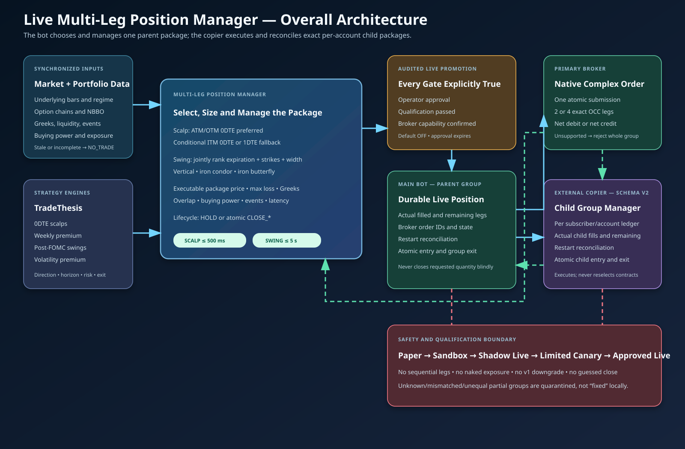
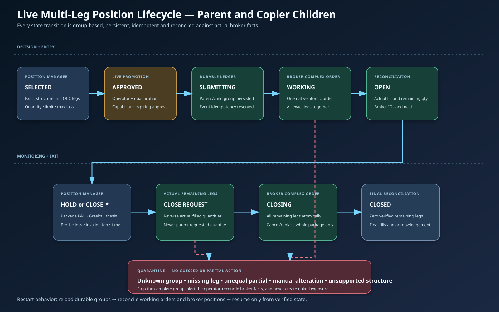

SHARED TRUNK — built once, consumed by every head
MARKET DATA SOURCES
Schwab REST + WebSocket (L1/L2) · IBKR gateway · yfinance · ThetaData NBBO archive · Coinbase CANONICAL DATA + CLOCK GUARD
require_utc() rejects naive timestamps · dual-clock detector · as-of join with explicit availability lag (no same-session close on an intraday bar) MARKET SNAPSHOT — one schema, versioned
price · trend · volatility · liquidity · order flow (is_real flag) · options · auction · breadth · temporal · event — every block carries its own BlockQuality MARKET STATE · REGIME · PHASE — deterministic, computed ONCE · multi-dimensional · UNCERTAIN is first-class THREE IDENTITIES
SCALP HEAD
5 / 15 / 30 / 60 minutes
statistical · 10⁵–10⁶ labelled samples
horizons derived from measured holding periods
FIRST integration target
◆ SWING HEAD
1 / 3 / 5 sessions
statistical · 10²–10³ samples
wider abstention band for the smaller sample
roster currently empty — decide before building
◆ LONG-TERM HEAD
1 / 3 months · NOT a trained forecaster
deterministic evidence scorer + LLM annotator
k-sample vote on the SCORE · asymmetric hysteresis
~10¹ outcomes/yr is not learnable
◆ CALIBRATION (a SEPARATE curve per head) → ABSTENTION POLICY
isotonic / Platt · reliability diagrams · anti-calibration detector · a scalp 0.70 and a swing 0.70 are not the same 0.70 MARKET INTELLIGENCE CONTRACT v1.0.0
track · venue · horizon-specific p_up / p_down / p_neutral · expected move · uncertainty · regime · phase · data_quality_score · warning_flags · primary_drivers
recommended_posture: STRONGLY_SUPPORT · SUPPORT · NEUTRAL · DOWNWEIGHT · VETO — VETO stays disabled until DOWNWEIGHT earns it CONSUMERS
LEGACY BOT
thin contract client
SHADOW → DOWNWEIGHT → VETO RISK
posture → size multiplier
never sizes itself PREDICTION JOURNAL
append-only + outcome write-back
accuracy BY confidence bucket FUTURE v3
same contract, second client
two consumers = a real boundary OFFLINE — EVALUATION HARNESS (the one thing salvaged from the legacy AI)
purged k-fold + embargo · uniqueness weights · shuffle control with a CONTROL_ITSELF_SUSPECT verdict · edge-over-majority-baseline · stratified by regime / horizon / time-of-day
REJECTED-SET counterfactual + PRE-STATED kill criteria — the previous veto blocked 100% of entries on day one and nobody measured it until it was live
"TRACK" IS FOUR DIFFERENT THINGS THAT HAPPEN TO CORRELATE
—
SCALP
SWING
LONG-TERM
Forecast horizon
5–60 minutes
1–10 sessions
1–4 quarters
Information timescale
microstructure, flow, session position
daily structure, IV term
fundamentals, macro
Label definition
barrier touch inside the session
multi-day signed drift
multi-quarter total return
Decision cadence
seconds, inside the scan loop
daily, near the open
weekly, offline
Labelled samples
10⁵ – 10⁶
10² – 10³
10¹ – 10²
Kind of object
statistical forecaster
statistical, more conservative
evidence scorer + LLM annotator
WHY NOT ONE MODEL WITH A "track" FEATURE
The target is a DIFFERENT RANDOM VARIABLE per track — different base rates,
noise floors and autocorrelation. A joint model optimises a weighted average
of three unrelated losses, and the weight is set by whichever track has the
most rows — the scalp track, by four orders of magnitude.
The result would be a scalp model wearing a hat. WHY NOT THREE INDEPENDENT STACKS
Three stacks means three definitions of "trending", three of "high volatility",
three drift monitors and three calibration regimes. They diverge within a
month and the divergence is invisible. This codebase already has the disease
in miniature: THREE incompatible value-area implementations, and two
completely disjoint feature pipelines. SHARED — exactly one implementation
canonical data + the timestamp guarantee
the Market Snapshot schema and feature computation
market state, regime and phase — computed ONCE
the contract, its versioning and serialisation
calibration machinery, observability, drift, journal
the ability to abstain PER-TRACK — necessarily separate
the label definition and the labelling code
the forecast horizons
the trained model and its hyperparameters
the fitted calibration CURVE
the abstention threshold
the posture mapping
① Findscan watchlist scan nightly swaps ◆ ② Dispatch roster quote scan + bar-close events manifest-selected engines ◆ ③ Conditional AI layer confirm/veto + rotation where enabled strategy exceptions remain explicit ◆ ④ Pre-entry gates kill switch · macro · earnings · spread · caps ◆ fail → skip
⑤ Contract + size option legs → contract engine shares → risk-true share size ◆ ⑥ Route fan-out paper + configured Schwab books + opt-in IBKR paper/live ◆ ⑦ Manage HARVEST STACK + ladder structural exits scale rules · EOD-protect ◆ ⑧ Close & record realize P&L · journal Discord · circuit-breaker ◆ ⑨ Nightly evidence — full session + windowed replay → measured gates → roster decisions ◆ records coverage and divergence, preserves gate outcomes, retrains models, then exposes evidence for review and explicit apply fresh models feed tomorrow
DATA layer ◆ quotes, bars, archive — feeds every phase above Design-sync stamp ◆ diagrams vs code — current stamp DS-2026-10-03-Y LONG-TERM BOOK ◆ a separate book on its own clock — nightly S&P 500 screen, LLM thesis, LEAP or shares, and a position doctor. Exempt from every intraday exit rule. Crypto Engine standalone-capable · currently disabled ◆ Futures Track main-loop cycle · currently gated off ◆ Friends & Family Copier publisher + external subscriber agents ◆ Live Multi-Leg Position Manager ◆ exact 0DTE/swing packages → bounded live approval → one atomic complex order → durable fill reconciliation → group exit DESIGN-SYNC DS-2026-10-03-Y · capability arrows are architectural, not proof a route is armed or healthy; see System context for the audited runtime snapshot.
DATA & BROKER
CONFLUENCE v1 — one Windows machine
NOTIFY & OPERATE
Charles Schwab — Trader API bars · quotes · chains · L2 book snapshots · accounts equities/options + explicitly armed Vol Arb 120 req/min cap — two-tier polling protects it ◆ Massive market data ◆ REST history + consolidated prints/NBBO real-data provenance and bounded fallbacks Yahoo Finance (yfinance) fallback bars (hourly swing history) VIX / SPY market-context features
Robinhood data adapter optional quotes/chains behind configured credentials
IBKR TWS / Gateway paper/live books for stocks, options and futures futures are IBKR-only; routing is gated by book also supplies historical bars and tick/NBBO feeds
main.py — bot engine roster slots · quote scan · optional bar-close dispatch conditional AI layer → gates → construction → execution position monitor · broker reconciliation · futures cycle scan watchdog · broker deadlines · 2nd launch EVICTS the bot ◆ Flask dashboard + Live View ◆ admin · positions · backtests · Deeper Dive · /live operator UI; broker/runtime remains execution authority run_nightly.py — evidence pipeline ◆ manifest-selected jobs + recorded-flow replay full-session/windowed results · measured gates data-blocked coverage remains explicit, never synthetic ◆ Local durable bot state bot_mode.json · admin_settings · SQLite · bars_store · ai_models/
Latest architecture — October build ◆ entry brackets · freeze fix · spread eviction · roster Discord (webhooks) trade open/close · 30-min position summary roster lineup changes · retrain + optimizer reports
Email (SMTP) nightly / periodic summaries
Windows Task Scheduler launches run_nightly on schedule no 12h cap since 09-29; memory/stall/market limits
Your browser (LAN) operates the dashboard · applies settings
GitHub Pages this diagrams site — served from the main branch reference only · nothing in the bot writes to it
AUDIT SNAPSHOT — 2026-08-24 16:33 ET · observed configuration/health, not continuously updating telemetry
main.py running · dashboard root and /live returned HTTP 200 · data broker Schwab · 10 scalp roster rows
IB Gateway listening, but IBKR paper/live and futures routing OFF · crypto OFF · bar-event dispatch OFF
nightly task was PT12H then (no wall-clock cap since 09-29); last observed result=2 (2026-08-21) · copier publish ON; external agents not observed
Solid/dashed lines show implemented paths and fallback relationships, not proof of current traffic; amber is the scheduler trigger. Use the snapshot above for observed runtime state.
🗺 Code map — every vital path by function name real module + function names, wired as they call each other ◆ ⚙ HARVEST STACK — premium exits · booster runner · flow-reject premium exits, the disabled booster leg, the shadow referee ◆ Live Multi-Leg Position Manager — 0DTE + swing package selection, atomic entry/exit, restart reconciliation ◆ SECOND CODEBASE — the v2 rebuild (parallel sidecar · live-capable code exists · no process observed)
v2 — a separate hexagonal-architecture sidecar v1 and v2 contain separate ORB-core copies; they have diverged and are not automatically shared or byte-identical v2 exposes orb_rvol through its Strategy contract and registry; its current focused suite passes 167 tests v2 includes paper and explicitly armed Schwab-live adapters, but no v2 runtime process was observed in this audit
v2 architecture constrains design — per-strategy book routing is DEFERRED bootstrap picks ONE broker for the whole process · there is ONE portfolio · mode is a global paper-or-live flag · there is no paper-mirror concept its reconciler compares broker positions against that single portfolio so v1's per-strategy book routing cannot be ported without a dual broker plus portfolio and a per-book reconciler — deferred for now
v1 is the observed trading runtime. v2 is a separate codebase with a single global broker/portfolio; code capability is not evidence that its live adapter is running.
ADJACENT TRACKS & PRODUCTS — process ownership and current gates matter
Crypto Engine standalone crypto_bot.py capability · disabled/no process observed ◆ Futures Track futures_cycle runs from main.py · currently gated off ◆ Friends & Family Copier separate repo · runs on subscribers' own machines ◆ IN-REPO VOLATILITY SUBSYSTEM — capture is supervised by main.py; execution remains a separate explicit lane
Vol Arb — options volatility arbitrage engine main-supervised surface capture + research/nightly/dashboard :: isolated paper ledger :: explicitly armed CLI live execution :: not in strategy scan ◆ Crypto can run separately but was disabled; Futures is a gated main-loop cycle; Copier is a separate repo/product whose publisher is called by main after accepted live orders.
BASE CONTRACT — premium-driven exits
BOOSTER RUNNER — OFF (booster_enabled false)
FLOW-REJECT — shadow referee
Hard stop (premium %) OF −20% · Andre −55% backstop · Levels −30%
Scale-out +20% → bank 25% of the lot then 30%-giveback trail guards the peak
Structure break (Andre bases) _andre_structure_broken exits at ANY P&L
Take-profit cap +100% (tp_override_pct) sweep: every lower cap truncated the fat tail · 999 ≈ trail-only
EOD flat 15:55 (scalps)
Scale-in: OFF doubling the dying 0DTE lost at EVERY threshold tested
DISABLED — booster_enabled = false 3-month, four-strategy study measured it negative everywhere fixing the unit bug alone would switch on a loser
Spread check unit bug — cannot open (ask−bid)/mid*100 > 0.15 compares a percent to a fraction → rejects every contract wider than 0.15% of mid no booster has been able to open since that check was written
Dormant design (replaced scale-in) trigger: base peaks ≥ +20%, then pulls back 5% open $-matched 1-DTE 2-OTM child leg (_open_booster) structure trail = the ONLY exit · 5-min swings, k=3
Kill conditions (as coded) −50% leg premium floor · parent STOP, not parent TP flat 15:55 — overnight conversion tested NEGATIVE
Observed flow -- no synthetic fallback Massive: consolidated stock prints + NBBO bounded hot pool: candidates + every held position book refresh/depletion: Schwab NASDAQ TotalView L2
Six evidence features (0..1) at a LEVEL ◆ HOLD: absorption · delta-flip · book-refresh BREAK: depletion · acceleration · sweep · acceptance levels: PDH/PDL/PDC · opening range · rounds (0.15×ATR band) weighted scores → REJECT (fade) / BREAK (go with) / WAIT
SHADOW MODE — decides, never trades every call ≥0.50 conf → flow_reject_calls.jsonl grade a week of calls vs outcomes → tune → then a roster row
Validation (6-month replay, real engines + live gates, $500 stakes, BS-modeled premiums) 2,997 trades · base legs +$100k with NO losing month (May flat) booster replay figures (+$65k, +$15–25k/mo budget) WITHDRAWN — they predate the unit bug and the negative 3-month study Order Flow removed from the roster 2026-07-24: lost money in the weekly A/B gated AND ungated — signals fade chop; instrument amplified it.
Roster: Andre 2.0 (9:30–4:00 scalp · 9:45–4:00 swing) + Levels (9:30–1:00). Stock stop/TP shown on the dashboard are delta-derived display equivalents — the premium is the only trigger.
Settings: scale_out_at_pct 20 · scale_in_enabled off · tp_override_pct 100 · booster_enabled FALSE (booster_* params retained but unreachable) · flow_reject_* (enabled, conf 0.50, ibkr_ticks on).
① INPUTS (flow_reject_signals.py)
Level map (built daily per symbol) PDH · PDL · PDC · opening range H/L · round numbers "at the level" = within 0.15 × daily ATR
Trade tape ★ IBKR tick-by-tick (ibkr_ticks · real prints) fallback: Schwab L1 volume-delta synthesis (Schwab retired its time & sales stream)
Order book (schwab_l2 · TotalView) defending size at the level (top-3 bid/ask depth)
Aggressor: who crossed the spread? at/above ask = BUY · at/below bid = SELL else vs mid · else tick rule — bad tagging = garbage order flow, so this comes first
② SIX EVIDENCE FEATURES (each 0..1, 90s window)
HOLD the level → REJECT absorption = pressure × (1−displacement) × imbalance delta-flip: early window sold, recent window buys book-refresh: defense hit but replenishing (iceberg) imbalance gate: two-way chop is NOT absorption
BREAK the level → go with it depletion: defense ≥60% eaten and NOT coming back acceleration: recent trade rate ≫ window baseline sweep: multi-price one-way burst inside 1.5s acceptance: price STAYS beyond the level ~15s a wick that snaps back scores 0
Weighted scores hold = .40·absorb + .35·flip + .25·refresh break = .35·deplete + .20·accel + .15·sweep + .30·accept weights are PLACEHOLDERS until calibrated per symbol
③ DECISION (threshold 0.50)
REJECT — fade back into range hold ≥ 0.50 and hold > break LONG at support · SHORT at resistance
BREAK — go with the break break ≥ 0.50 and break > hold SHORT a failed support · LONG a broken resistance
WAIT — neither side proves it confidence = winning score · reasons = features fired
SHADOW MODE (today) evaluates every 3s while price sits on a level calls ≥0.50 conf → flow_reject_calls.jsonl 10-min cooldown per (symbol · level · call) NO ORDERS — a nightly grader scores every call phase-1 VETO of Levels entries is wired but dormant (flow_reject_mode)
Honest caveats (from the strategy spec — read before trusting it) Placeholder weights — calibrate per symbol and MEASURE the hit rate before sizing · spoofing: displayed size can be pulled (that's why depletion/acceptance — things that actually traded — outweigh raw book size) icebergs cut both ways: the strongest absorption is often invisible · liquid names only — on thin tickers every feature is noise · it shifts odds, it does not predict invalidation is always price ACCEPTING through the level against the call
Where it sits in the stack layer 1: base strategy picks the name · layer 2: the LEVEL says where the decision happens · layer 3: flow-reject is the referee AT that price — it assumes a real level and price sitting on it
Files: orderflow_engine.py (pure engine + offline demo) · flow_reject_signals.py (levels, tape, shadow log) · ibkr_ticks.py (real T&S).
Settings: flow_reject_enabled · flow_reject_conf · flow_reject_ibkr_ticks.
① Universe S&P 500 pool (~540) minus current members
② Score every candidate (0–100 each)
Interest score 40% vol trend (20d÷60d) · 30% $ liquidity 20% ATR · 10% sector vs SPY "heating up now?"
Setup score 40% compression · 25% quiet accumulation 20% catalyst (earnings ≤10d) · 15% options flow "coiled to break out?"
③ Admissibility: price ≥ min · avg volume ≥ min · option-chain liquidity OK — else not eligible④ Compare to weakest swappable member bottom quartile · not core · held ≥ 10 days (tenure-protected)
FAST-TRACK (breakout) setup ≥ threshold → in after 1 night jumps the streak queue
INTEREST STREAK interest > weakest × 1.15, 3 nights running streak stops churn on one-off spikes
✓ Swap IN + trained that same night
Not yet → hold as contention
Guardrails: core pinned · 10-day tenure · bottom-quartile-only replacement · per-night turnover budget · streak or fast-track.
Andre's Strategy 2.0 — analyze_ticker_mtf() · signal_strategy = andre_strategy · revert to 1.0: six andre_* settings
L1 · Bias alignment 30m+1H (scalp) / Daily+4H (swing) agree · bias flips on CLOSE through last swing (close_through)
L2 · Setup at key level price at a 1H or 4H swing S/R zone
L3 · Confirm (hard gate) recent CHoCH / BOS on confirm timeframe
L4 · Entry trigger ORB retest OR premarket zone-bounce reclaim (scalp) / pullback-resume (swing)
Risk gates R:R ≥ 2:1 · stop floor = live spread ×1.25 (min 2%) · EMA aligned · clearance to target
Score /6 → confidence & size bias·level·confirm·entry·EMA·VWAP → HIGH/MED/LOW ◆ Andre is a mean-reversion multi-timeframe engine — the four layers are an AND-gate:
all must line up or the trade is skipped. Shown as a worked example; the other eleven
strategies each have their own trigger logic but share this same downstream pipeline
(AI confirm → gates → contract engine → sizing → broker).
Andre 2.0 (2026-07): zone-bounce scalp entry off premarket demand/supply bands ·
scalp clearance vs INTRADAY levels (PDH/PDL/PDC · opening range · premkt H/L) ·
VWAP dist 0.4% · NO signals before 09:31 ET (options can't trade premarket).
Andre 1.0 (original, stricter config) is its own roster entry — see Andre MTF 1.0.
6 scored conditions (each +1)
① L1 bias agreed ② L2 at key level ③ L3 confirm present ④ L4 entry ready ⑤ EMA 9/21/55 aligned ⑥ price at VWAP entry area
R:R ≥ 2:1 is a separate HARD gate — independent of this score.
6 / 6 → HIGH full size
5 / 6 → MEDIUM half size
≤ 4 / 6 → LOW quarter size
This is Andre's own rule-based score. The separate machine-learning confidence (diagram: AI confirm) is a distinct model used to veto/confirm.
Order flow is the PRIMARY driver — bar-derived aggressor proxy
Aggressor delta ≈ close-location × volume delta = ((C−L) − (H−C)) / (H−L) × Volume · close near the high = buyers, near the low = sellers
Session CVD cumulative sum of delta across the RTH session
Imbalance (6-bar lookback) net signed vol ÷ gross vol (−1…+1)
CALL trigger imbalance crosses up ≥ +0.35 & CVD rising
PUT trigger imbalance crosses down ≤ −0.35 & CVD falling
Exit underlying stop 1.1% / target 2.2% (≈20% option stop, 2:1) · intraday-flat, no overnight · AI veto applies
Contract engine — scalp / swing selection ◆Bar proxy is backtestable; live can upgrade to the true time-and-sales tape.
Validated ~7 mo / 1,675 trades: +21%/tr · 39% win · walk-forward +15.9% OOS · ruin ≈0% at 2% sizing. Positive-skew — edge lives in the fat tail.
VWAP Trend — intraday VWAP (reset each RTH session)
Session VWAP VWAP = Σ(typical × vol) ÷ Σ vol · typical = (H+L+C)/3 · reset daily, RTH only
CALL candle CLOSES above VWAP (fresh cross up)
PUT candle CLOSES below VWAP (fresh cross down)
Stop-and-reverse a close back across VWAP flips the position · flat ~20% option stop · 2.5 R:R · close by 4pm
A momentum strategy (opposes mean-reversion). Positive-skew: the trend runners carry the many small stop-outs.
Price Action — structure + zones (replaces RSI/VWAP)
Market structure break of structure (BOS) / change of character (CHoCH) sets the directional bias
CALL bullish BOS/CHoCH + price into a fresh DEMAND zone
PUT bearish BOS/CHoCH + price into a fresh SUPPLY zone
Entry & risk enter on the zone retest aligned with structure · dynamic 3:1 reward:risk stop/target per trade
Admin: Price Action — Max Stop % and R:R Ratio (Strategy Risk Overrides).
0DTE Mean Reversion — fade the stretch back to VWAP
Setup RSI at an extreme AND price stretched a multiple of ATR away from VWAP
CALL oversold + stretched BELOW VWAP → fade up
PUT overbought + stretched ABOVE VWAP → fade down
Stop / target Swing Stop = prior 15-min swing point (live-tested) · or ATR Stop · target is always VWAP
Scalp / 0DTE only — no effect on swing scans. Admin: Stop Method (Swing / ATR) + Min Price R:R.
LuxAlgo SMC — smart-money concepts
Building blocks order blocks (OB) · fair-value gaps (FVG) · liquidity sweeps / grabs
CALL bullish OB mitigation / FVG fill after a downside liquidity grab
PUT bearish OB / FVG in a down-structure after an upside sweep
Risk structure-based stop · admin: LuxAlgo Max Stop % / Default R:R / Min R:R
Backtested / optional engine; shares the same AI-confirm → gates → contract-engine pipeline.
Wyckoff — accumulation / distribution events
Phase context range read as accumulation (building longs) or distribution (building shorts)
CALL SPRING (shakeout below support, reclaimed) → sign-of-strength
PUT UPTHRUST (fakeout above resistance) → sign-of-weakness
Entry enter on the confirmed event (SOS / SOW follow-through) · structure stop
Backtested / optional engine; same downstream pipeline as every other strategy.
Strict / Relaxed — RSI + VWAP confluence
CALL RSI oversold + price at / above VWAP support
PUT RSI overbought + price at / below VWAP resistance
STRICT tight RSI bands → fewer, higher-quality entries
RELAXED looser RSI bands → more entries, lower selectivity
Risk uses the Scalp / Swing Stop-Loss & Take-Profit fields; RSI thresholds set in the admin panel
Same signal engine, two selectivity presets. Both feed AI-confirm → gates → contract engine → sizing.
Andre 1.0 — same analyze_ticker_mtf(), six settings reverted · trend-continuation only
L1 · Bias (swing_confirmed) flips only on a CONFIRMED swing event — can freeze for weeks in a trend (AAPL +19.6% case)
L2 · Setup at key level price at a 1H or 4H swing S/R zone (same as 2.0)
L3 · Confirm (hard gate) recent CHoCH / BOS on confirm timeframe (same as 2.0)
L4 · Entry — STRICT with-trend ORB BREAKOUT only + VWAP within 0.3% — NO zone-bounce reversals
Risk gates static stop ≥ 15% · VWAP stop floor 5% · clearance vs 1H/4H/daily-weekly zones only
Score /6 → confidence & size same scoring as 2.0 → HIGH/MED/LOW ◆ The six settings that separate 1.0 from 2.0 (andre_* in bot_mode.json):
bias_mode = swing_confirmed · clearance_intraday = false · zone_bounce = false
vwap_max_dist = 0.003 · vwap_stop_floor = 0.05 · min_stop_live_spread = false
Character: pure trend-continuation. It structurally refuses fade-into-band reversals —
on 2026-07-21 replay: 1.0 took 0 trades across 59 symbols while 2.0's zone bounces
caught MU and COIN. Not a bug — a deliberately tighter net for trending tape.
Revert live bot to 1.0: flip those six settings (HANDOFF §7).
Levels — intraday level map (levels) · lv_* settings
Level set PDH / PDL / PDC · 15-min opening range · premarket H/L · round numbers count as CONFLUENCE only (never standalone)
Rejection wick ≥ 55% through a level then close back — fade it
Breakout-retest break level, retest holds within 6 bars — go with it
Gates min confluence 1 · ATR-scaled proximity · trend filter on · min R:R 2.0 (lv_min_rr)
All level times are ET/RTH-audited (a UTC bug voided every pre-2026-07-21 Levels backtest — re-run owed before trusting numbers).
Admin: lv_or_minutes · lv_level_proximity · lv_confluence_dist · lv_reject_wick_ratio · lv_breakout_buffer · lv_retest_max_bars.
CHoCH / FVG — morning reversal (choch_fvg) · cf_* settings
Setup change of character (pivot k=2 swings) breaks the morning trend → enter on the retrace into the fresh fair-value gap
CALL bullish CHoCH + retrace into the up-move FVG
PUT bearish CHoCH + retrace into the down-move FVG
Risk & liquidity stop = swing ± buffer (cf_stop_buffer) · R:R 1.5 · spread ≤ 8% · OI ≥ 100 · premium ≥ $0.10 · 0DTE cutoff 13:00 ET
MORNING-ONLY: validated 09:30–11:00 PF 3.41 / 60.6% win — after 11:00 PF drops to 0.50, so cf_no_entries_after = 11:00 by design.
20-symbol universe (cf_universe) · daily-expiry symbols SPY/QQQ/IWM · signal mode: choch (cf_signal_mode).
swing 60 feats (hourly + 4H) · scalp 59 feats (5-min + L2) · names as they appear in top_feature stats
45 core technicals — both modes returns · EMA stack · RSI · macd_hist · Bollinger bb_width · ATR & atr_ratio · mfi · slopes · dist_20d/60d/52wk high-low · vol family · candle anatomy · calendar cycles
9 external context — both modes vix_level · vix_pct_rank · vix_ma20_ratio · spy_rsi · SPY regime · days-to-earnings
6 4H-context — SWING only h4_ema_align · h4_rsi · h4_atr_pct · h4_slope · h4_dist_high/low — no-lookahead, shifted to 4H close
5 L2 order-book — SCALP only (live) bid/ask wall sizes & imbalance — imputed to neutral medians during training
Totals swing 45+9+6 = 60 (L2 dropped) · scalp 45+9+5 = 59 (no 4H block)
Labels: forward-return over the mode's horizon — swing 32 hourly bars (~1 trading week) · scalp 6 bars (~30 min). Regime models (gamma_pos / gamma_neg / near_max_pain)
train on the same features filtered to those regimes. Recency weighting makes the newest bars worth ~12× the oldest.
Legacy self-tuning thresholds · veto wiring · current state
Self-tuning every prediction is logged and graded; if a symbol's ROLLING LIVE accuracy drops, its LOW threshold rises → weak model emits fewer signals
Veto wiring (ai_confirm_mode) off / on / strict · structure veto ALWAYS runs first (4H+15m aligned against you = veto) · model opposes ≥ ai_veto_conf (0.70) → suppressed
Current state — meta-label veto (since 09-22) ai_confirm_mode drives an evidence-gated meta-label veto (net-R after costs vs a held-out floor) · no live manifest → logs UNPROMOTED_SHADOW
The self-tuning and 0.70-oppose rules above are the legacy design (07-21: 11/59 models beat flat) — the meta-label veto replaced them.
The nightly trainer never grants veto authority; a separate checksum-bound live manifest is required, and none exists yet.
Schwab L2 stream → wall detection → confidence upgrade / order-flow features
What it does live bid/ask book → wall size & imbalance → bumps MED→HIGH confidence · feeds the 5 L2 features and the order-flow L2 branch (shadow mode)
Knobs (of_l2_*) strong imbalance 0.40 · min pull 0.50 · min reliability 0.60 · wait 2.0s · shadow mode ON (logs decisions, doesn't act yet)
Operational quirks (these WILL bite) parser bug stored EMPTY books for months (schwab-py relabeled fields — fixed 2026-07-21, verified live) · ONE streamer per account: ToS desktop kicks the bot's stream
Training-time imputation means the model never learned real L2 patterns — the L2 layer only matters at inference, as an upgrade/veto signal.
① LOOP LEVEL — evaluated once per scan cycle, before anything is scanned
Market session is_market_day + is_market_open
Daily loss limit scalp_max_daily_loss_pct 25%
Global position cap max_positions
Per-horizon cap scalp 35 · swing 5 — gates the scan
② ROSTER ADMISSION — per strategy entry (strategy_roster), inside _collect_roster_signals
Entry enabled? roster entry "enabled": true
Time window orb 09:35 · hybrid 09:35–15:30 · smc_swing 09:35–15:45
Day of week per-entry days list · empty = all weekdays
③ INSIDE THE SIGNAL ENGINE — a signal must survive these before it ever reaches execution
MTF structure gate ai_confirm — vetoes fighting aligned D/4H/1H
AI confidence veto per-symbol GBM probability threshold
Candle confirm ai_adaptive swing — no spike-and-fade
RVOL market context — rvol_context.py · shared by every engine · annotate-only by default RVOL = today's cumulative regular-hours volume through minute t ÷ the 14-day average through the SAME minute — time-normalised. The retired vol_ratio_5/20 read the open as "high" every single day. decorate() is called at the single common exit of signals.py and swing_signals.py, so EVERY engine's candidates carry rvol + rvol_class + a reason tag into the journal. 120s per-symbol TTL. Classes: discovery ≥2.0 · elevated ≥1.3 · balanced ≥0.7 · quiet below. rvol_gate_mode defaults to off (annotate-only); veto_quiet is the only mode that drops a candidate. FAILS OPEN by design — deliberately the opposite of the ORB engine's own internal fail-CLOSED RVOL gate.
Nightly ORB scoreboard — AVOID list · a real entry suppressor, not a report orb_signals._avoid_set() skips AVOID symbols inside scan_all_scalp when orb_use_scoreboard is on (default TRUE). ORB book only, and never readable by another strategy. A verdict of AVOID requires n ≥ 40 sessions, negative in BOTH halves, and total ≤ −10R (a materiality floor), with hysteresis so a verdict cannot flap night to night. A scoreboard older than 10 days is ignored with a warning.
④ EXECUTION CHOKEPOINT — the per-signal loop in main.py, in code order
1 · Per-type cap recheck batch may have filled it
2 · Flow-reject referee DORMANT — shadow mode
3 · Already holding? per book — paper ≠ live
4 · Spread gate OPTION expression only
5 · Kill switch halts ALL new entries
6 · Macro filter block · half-size · warn
7 · Earnings gate swing only · block mode only
8 · Market hours 9:30–16:00 ET, no pre/post
9 · Cooldown — time 15 min between signals
10 · Cooldown — losses N losing signals today
11 · Entry time-of-day per-strategy → global fallback
12 · Instrument × horizon scalp admits SHARES too
13 · One entry per setup (day, sym, dir, level) — persisted
14 · Account routing filter opt-in only · DEFAULT DENY
Pass all → contract engine → sizing affordability / settled-cash clearance checked there
The two branches that are NOT simple rejects
Spread gate → OPTION EXPRESSION ONLY The round-trip spread gate is asked only of the option expression. A signal born as shares (_convert_to_stock) never faces it — it was killing signals over a contract the bot would never buy (JNJ).
Macro filter → HALF SIZE block · half_size (×0.5 size_mult) · warn — depending on the event window. Only "block" stops the entry; half_size keeps the signal walking every remaining gate at reduced size, and warn annotates only.
Override that re-keys three of the gates above
roster_fire_all — bool, default OFF · a designated live-test mode Re-keys three of the gates above from per-symbol to (symbol, strategy, direction): gate 3 "already holding" becomes _held_exact(), so only an identical open trade blocks — this overrides even the self-oppose rule. Gate 9 time cooldown keys per (sym, strat, dir); gate 10 loss cooldown counts only that strategy's losses. It deliberately does NOT bypass position caps, the daily-loss halt, the kill switch, entry or macro windows, or book routing. Test-only fills are tagged FIRE-ALL: in the journal, so organic and test fills stay separable.
Verified against main.py on 2026-07-31. Gate order shown is code order.
Kill switch = circuit breaker on EQUITY drawdown (cash + open positions, so deploying capital isn't mistaken for a loss) or a losing streak. When engaged nothing new opens, paper AND live, until manually cleared.
Gate 4 measures ROUND-TRIP cost from mid — entry pays 0.5 × cross × spread, exit pays 0.5 × spread — against the admin-editable
exec_max_roundtrip_pct, a whole-number percent, default 15.0. order_max_cross_pct = 0.50.
exec_max_roundtrip_pct replaced the retired hardcoded SPREAD_MAX_PCT (0.15). It was deliberately made a NEW key
rather than reusing spread_max_pct (8.0 — which drives the min-stop floor and the watchlist option screen),
because pointing the gate at that key would have silently retightened 15% → 8%. At a 15% round-trip cap the gate still admits roughly 20% raw quoted width.
stock_fallback_enabled is a different thing from gate 4: it governs CONVERTING a rejected option signal into stock, and it is currently OFF. Shares-expressed signals skip gate 4 entirely rather than being converted.
Gate 12 is instrument × horizon, not options-only: the scalp horizon admits SHARES. pa_scalp, ema_vwap, smc, smc_15 and reclaim_cont are shares-native intraday — 5 of the 10 roster books.
Gate 13 stamps (day, symbol, direction, level) and persists it to setup_traded.json, so the same structural setup cannot be re-entered later the same day — and the stamp survives a restart.
Gate 14 is DEFAULT DENY: an account is excluded from a signal's fan-out unless it is opted in for manual-trade coexistence. Positions under MANUAL HOLD are never touched by an automated exit.
Flow-reject referee is wired but DORMANT: it only vetoes when flow_reject_mode = "veto" and the referee opposes with confidence ≥ flow_reject_veto_conf (0.65). Today it logs and nothing else.
Daily loss limit does NOT survive a restart — restarting mid-session clears the day's counter and re-arms the breaker. Known open bug. Stage ③ gates live inside the engines, so a rejection there never reaches stage ④.
Two sizing paths — option CONTRACTS and SHARES — then the books that open a leg
Base size — option contracts risk % of risk-equity base (Kelly-tuned) max_contracts cap · no fixed floor
× confidence multiplier HIGH full · MED half · LOW quarter (ML size mult frozen at 1× for now)
Affordability cost ≤ settled cash / buying power? too small → mini options, else skip
Shares — risk-true share count a parallel path, not the contract path
Clamp to real stock buying power LIVE side · FAIL-CLOSED if BP unreadable
Hard cap · sizing.stock_max_shares = 1000 now also covers the live risk-shares branch
PAPER ledger models a MARGIN account — stock_margin_mult 2.0 applied to the paper affordability cap and notional guard for RISK-SIZED signals ONLY — every other strategy keeps the strict CASH guard
paper_open() — DEFAULT, not ALWAYS sized to the paper balance · paper is still the default book = live pin → _resolve_book() = skip_paper
live_open() — if live-routed each Schwab account sized independently shares clamp to that account's real stock BP
Spread & fallback ordering — updated 2026-08-03 spread_selector.py anchors the short strike to the strategy's price target (snapped to nearest listed strike) — replacing the old adjacent-listed-strike rule IBKR's live path no longer hard-skips an unaffordable naked option — it now falls through vertical spread → leveraged ETF (risk-equalized, inverse fund for bearish) → shares
Risk base: full_account or short_term_partition (BLOCKS if missing or empty). Sizing OFF requests 1 unit; partition, heat, BP and split caps can still reject it.
A roster BOOK pin can only ever NARROW where a signal lands — but book = live suppresses the paper mirror, so a paper leg is no longer guaranteed.
P&L ladder (option premium %)
+100% → TP cap (tp_override_pct · 999 ≈ trail-only)
+20% → SCALE-OUT (bank 25% of the lot)
then TRAIL: ≥30% giveback of PEAK → close remainder
peak ≥ +20% then −5% pullback → BOOSTER leg (OFF)
0% — entry
−stop% → STOP (OF −20 · Levels ~−30 · Andre ≤−55 backstop)
Monitor loop — every 5s in RTH: reprice premium, track running PEAK stock-level stop/TP shown on the dashboard are display-only equivalents (via delta)
A · BOOSTER RUNNER — DISABLED (booster_enabled false) flag set false: a 3-month four-strategy study measured it negative everywhere unit bug: (ask−bid)/mid*100 > 0.15 compares a percent against a fraction → rejects every contract wider than 0.15% of mid — the booster has been unable to open since that check was written design was: 1-DTE 2-OTM child leg, once per parent, trailing 5-min swing structure
B · SCALE-OUT (bank a quarter early, once) IF P&L ≥ +20% (scale_out_at_pct) → sell 25% of the lot → remainder rides with the 30%-of-peak giveback TRAIL — a scaled winner can never round-trip to breakeven
C · EXIT (first trigger wins) ◆ TP cap +100% · structure break (Andre) · trail · hard premium stop · EOD flat 15:55 · no new entries from 15:45 SCALE-IN is OFF — doubling the dying 0DTE lost at every tested threshold Booster exits as coded — unreachable while the flag is off structure break (its profit-taking mechanism) · −50% premium floor · parent STOP kills it (parent TP does NOT) · flat 15:55 · never overnight its 6-month replay figures are WITHDRAWN — they predate both the unit bug and the negative 3-month study
2026-07-24 sweep, 687 trades: scale-out +20% beat every higher trigger; every TP cap below "none" cost money (kept +100% as the validation step).
scale-in was negative at every threshold → replaced by the booster runner, which is itself now disabled (booster_enabled false).
STANDARD take profit at the target, CAPPED at +100% by tp_override_pct; else exit on a structure break (andre / orb higher-low or lower-high lost) — the default for most positions
QUICK take profit early at 60% of the configured target — for lower-conviction (LOW confidence) entries
RUNNER no fixed take-profit; a trailing stop arms once the position reaches +20% (runner_min_pct) and closes if it gives back 30% of its PEAK gain — lets HIGH-confidence winners run
ALWAYS ON (any mode) hard STOP at −stop% · EOD force-close (~15:55 ET) · underlying stop: a wick through HOLDS, a completed close beyond FIRES · overnight theta-lock (profitable option that would bleed ≥15% of premium held overnight) · post-scale-out trail — once a QUARTER is banked at +20%, close the remainder on ≥30% giveback of peak
Exit mode is chosen at signal time from the ML confidence (RUNNER ≥65% · QUICK <60% · else STANDARD).
Close position realize P&L
Update balance daily_pnl · high-water
Record trade Kelly stats + pred. log
Discord alert send_trade_closed
Live SELL via close worker
Circuit-breaker check EQUITY drawdown ≥ threshold (cash + open positions) OR N consecutive losses → kill switch → halt
HOW THE EXIT IS PRICED — order_pricing.exit_ladder()
The slippage cap governs the WALK ONLY, never the terminal rung order_max_slippage_pct lifts the INTERMEDIATE rungs; the terminal rung is always marketable so a non-urgent exit can always fill — this is a stated design rule: exits must ALWAYS fill the old behaviour stranded take_profit / signal_exit / structure_trail at the mid on any contract wider than about 2× the cap (median roster width 9.5% vs a 3% cap)
order_improve_pct — _prepend_improve() adds one price-improvement rung, a fraction of the HALF-spread in our favour PREPENDED, never substituted: the ladder still ends at the identical worst price, so enabling it can never make an exit less likely to fill — it costs one rung of time on the exit side the slippage cap is applied BEFORE the improvement rung, so the cap cannot strip it urgent exits bypass the cap entirely and never improve · modelled_fill takes no improve parameter, so paper can never assume a fill that needs the market to come to us
Closes go out in parallel via a dedicated close worker (restart-pending) · a target-blocked auto exit keeps a durable exit intent and is retried · trades feed nightly Kelly.
Step 1 — Watchlist manager (SWAP BEFORE TRAIN)
Score members + ~540 candidate pool → decide swaps → update list & streaks ◆ contention = streak > 0 Step 2 — Build training universe
config.WATCHLIST (74) ∪ dynamic active ∪ contention candidates ∪ core a swapped-in / manually-added symbol already has a model — no 24-hour blind spot
Step 3 — Train per symbol (3 shards, no wall-clock limit) + pooled ai_veto
Train GBM (features + recency weight) ◆ swing: hourly ~729d + 4H · scalp: 5-min · VIX/SPY context once Kelly + ATR recommendations sizing & stop tuning
Publish per-symbol models → ai_models/ Kelly risk % + ATR stops → config updated watchlist
feeds the next trading day's signals, confidence & sizing
Also nightly: Deeper Dive optimizer — strategy grids (risk/exit knobs only), each combo train/test split (70/30 walk-forward);
out-of-sample survival (≥10 trades, stable neighbors) is NECESSARY but no longer SUFFICIENT — raw in-sample winners never qualify.
APPLY GATE — opt-in, default-deny a validated winner is written to live settings only if its optimizer id is listed in optimizer_apply_strategies that CSV ships EMPTY, so out of the box the nightly batch applies NOTHING · max_positions medians are separately gated by optimizer_apply_positions (bool, default false) recommendations are still written to optimizer_recommendations.json UNGATED — the review artifact is produced every night either way
Fetch bars swing: hourly ~729d · scalp: 5-min
Build features + labels swing 60 (hourly+4H) · scalp 59 (5-min+L2) · fwd-return label
Train GBM recency-weighted (newest ~12×)
Walk-forward test held-out accuracy
Save model + impute medians
The self-tuning confidence threshold rises automatically if the model's rolling live accuracy drops, so a weak model emits fewer signals.
Scalp keeps 5 L2 order-book features (imputed neutral in training, live-only at inference); swing drops them for a 6-feature 4H-context block.
Output feeds the “AI confidence score” view — that model IS what this training produces, per symbol, every night.
Signal from ANY strategy Order Flow · Andre · VWAP Trend · … — scalp or swing
Contract Engine — resolve by horizon _resolve_contract_target(mode_tag) · scalp vs swing
SCALP config
Dynamic — engine picks ~ATM (50Δ), weekly expiry · +5.7%/trStatic — Target DTE + strike · default 1DTE / 1-OTM · +21%/trHigh risk — 0DTE ATM <1pm, 1DTE 1-OTM after · today's global scalp mode SWING config
Dynamic — engine picks ~ATM (50Δ), weeks-out expiryStatic — Target DTE (e.g. 30 ≈ monthly) + strike offsetHigh risk — 0DTE ATM <1pm, 1DTE 1-OTM afterfind_best_contract → closest listed option real chain · bid/ask · then sizing → broker
Named expiry policy or per-signal override — either OUTRANKS the global mode intraday strategies name a policy, e.g. EXECUTABLE_GAMMA_FIRST_0_1_THEN_7: nearest 0/1 DTE, then up to 7 DTE, |delta| 0.40–0.60 · signal target_dte / strike_offset still win 0DTE only if minutes-to-close cover the expected hold plus a 60-min buffer · the long-term book buys ~4-month options (roll at 50 DTE), not 18-month LEAPs
Set on the dashboard → Contract Selection, independently for scalp and swing. A mode is only the default — a strategy's named expiry policy or a signal's target_dte / strike_offset win.
A · Run a backtest (Admin ▸ Backtests)
"Run" button legacy path · scalp/swing
backtest_<strategy>.py fetch bars → entries → exits
backtest_results_*.json summary + per-trade rows
Trade-Log table entry/exit time · $ · condition · P&L · balance
Fix: rows now use the renderer schema (signal_reason / close_reason / entry_amount_usd / account_balance) — blank columns solved.
B · Order Flow backtest = LIVE-MIRROR
backtest_new.py (order_flow) delegates ▸
backtest_of_live.py replays live CVD entries: imbalance cross + session-VWAP extension gate
backtest_andre_strategy.simulate() ← shared live engine premium exits stop −20% / target +40% · scale-out + trail · structure-trail · EOD-protect · position + daily-loss caps
Hold rules SCALPS close by EOD (no overnight) · SWINGS hold up to ~5 trading days — matches live. Result: realistic P&L (scalp −40% / swing −8% over 3mo) instead of the idealized +1716%.
C · Deeper Dive optimizer — why it errored, and the fix
OLD — every combo timed out 108 combos/grid · each combo re-ran the full per-bar analyze scan (build_events) over ~59 symbols → >20 min/ combo → 20-min watchdog killed ALL → no result file → dashboard row shows "error".
NEW — precompute entries once only max-stop / R:R / min-R:R change WHICH entries fire, so prepare() builds the 27 unique entry-sets ONCE (4-sym universe, untimed) → each combo = cheap simulate() ~0.5s → grid finishes → result JSON written. No more timeouts.
Andre 1.0 vs 2.0 SAME engine; 2.0 pins 6 settings: bias=close_through, zone-bounce ON, intraday-clearance ON, looser VWAP dist, 3% stop floor, spread-aware stop. 1.0 = stricter.
D · Correction — the roster was never backtestable through this legacy path
OLD PATH COVERAGE — backtest_signals.REPLAYERS dispatched levels / order_flow / strats ONLY no current roster id had a replay adapter — pa_scalp / ema_vwap / hybrid / orb / smc runs returned "no replay adapter" and silently zero trades that is why the dashboard backtest panel was EMPTY for pa_scalp / ema_vwap / hybrid, despite the "Run" button offering them
6-month replay harness (bt6) — drives the REAL engines through the live entry chokepoint ◆ bars_history.db → _BarFeed → each engine's analyze_ticker() → 15-min spacing + one-entry-per-setup gate → portfolio sim → HTML report ◆ Backtests validate a strategy's edge; the Deeper Dive grid-searches stop / R:R / position / daily-loss knobs — only a walk-forward-VALIDATED combo is eligible to auto-apply to live. Roster ids replay via bt6.
main.py __main__ — one Windows process: scan loop + dashboard + supervised/background services
start_dashboard() dashboard/ Flask (LAN) admin · live · positions · research
main() — scan loop while True · signals → order path ①
_position_monitor_thread reprice + exits · path ② bot_mode two-tier interval
_live_sync_loop adopt / prune vs Schwab same two-tier cadence
_position_summary_thread 30-min Discord summary (+ _manual_order_thread)
SELECTED CORE CODE PATHS — click any to walk the actual functions ◆
① SIGNAL → ORDER pipeline main() scan → _collect_roster_signals → scan_all(strategy) → engine analyze_* → ai_confirm.apply → entry gates → _resolve_contract_target → find_best_contract → sizing → paper_open()/live_open() → entry_ladder → _reconcile_live_opens ◆ ② REPRICE & EXITS _position_monitor_thread → paper_monitor → _paper_monitor_unlocked → get_quotes_batch + schwab_stream.get_price → stop/target/trail/scale → _begin_live_close → exit_ladder → _finalize_close → send_trade_closed side: _live_sync_loop · _roster_flush_market_close ◆ ③ NIGHTLY pipeline run_nightly.py main() → collect_bars → run_ai_trainer → ai_daily_trainer.train_symbol → train_model (GBM) → run_all_optimizers POOL → backtest_optimizer walk-forward → _auto_apply_optimizer_results → send_retrain_summary ◆ ④ DATA layer (shared by ①②③) broker_router — configured data route + bounded fallbacks Schwab REST/stream · Massive REST/AM stream · optional Robinhood IBKR bars/tick/NBBO · yfinance fallback · quotes/chains/contracts bars_store SQLite archive · provider freshness/coverage checks ◆ These names exist in the inspected code. The map is a selected architecture trace, not an exhaustive inventory of every worker, adapter or conditional branch.
main() scan loop main.py · while True trading-window cycles
_collect_roster_signals main.py · _roster_in_window parallel · roster order
scan_all(strategy=…) signals.py · swing_signals.py 75s cap each
analyze_ticker / _mtf / analyze order_flow · andre · ms_pullback engines → candidates
ai_confirm.apply() ai_confirm.py · in scan_all MTF veto + GBM confirm
entry gates main.py kill switch · caps · spread ◆ _resolve_contract_target main.py scalp vs swing horizon ◆ find_best_contract broker_router.py closest listed option
Kelly sizing main.py risk % → # contracts
paper_open() + live_open() main.py paper always · live if routed
entry_ladder() order_pricing.py · _prepend_improve mid-first walk · order_max_slippage_pct
_reconcile_live_opens main.py dedupe vs Schwab fills
order_pricing ladders — the price-improvement rung _prepend_improve() prepends one order_improve_pct rung, a fraction of the HALF-spread in our favour — prepended, never substituted so the ladder still ends at the identical worst price · modelled_fill takes no improve parameter, so paper can never assume an improved fill
Strategies run in parallel, collected in roster order; then calls follow the arrows. ai_confirm.apply runs INSIDE scan_all. ◆ boxes cross-link to the concept-level Pre-entry gates and Contract Engine views.
_position_monitor_thread main.py · daemon prefetch · evaluate · enqueue
paper_monitor() main.py · RLock guard serializes pricing pass
_paper_monitor_unlocked main.py per-position pass
quote prefetch get_quotes_batch (spot) schwab_stream.get_price (mark)
stop / target / trail / scale main.py first trigger wins ◆ _begin_live_close() main.py on _close_worker_thread
exit_ladder() order_pricing.py · _prepend_improve cap = walk only · end marketable
_finalize_close() main.py realize P&L · record ◆ send_trade_closed discord_notify.py · Discord alert
Sibling daemons (run in parallel)
_live_sync_loop main.py · adopt / prune vs Schwab
_roster_flush_market_close main.py · close roster windows at EOD
exit_ladder() — the cap governs the WALK ONLY · exits must ALWAYS fill order_max_slippage_pct lifts the INTERMEDIATE rungs; the TERMINAL rung is always marketable, so a non-urgent take_profit / signal_exit / structure_trail cannot strand at the mid urgent exits bypass the cap entirely and never improve · on exits the cap is applied BEFORE the _prepend_improve() rung, so the cap cannot strip it
Stops/targets/trail (◆ Scale-out) enqueue; _close_worker_thread runs _begin_live_close → exit_ladder → _finalize_close → send_trade_closed (◆ Close & record).
main() run_nightly.py Task Scheduler entry 12h stop-limit
collect_bars() STEP 0 run_nightly → bars_store collect_watchlist 5-min archive
run_ai_trainer() STEP 1 ai_daily_trainer.main → train_symbol → train_model hourly bars → GBM (per symbol) ◆ fire_deeper_dive() STEP 2 run_nightly → dashboard POST /api/admin/ run_all_optimizers
optimizer POOL dashboard/backtests.py _PARALLEL_MAX_CONCURRENT=4 _job_family · _next_poolable · _run_all_watcher ◆ walk-forward select backtest_optimizer.py _wf_fields _select_validated
_auto_apply_optimizer_results dashboard/backtests.py GATE: optimizer_apply_strategies default EMPTY → applies nothing
send_retrain_summary discord_notify.py nightly report
Also nightly (later steps)
train_vwap_penetration() STEP 3 run_nightly.py · per-symbol VWAP-stop buffers
run_strategy_allocator_shadow() STEP 4 run_nightly.py · logs a pick · does NOT act (shadow only)
Auto-apply is OPT-IN, default-deny — the review artifact is always written a walk-forward-validated winner reaches live settings only if its optimizer id is listed in optimizer_apply_strategies (a CSV whose shipped default is EMPTY) max_positions medians are separately gated by optimizer_apply_positions (bool, default false) · optimizer_recommendations.json is written UNGATED every night
STEP 1 trains one GBM per symbol (◆ Per-symbol model training). STEP 2 posts to the dashboard, which runs the parallel optimizer pool (◆ Nightly retrain) — _select_validated survivors are only ELIGIBLE.
broker_router — configured data routes and bounded fallback Schwab/Robinhood REST selection · Massive AM only when fresh and session-covered · IBKR data adapters are explicit; order routing is a separate decision.
get_bars() schwab_data.py · cached workhorse
get_quotes_batch() schwab_data.py · batched spots
get_option_quote() schwab_data.py · option bid/ask
find_best_contract() schwab_data.py · resolve OCC
get_bars cache chain mem TTL cache → BARS_DISK_CACHE (shared by backtest children) → Schwab REST → _yf_fallback (yfinance hourly/VIX/SPY)
schwab_stream schwab_stream.py · websocket · get_price / get_delta live marks
bars_store bars_store.py · SQLite archive · append_bars · load_history · collect_watchlist
Paths ①②③ all read through this layer. The get_bars cache fix (TTL + shared disk cache) stopped per-symbol 429s under the 120 req/min Schwab cap.
Two DERIVED tiers — a LIVE band that can reach a broker, and a SHADOW band that structurally cannot (roster_slots · shadow_runtime.resolve_route_plan)
LIVE SCALP BAND — 7 routable rows (bot_mode strategy_roster, observed 2026-10-03, times ET)
Opening Range Breakout (Simple 2R) (orb) · orb#0 09:30–10:00 · orb#1 09:30–11:00 ◆ 5m OR, live price-cross trigger, plain 2R target · level_flow clearance + stock_trend_gate enforced · footprint absorption read on entry and exit Impulse Zone Reaction (impulse_zone_reaction) · 09:30–15:30 · NEW 09-23 ◆ first touch of a 15m / 1h / 4h impulse zone, completed 5m reclaim · stop at the distal wick ± 0.15 ATR · flat 15:55 · live target 1.0R Range Extreme Reversal (range_extreme_reversal) · 10:45–15:00 · NEW 10-02, RESTART-PENDING ◆ positive-gamma fade from the session-range extreme to the opposite wall · stop 0.25 ATR · structure trail · 90-min hold · 2 tries per side VWAP Mean Reversion (vwap_mean_reversion) · 11:30–16:30 · promoted from shadow 09-20 ◆ both directions: 6-bar excursion ≥ 0.75% from VWAP, sweep + CHoCH · target VWAP · exit on the first 5m close through EMA9 · PUT-only profile not selected Consolidation Box (consolidation_box) · 11:30–15:25 · NEW 09-28 ◆ 8 × 5m box, escape close 0.25 ATR beyond on ≥ 1.25× box volume plus one more outside close · needs a fresh published plan file Gamma Compression Breakout (gamma_compression_breakout) · 11:30–16:00 · NEW 09-29 ◆ positive-gamma flag breakout toward the rank-1 magnet on ≥ 1.25× volume · exit on 5m reversal + opposing footprint delta · no nightly lane LIVE SWING BAND — 2 rows
Daily 9/21 EMA Cross (daily_ema_cross) · Swing Structure Runner (swing_structure_runner) ◆ daily 9/21 cross with a 200-EMA regime gate · 45DTE 1-OTM contract the study picked · walk-forward: edge survives OOS but halves SHADOW BAND — 2 enabled rows, contained by ROUTING (ShadowWorkQueue knows nothing about brokers, the copier or notifications)
Premarket Range Break (premarket_range_break) 09:30–16:00 · ORB Level Trail (orb_level_trail) 09:30–10:30 ◆ both traded on the live book in mid-September and were moved back to shadow · pmrb now exits on the level map (auto_manage), oblt on a 2R level ratchet OFF THE ROSTER — a strategy with no enabled row cannot trade, whatever its legacy flag says
Row disabled ◆ structure_runner (09:30–10:00) late_value_return (shadow row) plus the registered manifests with disabled shadow rows No row — files remain, not retired ◆ ema_vwap (stood down 09-13) · htf_leg_pullback kay_aplus · andre_orb · compression_breakout liquidity_sweep_reclaim · vwap_hold_reclaim · spy_fib CROSS-CUTTING ADMISSION — sits ABOVE any single engine ◆ stock_trend_gate (enforced) · clearance (1h / 4h supply-demand + level_flow) · footprint absorption SKIP · watchlist spread filter (≤ 10%) · no new entries in the last 15 min and below every engine: a required, broker-verified entry bracket and partition-based sizing — see the October build views RETIRED since 2026-08-24 — no longer on disk ◆ kay_orb (rebuilt as kay_aplus) · smc, smc_15, smc_swing (luxalgo stayed) · andre_strat · orb_rvol 0DTE RAW_SIMPLE suite ◆ 8 engines, manifest-registered, shadow rows causal replayers since 09-05 Legacy engine detail (dormant) ◆ order flow, ladders and older engines kept as history SMC family (RETIRED) ◆ historical detail only Crypto Engine — separate track ◆ standalone 24/7 capability · disabled Futures Track — separate track ◆ CME micros · gated off Friends & Family Copier ◆ separate product · subscribers' machines Per-strategy exit dispatch still holds: the strategy tag on a position row selects its exit path. A blank BOOK pin never means live; routability is derived from the row's route plan.
15m impulse with BOS → 98% origin retest → ladder the stop up as structure rebuilds
SETUP — 15m impulse leg requiring break of structure (BOS) put: lower high (origin/anchor) → drive that CLOSES through the prior swing low → extreme · calls mirror · pivots k=3, RTH bars
ENTRY — origin retest at 98% retrace of the leg resting-zone touch by the 5-second live-quote scan · tolerance pa2_entry_tol
INSTRUMENT — 0-1DTE near-ATM options fanned across the linked accounts · protective stops are PREMIUM floors (below)
SWEEP TOLERANCE — wick = sweep, close = break initial stop = 105%-of-leg line BEYOND the origin · a WICK through the origin is a liquidity sweep (expected, often fuel) · only a completed 5m CLOSE beyond the 105% line is a true break → exit
LADDER STAGES — stop rebuilds with structure 50% of leg reclaimed → stop to breakeven · 75% reclaimed → stop ratchets to the 50% level · full reclaim of the extreme → take profit · flat 15:55 ET stage advances, the take-profit and the stage-0 105% stop are read on the UNDERLYING (completed closes) NO scale-out, NO scale-in, NO scale-out trail on any pa2_trail position — the exemption covers BOTH ladder books · EOD-protect overlay still banks decaying winners
CORRECTED 2026-07-31 — protective stops are PREMIUM floors on the option, per monitor tick stage 1 → exit if premium ≤ entry premium (option breakeven) · stage 2 → exit if premium ≤ the premium recorded at the 50% touch checked EVERY monitor tick against the live mark · the underlying close-based checks are demoted to BACKSTOPS — under 0DTE theta the floor fires first 0→2 STAGE-JUMP GUARD — both levels touched inside one recheck window, or after a restart → the floor stays at breakeven, not the live mark
NEW 2026-07-31 — Leg invalidation the scan refuses any leg where a completed close already crossed its 105% line since the extreme fixes dead-leg re-arms: RKLB entered 95 min after its break · ASTS, MU, CRWV on 07-30
NEW 2026-07-31 — Body structure pivots/legs read candle BODIES (max/min of open, close) · bodies = price acceptance, wicks = auction noise backtested +21% expectancy/trade · phantom one-wick extremes cease to exist
NEW 2026-07-31 — Deep feed structure sees ≈15 days (local bar archive merged under the live week) instead of 5
Structure semantics — impulse / sweep / fill-anchored grading ◆Sibling — 5min Shares book ◆Validated +$497k / 7 mo sim on the 6-name list at $250 risk · live 07-30 first day exposed plumbing bugs (fixed) · NO higher-timeframe trend filter BY DESIGN (tested: cut profit 40-45%).
The overlay exemption is code-level: _so_active = _so_active and not pos.get("pa2_trail") — it covers every ladder position, this options book included.
Same ladder plan on 5-minute structure — shares by design, pinned to the paper book
Same anatomy as the 15m book — on 5m pivots, NO BOS requirement (by design) origin → extreme → 98% origin retest, read on 5-minute structure pivots · impulse does not need a break of structure to arm
SHARES by design option spread > structural stop — options would burn the edge
Signal pinned to the PAPER book _book=paper · the 07-30 SPY live-short incident made blank book pins illegal
Risk-true sizing shares = $pas_risk_usd risked to the hard stop
−2R INTRABAR disaster stop vs the live quote, behind the close-based structural stop · 15m book has no intrabar hard stop
Exemptions vs other strategies NO scale-out / scale-in / scale-out trail on any pa2_trail position · one entry per setup per day, PERSISTED · 15-min signal cooldown _setup_traded writes setup_traded.json on every stamp; today's stamps are restored at init and other days dropped — nine deploy restarts in one day forced it
Same three 2026-07-31 upgrades apply leg invalidation · body structure (bodies = acceptance, wicks = noise) · 15-day deep feed — the shares book shares the same structure cache
KNOWN OPEN BUG — ladder state does NOT survive a bot restart an orphaned position falls back to generic monitoring · AAPL 07-30: −$50 instead of −$9 · fix queued
Structure semantics — impulse / sweep / fill-anchored grading ◆Sibling — 15min Options book ◆Same ladder stages as the 15m book (BE at 50% reclaim → ratchet at 75% → TP at full reclaim) — shares keep the structural stop honest where option spreads cannot.
Exits here are measured on the UNDERLYING (shares); the 15m options book uses PREMIUM floors on the option instead.
Impulse → retracement → reclaim: the vocabulary both ladder books share
IMPULSE — origin → BOS → extreme the origin (lower high / higher low) is where the aggressive supply/demand sat — an order-block by another name
RETRACEMENT — the 98% journey back to the origin valid ONLY if no completed close crossed the 105% line since the extreme LEG INVALIDATION — added 2026-07-31 after RKLB / ASTS / MU / CRWV dead-leg entries
WICK beyond a line = sweep tolerated — often fuel
Completed CLOSE beyond = break act on it
Wick = sweep, close = break — applies to entries, stops, and invalidation alike.
BODY STRUCTURE (2026-07-31) pivots and legs are computed from candle bodies (max/min of open & close) — bodies are ACCEPTANCE, wicks are auction noise config pas_struct_source / pa2_struct_source ("wick" restores old behavior)
DEEP FEED (2026-07-31) — structure window ≈15 days live broker week merged with the local bars_store archive (5m; resampled to 15m for the options book) · fail-open to the live week arm window unchanged: the extreme must be fresh (12 structure bars) for a signal
ANCHORED TO THE FILL (2026-07-31) — ladder_check(..., entry_ts=...) filters the touch window the level-touch window is filtered to bars OVERLAPPING or AFTER entry — the pre-entry impulse leg can no longer advance the ladder stage before the fix, a 5m leg sitting inside the last 3 bars jumped the stage straight to 2 and stopped positions out 1–4 seconds after entry (real cases on 07-30) applies to BOTH books through the shared _pa2_ladder_action — the ladder only grades price action at or after the fill
structure_trail ARMING — the non-default pa2_exit_mode = trail branch structure_trail_check(entered_at=...) requires the FIRST close beyond a swing point to land AFTER entry — a level first broken BEFORE entry is already-broken structure, not a new break BORN-BROKEN GUARD — an arm whose trail is already breached at arming does not arm; it falls back to stage 1 (the anchor) degrades OPEN on thin data or a bad entered_at — never into a new exit
Internal vs external structure — no HTF bias filter by design books trade the structure-TF's INTERNAL structure · a ladder long on a red day is valid internal structure, not a mistake
Reclaim continuation (reverse trade on invalidated legs) runs as its own paper book — see Strategies.
Unguarded, structure_trail armed on the very first monitor tick of every PA2 retrace entry — those entries exist because a leg JUST broke structure — and exited within seconds.
Any structure_trail close on a short-hold PA2 trade before this fix should be read as "armed off pre-entry history".
ORB — break the opening range on genuinely active names, now timed by the roster window like the rest of the roster
Opening range defined from the first minutes of RTH — the high/low that the open prints becomes the breakout level the 09:35 opening-range-complete floor is still hardcoded regardless of the timing change below
Entry trigger — live price cross (Simple ORB) the live Simple path fires on a live price cross of the 5m opening range the break_close completed-close rule applies on other paths only
RVOL / width / volume gates not reached on the live Simple path — they do not filter its entries
Entry window — roster-driven: live rows 09:30–10:00 and 09:30–11:00 ET orb_flat_time no longer blocks new entries at all — it is now an optional HOLD-CAP only, not an entry gate entry timing is fully roster-driven, matching every other strategy — the engine allows to 16:00, but both live rows close by 11:00 engine cutoff 390 min (16:00) · a stored orb_target_r above the engine limit falls back to a plain 2R · footprint is absorption-only (10-02)
Nightly ORB scoreboard (built 2026-07-29) — a per-symbol verdict, NOT a post-hoc audit of the day's trades, and it tunes no parameters orb_scoreboard.py replays as-configured ORB over roughly 180 sessions × 90 symbols and emits one verdict per symbol: WORKS / AVOID / MIXED / THIN orb_signals._avoid_set() then removes AVOID names from ORB's scan the next morning when orb_use_scoreboard (default TRUE) — the first run avoided three names AVOID requires n≥40, negative in BOTH halves and total ≤ −10R (materiality floor), with hysteresis so a verdict cannot flap night to night a scoreboard older than 10 days is ignored with a warning · it is ORB-only and never readable by another strategy
Complements the ladder books: days like a straight-line gap-and-go run belong to ORB by design — not to the reversal books. Scalps trade 09:30–16:00 ET only; ORB's live rows use only the morning.
REGIME (hard gate) → SETUP (arms, doesn't enter) → ENTRY (first completed close that reclaims the 9EMA)
① REGIME — hard gate on the 3m bar ema9 vs vwap ± band decides long-only / short-only / neutral for the whole bar band width: ev_vwap_band_atr=0.25 (0.25× ATR) floored at ev_vwap_band_min_pct=0.0002 (2bp) — outside the band, neutral: no signal either way
② SETUP — live price sweeps or tags VWAP while the regime holds arms the trade but does NOT enter yet — waiting for a confirming close the arm expires after ev_setup_max_bars=12 (36 minutes) — a stale sweep with no follow-through is dropped, not carried forever
③ ENTRY — first completed 3m close that reclaims the 9EMA by ≥ 0.15 × ATR on the trend side (09-14) wick = sweep, close = break — entries key off the completed candle, not the live wick that armed SETUP EXIT mirrors this: the first post-entry 3m CLOSE back through the 9EMA on the wrong side ends the trade
Instrument & routing shares · STOOD DOWN: no roster row, ev_enabled off — runs nowhere gained Deeper Dive optimizer support 2026-08-07
Exempt from AI-confirm veto validated without the veto layer — it trades its regime unfiltered one of only three engines exempt (alongside hybrid and ai_adaptive)
Before 2026-08-04 this was a single-bar wick-vs-close check with no arm/expiry concept — the 3-stage rebuild is a structural change to the decision flow, not a tuning tweak.
Three signal modules → one weighted combiner → defined-risk credit-spread orders
Module 1 — ORB breakout opening-range momentum read
Module 2 — order-flow imbalance aggressor pressure read, voted off a candle-delta PROXY — not real flow
Module 3 — 0DTE + trend continuation same-day expiry available · RVOL ≥ 1.0 price holds the TREND side of VWAP/OR
Module 2's tape is a PROXY — and two specified gates are inert candle-delta proxy built from Schwab 1-minute bars: volume split by where the bar closes in its range, accumulated into a session CVD · every reason string is labelled [PROXY] vs [IBKR] auto-upgrades to IBKR ticks when ibkr_flow.py AND a market-data subscription both exist · INERT: the depth conditions (OF-B6/S6) and the 0DTE IVRank gate are recorded missing and passed
Weighted combiner module outputs are weighted and merged — the combiner alone produces the final signal
Output — CREDIT SPREADS emits defined-risk option spread orders, not single legs — max loss is known at entry
Spread construction, sizing & exits short strike beyond 0.6× the expected move · width capped at $5 · credit must be ≥ 20% of the width or the trade is REFUSED — 44 of 163 signals were refused by that gate quantity = $125 ÷ max-loss · take profit at 50% of max profit · stop at 1× the credit received · VWAP-acceptance invalidation exit · flat at 15:45
DOMINANT EXIT — VWAP-acceptance invalidation · this is why the book is pinned to paper backtest: 82 of 119 trades exited via invalidation for −$1,573, against +$1,217 from the 22 take-profits invalidation, not the TP or the stop, is the path most trades actually take — the reason hybrid stays on the paper book
Own trend gates (3-of-4 conditions) self-filtering → exempt from the AI veto AND the rotation layers
Book & window pinned to the paper book · trades 09:35–15:30
LIVE SYNC exemption (hy_spread) spread legs carry their own sync exemption so the Schwab account scan doesn't prune them
Operator XML-spec engine (2026-07-30) · modules never trade alone — only the weighted combiner fires · the 3-of-4 trend agreement means it never takes a counter-trend fade.
A dead leg is information — trade the impulse that killed it
TRIGGER — a tracked leg dies completed 5m close beyond the leg's 105% line = opposing break of structure (BOS)
Dead PUT-leg → LONG downleg invalidated — join the new upward impulse
Dead CALL-leg → SHORT upleg invalidated — join the new downward impulse
Standalone leg detection detects legs itself from raw bars — never depends on the fade books' trades
ACCEPTANCE rc_accept_bars consecutive completed closes beyond the dead leg's ORIGIN confirm the reclaim
One shot — no re-arms a close back inside cancels that leg permanently · re-arms tested across 3 months: EVERY config got worse, +457R → −290R
ENTRY — chase cap only within rc_chase_cap (0.5 leg) of the origin
Own flat-time gate no new entries after 15:30
EXITS — no new exit code emits a SYNTHETIC leg: anchor = dead leg's origin · extreme = origin + 1.0 leg measured move
Shared ladder machinery runs it stop(close) at the sweep line below the origin · BE at 50% · ratchet at 75% · TP at the projection · −2R intrabar
HONEST STATUS — approximately breakeven in backtest 3-mo / 90 symbols: −0.02R shipped config (best variant +0.06R, inside slippage) · pullback-entry raises win rate but flips expectancy negative — strong reclaims never pull back (adverse selection)
Shares · paper book · 09:35–15:30 · first session 2026-07-31 · shares the 5m book's bar cache and body-structure flag · will be re-judged on forward paper data.
The chain: sweep the pool → displace through structure → enter the gap it leaves behind
① LIQUIDITY POOL prior-day high/low or a confirmed swing high/low equal highs/lows merge into one
② SWEEP a wick takes the pool and CLOSES back inside the stop hunt, not the move
③ DISPLACEMENT (MSS) a decisive close breaks internal structure and leaves a FAIR VALUE GAP
④ ENTRY = the FVG retrace price retraces back into the gap the displacement left premium / discount gated
⑤ STOP & TARGET stop = the sweep wick target = nearest opposite pool R:R checked before entry
FAIR VALUE GAP — the imbalance the displacement leaves behind the displacement candle prints a gap no trade filled · entry is the retrace INTO that gap, never the break itself — and only in discount for longs / premium for shorts (equilibrium = 50% of the swept leg)
R:R GATE — the opposite pool has to be worth reaching the target is the nearest opposite liquidity pool; if it does not sit at least the configured minimum R from entry the setup is SKIPPED · the operator's rule: "no draw on liquidity, no fuel, no trade"
One trade per symbol per day the chain either completes once or that symbol is done for the session
Scalp / swing discipline 5m and 15m are SCALPS — regular session only · the 1H book may hold overnight
Three books — same model, three timeframes · structure windows auto-scale per book
smc — 5 minute intraday · SHARES · paper book · flat by end of day backtest n=312 · +0.170R per trade every month in the sample ≥ 0
smc_15 — 15 minute intraday · SHARES · paper book roughly 1/5 the trades at about 3× per trade P&L : max-drawdown 7.4× vs 2.2× on the 5m book
smc_swing — 1 hour multi-day holds · SHARES · BOOK: both (paper + live) AI-confirm layer ON · ~7-day timeout 2-year validated
30m and 60m INTRADAY — tested and RULED OUT the sweep → displacement → retrace chain cannot complete inside a single session on those timeframes — too few chains finish, and the ones that do arrive too late to manage · kept drawn so it is not re-tried
Knob persistence — the settings save allowlist each SMC admin key must be registered in the settings save allowlist a parallel rewrite once dropped it — knobs looked saved and were not, until repaired
Active roster — where the three SMC rows live one master SMC enable, then each book enabled separately in the roster each row keeps its own trading window and BOOK pin ◆ smc_enabled gates the two INTRADAY books only (smc · smc_15); the 1H smc_swing has its OWN smcw_enabled — master off does NOT stop the live swing book.
A · What it is, and how it differs from every other book
SEPARATE BOOK — its own clock, its own exits nightly research after the close, not a scan loop; positions tagged signal_mode=longterm intraday EOD/exit logic is SKIPPED — no stop, no take-profit, no EOD close · except bot-opened LT options at ≤ 10 DTE, closed by an expiry backstop (restart-pending) sized as a fraction of the account by conviction, not by ATR risk · excluded from the EOD Discord summary entirely
B · The pipeline, in the order it actually runs
NIGHTLY — run_nightly.py STEP 6 -> longterm_research.run_nightly_update() 1 load universe 2 download closes 3 momentum score 4 shortlist 5 fundamentals + sentiment 6 LLM thesis + expression proposal 7 write watchlist 8 position doctor 9 buy queue 10 Discord ◆ LLM THESIS — per finalist conviction HIGH / MEDIUM / LOW + thesis + risks fails closed when no key is resolvable
EXPRESSION — per finalist stock / leap_call / leap_spread PROPOSAL ONLY — nothing here places an order
OPERATOR SURFACE — the /longterm page buy candidates pending approval, holdings, doctor proposals, covered calls, tunables approve / reject per row; Run research now; doctor mode buttons; live-LEAP and blackout toggles
EXECUTION — main.py drains two queues on the position-monitor thread buy queue -> auto-invest path (no operator click when armed) · exec queue -> approved intents leap_call / leap_spread buy ~4-month contracts rolled at 50 DTE (not 18-month LEAPs); anything unfillable — incl. a bid/ask wider than spread_max_pct — falls back to SHARES ◆ C · The armed state — this contradicts what the docstrings say
DOCS SAY SHADOW. CONFIG SAYS ARMED. longterm_auto_invest is TRUE — code default is False. Pending candidates execute with no operator click. longterm_doctor_mode is AUTO — every docstring in the module says it ships in shadow. live_route_longterm TRUE and lt_live_options_enabled TRUE — real money, real ~4-month options. Nothing here is broken. It is a deliberate operator choice that the code comments no longer describe.
D · Guards that do bind
ENTRY GATES min composite score · min conviction (only when the LLM gave one) earnings blackout in days · max buy candidates per night one lot per symbol · max distinct holdings
EXECUTION GATES live LT options need an open regular session, else the item stays queued account liquidation value must be readable and positive kill switch halts the doctor before anything else is evaluated
E · Known gaps in this subsystem — four closed 2026-08-09, one narrowed
FIXED — leap_spread executes, and can now be CLOSED execution shipped 2026-08-03 (real 2-leg NET_DEBIT / SMART BAG, strikes from the shared spread_selector) 2026-08-09: a force-close on a spread row was being claimed from the queue and silently dropped — now routed as ONE two-leg order
2 of the 11 doctor actions have no executor (was 5) wired 2026-08-09: add · roll_up_lock · uncap_to_call — all three are close-then-reopen or a sized re-entry still ESCALATE: convert_to_spread · collar_or_trim — both WRITE A SHORT OPTION and nothing re-verifies the collateral
FIXED — no year cliff any more equity_calendar.py computes NYSE closures from the rules reproduces the old 2026 table exactly; matches 2025/27/28
FIXED — the buy queue is compacted settled 14d · pending 21d · rejected 45d, and a rejection now SUPPRESSES re-proposal. New queue_remove endpoint
Nightly research -> thesis -> expression proposal -> queue -> ~4-month option, vertical or shares. Separate book, separate clock, exempt from intraday exits. Currently armed for unattended live execution.
A · The funnel
UNIVERSE -> FINALISTS 503 S&P 500 symbols -> 500 price-scored -> 40 shortlist -> 20 finalists -> 5 buy candidates max a name is price-scored only if it has at least three factors and one multi-month return the shortlist is what earns the expensive fundamental, sentiment, LLM and expression passes
B · Momentum — the dominant pillar
MOMENTUM FACTORS — each min-max clipped, then weighted relative strength vs SPY over 6 months carries the single heaviest weight, 3-month is next distance above the 200-day and distance below the 52-week high both contribute raw 3 / 6 / 12-month returns are present but weighted below the relative-strength terms
FUNDAMENTAL ADJUSTMENT revenue growth · earnings growth · profit margin · ROE forward P/E and PEG are INVERTED — cheaper scores higher unknown fundamentals resolve to a neutral 50, not to zero
SENTIMENT a 0-1 social score, 0.5 neutral framed to the LLM as a CROWDING signal, not a buy signal any failure resolves to 0.0
COMPOSITE — momentum 0.65 · fundamental 0.20 · sentiment 0.15 the blend is configurable, and momentum dominating by 3:1 is a deliberate choice worth revisiting
C · What it writes
longterm_watchlist.json — atomic write as_of · universe_size · scored · weights · added[] · dropped[] · entries[] each entry: rank, score, the three pillar scores, returns, fundamentals, earnings date, and the LLM thesis, conviction, risks and the expression proposal
D · How it is triggered
SCHEDULED a Windows task runs the nightly script after the close long-term research is one non-fatal step inside it
ON DEMAND — Run research now the page spawns the script as a subprocess so the LLM's own warnings never reach the bot log
503 -> 500 -> 40 -> 20 -> 5. Momentum carries 65% of the blend and relative strength vs SPY carries the most weight inside it. Unknown fundamentals score neutral, never zero.
A · Provider resolution — fails closed
KEY LOOKUP ORDER environment first, then the gitignored secrets module — the key itself is never drawn here placeholder values are REJECTED, so a stub key fails closed rather than producing a fake thesis no key resolvable: one warning, thesis and conviction come back null, and the watchlist still ships
A DEAD MODEL ID LOOKS IDENTICAL TO A MISSING KEY on 2026-08-02 the configured model 404'd and the symptom was the same null thesis diagnose by calling the generator in the foreground — the nightly path swallows subprocess stderr
B · What goes into the prompt — nine sections
CONTEXT ASSEMBLED PER NAME 1 header with price and the composite/momentum scores 2 price momentum incl. excess vs SPY 3 SECTOR relative strength — against the name's OWN sector ETF, not just the index 4 fundamentals plus the balance sheet — free cash flow, cash, debt, debt/equity 5 analyst consensus — recommendation, mean target, implied upside, the target range 6 earnings track record — four quarters of beat/miss with the percentage, plus days to next report 7 retail/social buzz, explicitly framed as crowding 8 recent news with summaries, not bare titles 9 the instruction block, demanding compact JSON back
C · Output and the caps that used to bite
SHAPE thesis · conviction HIGH/MEDIUM/LOW · risks an unparseable or absent conviction coerces to MEDIUM
PARSE CAPS raised on 2026-08-02 because the richer output was being clipped mid-sentence in the risks field
THE ENRICHMENT CHANGED THE ANSWERS, NOT JUST THE PROSE On the same 20 names, conviction went from 9 HIGH / 11 MEDIUM to 1 HIGH / 19 MEDIUM. More evidence made the model less certain — which is the direction you want, and it means the min-conviction gate now bites differently than it did when it was tuned.
One completion per finalist, a few cents a night. Fails closed on a missing or placeholder key. Sector relative strength, analyst consensus and earnings beats are the highest-value additions.
A · The three vehicles and the rules, in evaluation order
DECISION LADDER 1 LOW conviction -> STOCK 2 dividend yield above the threshold and affordable -> STOCK 3 cannot afford 100 shares -> LEAP SPREAD 4 HIGH conviction and IV rank LOW -> LEAP CALL 5 IV rank HIGH, or MEDIUM conviction -> LEAP SPREAD 6 otherwise -> LEAP CALL
TENOR AND STRIKES target tenor 4 months (lt_expr_leap_months) · roll at 50 DTE expiry floor = max(tenor / 2, roll_dte + 30) deltas differ for the naked call and the spread's long leg
IV RANK IS OFTEN NEUTRAL an unavailable IV rank is treated as 50 so the cheap/rich thresholds never bind and HIGH conviction falls through to the call
B · Proposal only — stated in the module itself
NOTHING HERE PLACES OR MODIFIES AN ORDER the nightly run writes proposals to JSON and the page shows them for manual approval deliberately mirrors the covered-call engine: shadow first, live later behind an explicit toggle
C · The spread gap — closed 08-03
A LEAP SPREAD PROPOSAL EXECUTES AS A REAL SPREAD the executor sends one 2-leg net-debit order, strikes from the shared spread selector the spread can also be CLOSED as one two-leg order — it no longer degrades to a stock buy SHARES remain only the fallback for an unfillable or too-wide contract
AN INERT BUDGET GATE the nightly run passes no budget, so the affordability branch can never fire in production one of its rationale strings is unreachable as a result
Conviction and IV rank pick the vehicle; the selector never trades. all three vehicles execute — leap_spread as a real 2-leg spread — on a 4-month tenor rolled at 50 DTE.
A · Proposer — 11 actions
WHAT TRIGGERS EACH ACTION, in decision order dropped off the watchlist -> trim or exit, high urgency at 50 DTE (was 120) -> roll out conviction rose -> uncap to a call, or add conviction fell -> convert, collar or hold large unrealised gain -> trim, write a covered call, or roll up and lock large unrealised loss -> review otherwise -> hold
B · Executor — six plans over three real order paths
ACTION -> PLAN MAPPING hold -> nothing review -> notify trim/exit and close/derisk -> CLOSE roll out -> ROLL trim or covered call -> COVCALL add -> ADD roll up/lock and uncap -> ROLL the remaining TWO -> ESCALATE
NO NEW ORDER PATH — it reuses three existing queues the force-close queue for closes and the closing leg of a roll the long-term exec queue for the re-open leg (4-month tenor) the covered-call queue for premium selling
C · The gate chain — every gate fails closed
EVALUATED IN THIS ORDER kill switch -> mode -> known action -> has an order path -> constructible -> approval required -> state readable -> action enabled -> position actually present -> vehicle matches -> symbol cooldown -> per-run cap -> attempt cap -> regular session window an ambiguous position match is treated as a DENY, not as a match
D · Two things to know before trusting it
MODE IS AUTO, DOCS SAY SHADOW every docstring describes a shadow-first rollout the live config has it closing and rolling unattended
FIXED 2026-08-09 — no longer stops in 2027 the session check now computes NYSE closures from the rules (equity_calendar.py), for any year
Proposer suggests, executor acts through existing queues only. 9 of 11 actions execute; the two that write a short option escalate. An expiry backstop closes bot-opened LT options at ≤ 10 DTE in RTH (restart-pending).
A · The design decision
IT REPORTS DIFFERENCES, NOT STATE a quiet week produces a short note saying nothing changed, rather than re-listing the watchlist the subject line carries the verdict, so the inbox preview is the report for most weeks
B · Sections, in render order
STRUCTURE headline card — first report, nothing changed, or a count of what moved DROPPED OFF, with the rank it held, its score, and the cut-off it failed NEW THIS WEEK · CONVICTION CHANGED, showing from and to · MOVED, STILL HELD top names by composite score, shown only when something actually changed a footer stating plainly that nothing in the report has been traded
C · What counts as a change
ABSOLUTE THRESHOLDS score, momentum, sentiment, revenue growth, margin below the threshold it is noise and is not reported
RELATIVE THRESHOLDS forward P/E, PEG, free cash flow, debt, price target three of these are inverted — lower is better
D · Scheduling and delivery
SUNDAY EVENING, DEDUPED BY ISO WEEK the send is recorded in the database state table, so a restart cannot double-send there is deliberately no enable flag — nobody subscribed already means do not send
PER-RECIPIENT SUBSCRIPTIONS each address opts in per report kind; a missing preference defaults to subscribed the snapshot is saved AFTER the mail is built, so a delivery failure does not cost a week's history
Change report, Sunday evening, deduped by ISO week. Materiality thresholds keep noise out. No enable flag by design — an empty subscriber list is the off switch.
One signal → a leg in EVERY enabled account — one plan, per-leg markers
Approved signal fan-out independent fills across PAPER + Schwab books + enabled IBKR routes · entry/exit bursts run in parallel, one worker per account · exits sent only by the close worker (restart-pending)
Book pin (_book=paper) — can only NARROW where a signal lands 07-30 SPY incident: a blank pin let live SPY shorts out — blank can never again mean live
PAPER book paper trade_mode only — live mode books no paper leg (restart-pending)
live_account_routing — per-account permissions each account: options / stocks / MANUAL ticks + shorts toggle · shorts and manual default OFF
Schwab A options + stocks
Schwab B stocks only
Schwab C options + stocks
Schwab D options — the workhorse options account
IBKR Paper — stocks · single-leg options · 2-leg combos IB Gateway · hard D-prefix (paper-only) account gate
IBKR Live — stocks · single-leg options · 2-leg combos · REAL MONEY U-prefix gate · needs its own second Gateway session running
Option → stock FALLBACK routing — the second expression of one signal (live) after the option fan-out completes, every stock-capable account that did NOT receive the option order gets the same signal as bracketed SHARES _opted_hashes tracks which accounts took the option · only_accounts targets the remainder — one account never gets BOTH expressions of one signal kill-switch option_to_stock_fallback · applies to every strategy — and THIS is why the stocks-only account (Schwab B) trades at all distinct from the WIDE-SPREAD shares fallback, which is a separate path and still disabled
Schwab execution — mid-first ladder pricing automated entries REQUIRE a bracket: TRIGGER → OCO(STOP + LIMIT, GTC), read back to verify · entries walk mid→ask, exits mid→bid, urgent exits market
IBKR execution — ibkr_exec.py adapter (2026-07-31) connect-per-operation to IB Gateway and fails open to "unavailable" so a scan can never hang · account-prefix gate refuses EVERY operation on mismatch (D-prefix = paper only, U-prefix = live only) native IB brackets: parent LMT + GTC OCA stop/target — bracketed exits rest past the close · FUTURES via IBKR remain a future milestone
IBKR sizing asymmetry — stock legs are sized, option legs are NOT (v1) STOCK legs: each one sized independently to that account's own buying power OPTION legs: capped at the manual quantity, or ONE contract per signal per account — there is no buying-power-scaled contract count yet if the premium does not clear that account's buying power the order is SKIPPED — FAIL-CLOSED, never a partial guess
IBKR single-leg options — live, not a milestone OCC option symbol converted to an IB contract, sent as a LIMIT BUY broker-held child STOP at an 80% premium collapse rides behind it closes cancel resting orders first, then verify the REAL broker position before selling
IBKR combo spreads — one guaranteed 2-leg SMART combo hybrid credit verticals go out as ONE BAG order, never two legs racing net credit = a NEGATIVE combo limit on open · net debit positive on close mirrors the Schwab net-credit vertical · hybrid is paper-pinned, so the first fill lands on paper ◆ IBKR position truth-sync ◆ the adapter reads ALL broker positions; the bot reconciles its own rows against them FAIL-OPEN — an unreachable Gateway never deletes a row ◆ Manual-trade per-account opt-in — DEFAULT DENY a third permission beside Options and Stocks · bot trades go wherever routing allows an operator MANUAL order needs the tick · closing an existing position is never blocked ◆ KNOWN GAP — adoption is SCHWAB-ONLY, by design untracked Schwab positions are re-imported by the adopt pass; there is NO adopt pass for IBKR an IBKR position the bot stops tracking is never re-imported — it sits at the broker, invisible real occurrences: a BAC call and an SPY call stranded on IBKR Paper
OPEN QUESTION — day-trade / PDT status is unresolved the bot does not count day trades at all the constraint it actually reads is each account's intraday buying power the PDT rule's current status differs between the two brokers' docs — not a feature
Brackets are GTC at BOTH brokers IBKR GTC OCA and Schwab OCO(GTC) — bracketed exits rest past the close an IBKR-mirrored SWING keeps its broker-held stop overnight
Other honest caveats entry rows record the limit optimistically until reconciled at the real fill BP-aware sizing caps or SKIPS names an account cannot afford — FAIL-CLOSED when BP is unreadable
Routing (2026-07-31): Schwab A opt+stk · B stk · C opt+stk · D opt · IBKR Paper & Live stocks + options + combos — shorts OFF everywhere, manual opt-in defaults to DENY.
AI confidence & veto layer — GBM second opinion on every roster signal
Feature set (~46) 24 core technicals · 4 calendar 8 extended · 9 external context
5 L2 order-book * real-time only (imputed in training)
GradientBoosting Classifier per symbol · recency-weighted nightly retrain publishes models
predict_proba bull vs bear probability confidence = max class %
Legacy thresholds
< 55% → LOW → no signal (threshold ↑)
55–65% → MEDIUM
≥ 65% → HIGH
Veto scope on the ladder books — dated
2026-07-30 — ladder books EXEMPTED from the veto it blocked 100% of counter-trend ladder entries on the first live morning
2026-07-31 — veto RESTORED for both ladder books −$490 first live day, unvalidated by backtest · funnel being watched
Permanently exempt ai_adaptive (it IS the AI) · ema_vwap and hybrid (validated without it / carry their own trend gates)
Sector-rotation filter (RRG quadrant) same story — ladder exemption 07-30 → restored 07-31 · same permanent-exempt list (ai_adaptive, ema_vwap, hybrid)
* L2 features exist only at inference; imputed neutral during training. Every prediction is logged for the self-tuning accuracy tracker.
The legacy self-tuning thresholds were replaced by an evidence-gated meta-label veto (ai_confirm_mode) — it logs UNPROMOTED_SHADOW until a live manifest exists.
Schwab primary live feed · local archive is the permanent copy · deep structure merge · shared RVOL context · admission gates · crypto containment
LIVE — Schwab primary bars + quotes + options chains · 120 req/min · two-tier polling
One batch-quote round trip per 5-second scan cycle feeds every engine's touch triggers — the live print decides entries, not stale bar closes
Robinhood — data-only toggle alternate quote/bar source · never execution
Yahoo — fallback context last-resort market context
Schwab L2 streaming order-book features for the flow layer
IBKR tick-by-tick — wired, no market-data entitlement flow-reject runs in shadow mode on a SYNTHETIC tape (8 symbols) until a data sub exists
LOCAL ARCHIVE — bars_store / bars_history.db nightly collection of 5m bars for the watchlist · Schwab retention is only ~200 days and rolls off — the archive is the permanent copy
Retention — now configured well beyond the 60-day cap set on 2026-07-31 the 07-31 prune (2.28M rows) is unrecoverable · hourly history and 15m zones are now preloaded for every watchlist symbol
DEEP STRUCTURE MERGE (2026-07-31) both ladder books' structure feed = live broker week MERGED with the archive → ~15 days of pivots/legs (pas_struct_days / pa2_struct_days) · 5m resampled to 15m for the options book · fail-open to live-only
IBKR HISTORICAL — validated on the paper login 2 weeks of 5m bars per request, NO market-data subscription required · earmarked as the archive's backfill source
SHARED MARKET CONTEXT — RVOL belongs in the data layer because it feeds every engine
RVOL MARKET CONTEXT — rvol_context.py RVOL = today's cumulative regular-hours volume through minute t ÷ the 14-day average through the SAME minute — time-normalised · 120s per-symbol TTL
Why same-minute matters — it replaces vol_ratio_5/20 the old vol_ratio_5/20 compared a partial day against a full-day average, so it read the open as "high" every single day
decorate() runs at the single common exit of the scalp and swing signal paths so every candidate carries rvol + rvol_class into the journal — one call site, no engine has to remember to ask
discovery — rvol ≥ 2.0
elevated — rvol ≥ 1.3
balanced — rvol ≥ 0.7
quiet — rvol below 0.7
rvol_gate_mode defaults to off (annotate-only) alternative setting is veto_quiet · today nothing is blocked on RVOL
It fails OPEN by design deliberately opposite to the ORB engine's internal fail-CLOSED RVOL gate
WATCHLIST ADMISSION GATES — tightened 2026-07-31 · a name is admitted only if it is liquid in BOTH the stock and the options market
① Price ≥ $10 minimum share price raised from $5
② Share vol ≥ 500k/day sanity floor only (20-day average) LOWERED from 2M once ③ was added
③ Dollar vol ≥ $150M/day NEW — the gate that matters dollar volume is the real measure
④ Option chain OI ≥ 5,000 front-expiry open interest raised from 1,000
⑤ Near-the-money option spread ≤ 8% tighter than the live cap exec_max_roundtrip_pct = 15% — admission quality, not the tradeability minimum
Effect — the purge took the watchlist 60 → 59 names one name failed the dollar gate · the old 2M share floor had flagged high-priced names as false positives
All five gates are config-driven — re-read from the bot-mode config on every nightly run and editable in admin · since 10-01 members are also EVICTED when a near-money spread is confirmed above 10%.CRYPTO CONTAINMENT — three structural layers · the crypto list is now incapable of holding equities
INCIDENT 2026-07-28 — the crypto engine traded EQUITIES · ROOT CAUSE not found until 2026-07-31 ROOT CAUSE: the watchlist writer's save pattern was UNANCHORED, so it also matched the crypto list block — every dashboard save silently overwrote the crypto list with the equity watchlist the 07-28 fix had guarded the SYMPTOM downstream only; the config kept being re-corrupted on every save, and that guard's test was failing when the real cause was found
LAYER 1 — anchored config write (prevention) the watchlist writer's pattern is anchored to the stock list only and asserts exactly one match — a watchlist save can no longer reach the crypto list
LAYER 2 — config self-heal on load (containment) non-crypto symbols are filtered out of the crypto list at import with a loud warning naming them · a total wipe falls back to a core crypto set · verified by injecting equities and watching them get filtered
LAYER 3 — order-time block (last line of defense) the crypto order path refuses any symbol that is not a crypto pair — even a corrupted list cannot become an equity order
Ladder structure — how pivots/legs are built from these feeds ◆Structure consumers read candle bodies (acceptance), not wicks.
Intraday option-liquidity repricer — re-measures gate ⑤ with the market OPEN ◆ runs weekdays 10:00–15:30 ET so option-liquidity verdicts stop being taken on closed-market spreads · spread failures above 10% now evict via the watchlist spread filter ◆ Live: Schwab 120 req/min, one batch quote per 5s · Archive: retention beyond 60 days · Structure: ~15-day merged depth · RVOL is annotate-only · Gates and crypto guards enforced at LOAD, not only at admin-save.
If the operator opened it, the bot does not close it — the MANUAL HOLD, and the operator-requested exits that pass it
MANUAL HOLD — the position-monitor chokepoint any position the operator opened by hand (source==manual) is never exited by the bot's automated monitor → no bot stop-loss, no take-profit, no trailing, no scale-out one log line records each suppressed exit, so the hold is auditable rather than silent — the row stays visible and priced, it is simply never acted on
What STILL protects a manual position — held is not the same as unprotected the broker-held disaster stop stays live at the broker · the end-of-day flatten still applies · the dashboard force-close button always works every hard safety net survives the hold; what is removed is only the bot's opinion about when to take profit or cut
Wide manual defaults manual rows are written with deliberately wide stop/target defaults so nothing tight ever trips them manual_exits_enabled is the single knob that would hand manual rows back to the bot
Adopted rows are operator-managed too (15:00 deploy) source==live_sync — positions imported from the broker, i.e. the operator's own platform trades extended the same MANUAL HOLD · the 15:55 EOD scalp sweep explicitly excludes them dashboard shows a 📥 Adopted (yours) badge instead of the automated marker
Operator-requested exits — the 🤖 Trail button and its siblings every manual/adopted row carries a Trail button (giveback %) · new: symbol-group Target all / Stop all and a manual stock stop (market sell on Schwab) the monitor arms manual_trail and closes the position when premium gives back that share of its peak allow-listed through the MANUAL HOLD: manual_trail_stop, operator_stock_stop, auto_manage (AUTO), manual stock targets — the operator asked, so the bot is not deciding
Manual-trade per-account opt-in — DEFAULT DENY (14:02 deploy) every account accepts automated bot trades; an operator-pushed MANUAL order is blocked unless that account is explicitly ticked manual allowed in admin admin shows 🚫 No manual trades (default) or ✋ Manual allowed · a brand-new account defaults to automated-only closing an existing position is NEVER blocked by this gate · the reason, plainly: accounts the operator manages for other people must not receive hand-pushed trades
Adoption switch — adopt_untracked_positions OFF: broker positions the bot is not tracking are logged and left completely alone ON: they appear as operator-managed rows · code default is off; the operator re-enabled it
Why these rules exist a hand-placed 0DTE was stopped out by the bot's tight scalp stop the operator's own platform positions were imported and nearly force-sold by the EOD sweep
Where a manual order is allowed to land ◆ per-account routing, the paper book and the live accounts — plus the manual tick ◆ The MANUAL HOLD is a BEHAVIOUR rule enforced inside the position monitor — not a separate book: manual, adopted and automated rows share the same code, and the monitor simply refuses to exit the first two.
The broker is the source of truth — every sync pass reconciles the bot's rows against real positions, and the bot's rows lose
The principle tracked rows are a local cache of a remote fact · where the cache and the broker disagree the broker wins, always — the reconciler never argues the other way
Quantity truth-sync (11:24 deploy) after each sync the bot compares tracked share/contract counts against what the broker actually holds and forces a match over-counted rows shrink to the real quantity · rows with no broker backing at all are removed, oldest row first newly opened, closing and in-flight rows are skipped — a fill still settling is not a phantom
Schwab multi-account sync — what the prune actually compares the sync queries the primary account PLUS every account in live_accounts, so a position held anywhere in the fan-out is seen 180-second fill-grace window: a live row less than 3 minutes old is never pruned — the positions endpoint once lagged a fill by ONE second and pruned a real open position prune matching is PER-ACCOUNT via each row's stored account_hash, so the same option symbol held in a different account can no longer mask a close legacy rows with no stored hash match against the union · an account whose fetch ERRORED contributes nothing to the prune (failed-fetch exemption)
The failure it fixed — a bad response deleted a live row one unlucky API response made a real, open position look missing, so the reconciler removed the row seconds later the same position was re-imported as an untracked adopted row the trade survived; its journal attribution did not — strategy and entry context were lost
Two-strike prune (15:09 deploy) a row is only removed for being missing after TWO consecutive sync passes agree it is gone the first miss just marks the row — a single bad snapshot can no longer delete anything a row that reappears on the next pass clears its strike and keeps its identity
IBKR sync guards — mirror rows structurally excluded from the Schwab disaster-stop placer — matched by account-hash shape, not name an IBKR position must look flat for FOUR minutes (was 90 seconds) before the bot books it closed so a fresh fill that has not propagated is never mistaken for a vanished one
Closes are booked, not vanished a broker bracket (stop or target) that closes a position is written to the journal as a broker_bracket close — the row does not silently disappear at the next reconcile removal on close also deletes the DB row, so a restart cannot resurrect a closed position
Stock brackets use SHARE knobs — fixed 2026-07-31 live_open_stock resolves stop/TP from the signal's own percentages first else the share knobs shares_stop_loss 3% / shares_take_profit 6% never the option-premium parameters · the row stores the pct it actually used nuance: pa2 stock legs still get a %-based stop, not lad_hard_lvl — pa2 carries no und_stop
Fail-open guards — and the deliberate asymmetry if the broker connection is unreadable the sync does nothing rather than deleting rows fail-CLOSED on money: unreadable buying power → do not size fail-OPEN on sync: unreadable positions → do not delete
Phantom fix 1 — reconcile is NOT gated on trade_mode sync_live_positions runs whenever the bot HOLDS a live row, whatever the mode reconciliation is a correctness feature, not a live-trading feature before: forbidden from RECONCILING live positions in paper mode — while still allowed to SELL them · the two gaps cost ~200 rejected orders
Phantom fix 2 — live_close refuses to guess the account scan reports whether it was CLEAN; a clean scan with no holder is positive proof the position is gone — after vanished_confirmations (default 2) such reads it reconciles instead of selling · an UNCLEAN (errored) scan is skipped and retried, never fired at the primary account
Known gap — NOT fixed: a dashboard close can still book the trade twice closing a position from the dashboard can be booked once at the quote at click-time and again at the real fill — the same class of defect as the earlier phantom-row bug intended fix: a CLOSING state on the row, so a close is in flight exactly once and the row can only ever be booked once
Manual hold & adopted rows — who is allowed to exit a position ◆ reconcile covers both brokers · ADOPTION is Schwab-only, not symmetric ◆ A vanished row is booked at the operator's REAL fill recovered from broker order history, or removed without inventing a price.
Adoption, the MANUAL HOLD and this reconciler read the SAME broker snapshot — import what is not tracked, never exit what the operator owns, reconcile everything else.
① ONE BOT — one process, one writer, one set of orders
Single-instance lock — one bot, one writer the bot claims a local port · a new launch EVICTS the running bot (ask, then terminate) two bots running would double every order — every fan-out, every exit the port number is deliberately not published anywhere on this site
Parallel-session collisions — the real hazard one day, five separate rewrites of shared files landed from concurrent sessions two hit live-safety code — the lock and the exit dispatch were dropped twice both had to be re-merged · RULE: re-verify them after any other session edits main
Dead controls — a knob persists only if BOTH sides are wired, server AND page server side: the key must be registered in the settings save allowlist — in the dead-controls incident all 22 keys WERE present, the server was never broken page side: the control must also appear in the admin page's applyToUI (load path) AND collectPayload (payload builder) — that is where they were missing the roster Book dropdown had the same shape: read into memory on load, then dropped by the row serialiser at save time
② ONE ENTRY — the same setup cannot be taken twice in a day
Persisted setup dedupe — stamps survive a restart, expire same day the one-entry-per-setup-per-day stamps are written to DISK, not just memory a mid-day restart can no longer let the same structure re-qualify and re-enter why it mattered: ~nine deploy restarts in a day each re-armed the same setups
One entry per setup — the rule underneath a given structural setup fires once per symbol per day re-qualifying on the same structure is not a new trade — it is the same trade twice also: no new entries in the last 15 min of the session · entries require brackets
Book pin can only NARROW — a blank pin can never resolve to live a strategy pinned to paper can never widen to live · an empty or missing pin means paper, never live locked in after a live short escaped through a blank book pin · click through to order routing ◆ ③ HONEST BOOKS — the journal has to match what really happened
Closes are booked, never vanished when a broker-held bracket closes a position the exit is WRITTEN to the journal — the row does not simply disappear removal on close also deletes the stored row, so a restart cannot resurrect a position that is already flat ◆ Fail-closed on money, fail-open on sync unreadable buying power → do NOT size the trade unreadable positions → do NOT delete the row the asymmetry: guessing at money costs money, guessing at sync costs a stale row
KNOWN GAP — open, not fixed closing a position from the dashboard can still book the trade TWICE once at the quote at click-time, once again at the real fill intended fix: a closing… state so a row can only ever be booked once
STANDING RULE — the admin save round-trip test never runs against the live instance it once corrupted the strategy roster · run it against a scratch copy, or not at all
TESTING LESSON — a PASS that asserted the wrong thing the dead-controls regression test reported PASS because it asserted the DOM read-back, not the round-tripped save — assert what comes back FROM the save
Newer guards: manual trade approval is fail-closed (off by default) · in live trade_mode the bot refuses to create paper rows (restart-pending).
Two of these are still admissions rather than fixes — the double-booked dashboard close (red, right) and the two standing rules, which only hold while a human remembers them.
Every publish carries a DESIGN-SYNC id — site and code verifiable against each other
How it works each site publish carries a DESIGN-SYNC identifier · the bot repo carries the matching DESIGN_SYNC.json (same id, bot git HEAD, key-file fingerprints) · any future session can verify site ↔ code alignment
Current stamp: DS-2026-10-03-Y — open the change audit log ◆ Reconciled against trading_bot main HEAD 259c555 (2026-10-03), 269 first-parent commits since X, plus the bot_mode roster observed 2026-10-03 Y rewrites the roster and adds nine October-build views; 28 older views were edited in place — every edit is listed in the Change audit log Prior published state: commit 2dc1b2b — DS-2026-09-13-X X reconciled the August–September changesets; Y reconciles Sep 14 – Oct 3 and marks restart-pending work explicitly instead of assuming a restart
10-03 Y — roster turned over: 7 live scalp rows (orb ×2, impulse_zone_reaction, range_extreme_reversal, VMR, consolidation_box, gamma_compression_breakout), 2 shadow10-03 Y — required broker-verified entry brackets · partition sizing · gamma-first expiry · operator approvals / AUTO / stock targets and stops10-03 Y — freeze fix: priority admission + close / reconcile workers + parallel roster pass · watchlist spread eviction · footprint absorption-only10-03 Y — long-term options ~4 months · CSP live executor · live-only tracking · nightly wall-clock limit removed · instance guard evicts again09-13 X — roster split into LIVE (6 rows) and SHADOW (7 enabled, ~28 registered) bands, derived not stored; SMC family, kay_orb, orb_rvol and andre_strat retired; clearance ENFORCED on the live book09-13 X — new views: engine family, level stack, auction-state layer, shadow book, execution truth, Oracle, order-flow tape, data-drive data layer, retirements08-24 — ORB/Andre_ORB session state persists and freezes the opening range; Andre keeps its own identity/config/exit policy while delegating the shared entry geometry08-22/23 — decision-first nightly UI, windowed-vs-live divergence, durable gate measurements, recorded-flow replay, two-year archive depth and bounded UNKNOWN order outcomes08-19/24 — Live View adds push-first SSE, roster/universe strategy lens, actual chart + footprint, freshness/gates, EMA/VWAP overlay and explicit preview/confirm order ceremonies
08-15 — main-bot schema-v2 producer wired; external copier multi-leg child ledger, atomic execution, reconciliation, qualification and operations PDF remain pending08-08 — Crypto Engine split into its own 24/7 process — own ledger, Control API, 4 strategies · legacy crypto left running, additive · first backtest: fees = 101% of net loss08-08 — Futures Track Phase 0+1 shipped (552 tests) — 10 defects fixed incl. B10 (stops inert overnight, now STP LMT+outsideRth) · cost/margin corrected, voiding pre-08-08 backtests08-07 — /futures dashboard page + an event-driven futures backtester built (audited: not yet statistically reliable) · IBKR reconciler and roster-schedule work landed08-06 — 0DTE RAW_SIMPLE suite (8 engines) replaces a gated ZDTE framework built and reverted the same window — direct dispatch, no SignalBus; not yet on the live roster08-04 — ORB and EMA/VWAP rebuilt — ORB now all-day (roster-driven 09:35–16:00, break_close) not a ~11:15 cutoff; EMA/VWAP now a REGIME→SETUP→ENTRY state machine08-03 — spread_selector.py anchors short strikes to the price target; IBKR's live path now falls through to a leveraged ETF before shares on unaffordable naked options07-31 — intraday option-liquidity repricer — a separate process re-measures option spreads inside 10:00–15:30 ET ONLY; every prior verdict in the system had been taken with the market closed07-31 — bt6 6-month replay harness — 7 engine adapters drive each engine's real analyze_ticker() through a no-lookahead bar feed plus the live entry chokepoint07-31 — audited every pre-07-31 view against the changelog: 35 stale or undrawn items corrected across gates, sizing, contracts, orb, hybrid, ladder exits, brokers, truth-sync, nightly07-31 — corrections — gate 12 is no longer options-only (5 of 10 books are shares-native) · the spread gate is skipped for shares-born signals · exec_max_roundtrip_pct replaces SPREAD_MAX_PCT07-31 — corrections — booster runner drawn OFF (flag false, plus a unit bug that rejected every contract) · the MFE dead-band was never built · 15m ladder stops are PREMIUM floors07-31 — corrections — optimizer auto-apply is opt-in and applies NOTHING by default · adoption is Schwab-only · ORB is done by ~11:15 and its scoreboard is an AVOID list, not a report07-31 — manual & adopted rows hands-off (MANUAL HOLD · 15:55 sweep exclusion · opt-in trail) · manual trades per-account opt-in, DEFAULT DENY07-31 — broker quantity truth-sync · two-strike prune · closes booked not vanished · stock brackets use share knobs · single-instance lock07-31 — IBKR options + 2-leg combo spreads drawn (site had been stale at stocks-only) · smc / smc_15 / smc_swing promoted to roster rows07-31 — watchlist $150M/day dollar-volume admission gate · crypto three-layer containment (anchored write → self-heal → order-time block)07-31 — orb_v2 + smc paper books (orb_v2: break + rejection-retest, close-inside-OR stop; smc: ICT sweep→MSS→FVG, 30m/60m not viable) · body structure · deep feed07-31 — leg-invalidation check on both ladder books · reclaim_cont paper book · registry pruned to the active roster · IBKR paper + live stock execution wired07-30 — ladder books' first live day · AI-veto / rotation / scale-out exemptions (later partly restored) · book pins · margin-aware sizing · broker-held stops07-30 — EMA/VWAP 3m + hybrid credit-spread engines07-29 — ORB + nightly scoreboard · 5-second scan · batch quotes · roster book routing · RVOL market context · price-improvement rung (the MFE dead-band was diagnosed, never built)
Rule for future sessions: when design changes deploy, bump the DS id in BOTH repos — or flag drift. Never publish account identifiers, balances or credentials.
Stamp M was SKIPPED after a parallel collision. One owner per stamp; the diagrams repo is that owner.
Position management & exits — two regimes side by side
LEGACY / OPTION books — P&L-based (premium %)
+60% → SCALE-OUT half bank half the position at +60% premium
+20% → arm SCALE-IN add on a winning pullback, once · stop → breakeven
Premium trails post-scale-out trail closes remainder on peak giveback
Three ML-picked exit modes ◆ RUNNER · STANDARD · QUICK — chosen by confidence Always on hard stop · EOD force-close ~15:55 · overnight theta-lock
LADDER books — STRUCTURE-based (2026-07-30/31)
No P&L ladder — the stop is structural stage-0 stop: a completed close beyond the 105% line, on the underlying
Stages (both books, on the underlying) 50% → BE · 75% → ratchet to 50% · full reclaim → TP · flat 15:55
5m SHARES book −2R intrabar disaster stop vs the live quote one entry per setup/day (persisted) · exits on the UNDERLYING
15m OPTIONS book — PREMIUM floor stops stage 1: exit if premium ≤ entry premium (option BE) stage 2: premium ≤ the mark recorded at the 50% touch checked EVERY monitor tick · underlying close = backstop
0→2 stage-jump guard both levels in one recheck window, or a restart → floor stays at BE
EOD-PROTECT overlay peak ≥ threshold and giveback ≥ 20% near close → bank it (e.g. CRWV +$57, 07-30)
NO scale-out, NO scale-in, NO scale-out trail on ANY ladder position — both books _so_active = _so_active and not pos.get("pa2_trail") — the 15m options book is NOT an exception; ladder exits are structural only
Broker-held stops for ALL strategies (2026-07-30) stops rest at the broker, not only in the bot loop
KNOWN GAP — no profit protection below a +15% peak ratchet_arm_pct 15.0 / ratchet_floor_pct 0.0 are unchanged: the ratchet arms only at peak ≥ +15% and floors at breakeven, so below a +15% peak only the −15% stop acts — measured ≈ −$564 no MFE dead-band mechanism was ever built · the proposed 10%/70% alternative was fitted and scored on the same two sessions — it must be backtested first
CLOSED 2026-07-31 — stock legs no longer inherit the option-premium bracket live_open_stock resolves stop/TP from the signal's own pct, else shares_stop_loss 3% / shares_take_profit 6% — the ±15% premium leak is gone and the row stores the pct it used
Exits are measured on the UNDERLYING for the 5m SHARES book only; the journal records exit levels.
15m OPTIONS book: protective stops are PREMIUM floors on the option, checked every monitor tick vs the live mark — under 0DTE theta the floor almost always fires before the underlying backstop.
A · Why it exists — the systemic flaw
THE FLAW — every option-liquidity verdict in the system had been measured with the market CLOSED option_liquidity_cache.json is the gate deciding which symbols the watchlist agent may admit it was only ever written by the nightly agent, so verdicts were taken when spreads blow out — good candidates were rejected for weeks on garbage data
MEASURED PROOF — same symbols, same code path two hours apart on 07-31: QQQ 2% at 15:35 ET vs 17% at 17:20 · IWM 4% vs 12%
THE FIX — option_liquidity_repricer.py (2026-07-31) a standalone process that re-measures the same gate inside market hours
B · The time guard is the whole point
TIME GUARD — refuses to write stale-spread data WINDOW_START = 10:00 ET · WINDOW_END = 15:30 ET, inclusive · weekends refused outside the window it logs that it is refusing to write stale-spread data and exits 0 — verified live: it declined at 17:19 rather than write bad data
--force bypasses BOTH checks window and weekday · the operator escape hatch
CAVEAT — naive local time, ET is assumed and there is no holiday calendar — it will run on a market holiday
C · One definition of the gate — and what that gate actually measures
ONE DEFINITION — it calls watchlist_manager._option_gate(symbol) the same function the nightly agent and the live contract selector use, so there is no duplicated logic to drift
WHAT THE GATE ACTUALLY MEASURES — widely misdescribed as a median; it is the MINIMUM front expiry, CALLS ONLY · fails if total open interest across that chain is below MIN_OPT_OI = 5,000 · NO volume test at all then it takes the 6 nearest-ATM calls, computes (ask−bid)/mid for each with mid > 0.05, and keeps the MINIMUM — the tightest tradable near-ATM contract effective cap = min(spread_max_pct, opt_spread) = 8%
CLOSED-MARKET ESCAPE HATCH inside the gate itself if no near-money mid exceeds 0.05 it passes on OI alone and records "spread unconfirmable"
D · Work list, budget, and the cache write
WORK LIST — priority order current watchlist members first (they gate live trading) then the candidate pool, oldest-checked-first
BUDGET — hard cap per run 45 chain fetches per run (default) · 0.6s between symbols skips anything already repriced intraday today
CACHE WRITE — atomic, provenance-tagged rewrites the same cache atomically (tmp file + os.replace) adds src: "intraday" and at: HH:MM so intraday and nightly measurements are distinguishable — absence of src implies a closed-market nightly read
KNOWN GAP — the provenance is written, but nothing uses it and it can be lost nothing downstream reads src or at except the repricer's own skip test the nightly re-verification overwrites a repriced record back to the 3-key form, DROPPING provenance · the read-modify-write is unlocked, so a nightly write can clobber it
E · Flip reporting and isolation
FLIP REPORTING — logs BOTH directions newly-failing names AND recovered false-fails recovered = names the nightly agent had wrongly rejected
REPRICER WARNS — the spread filter evicts warns loudly if a CURRENT watchlist member fails on live spreads confirmed > 10% spreads evict (max 50% of list/day)
ISOLATION — read-only with respect to trading never places an order · never writes config.py or the roster · never imports the trading loop
F · Who consumes the cache — and therefore what a wrong verdict costs
THE ONLY READER — watchlist_manager._tradeable_pool(), on the nightly path a record is honoured for LIQ_RECHECK_DAYS = 21 days · only symbols marked ok enter the scored pool up to LIQ_CHECKS_PER_NIGHT = 60 stale names are re-gated live each night, then decide_swaps() re-runs a live _option_gate on each would-be admission existing watchlist members are exempt from this pool
THE DAMAGE THE REPRICER UNDOES a false ok: false means a name is never scored, never proposed and never admitted — for up to 21 days so the repricer's job is to make sure that verdict was taken on live spreads, not closed-market ones
G · Schedule and the data-source decision
SCHEDULE — Windows scheduled task weekdays at 11:00 and 14:00 ET · start-when-available 20-minute limit · non-overlapping runs
DATA SOURCE DECISION — Schwab, not IBKR IBKR was evaluated and REJECTED: this login has no options market-data entitlement it serves historical bars but no option bid/ask, live or delayed
First live run is Monday 11:00 — which produces the first trustworthy option-liquidity read of the whole watchlist, taken with the market open.Window 10:00–15:30 ET, weekdays · one shared gate definition · 45 chains per run · tags src/at but nothing reads them · warns; >10% spreads evict · never trades.
A · The blocking discovery that forced it
BLOCKING DISCOVERY — backtest_signals.REPLAYERS only dispatched levels / order_flow / strats not one current roster id had a replay adapter, so running them returned "no replay adapter" and silently zero trades which is why the dashboard backtest panel was EMPTY for pa_scalp / ema_vwap / hybrid
B · Dataflow — the real hops
bars_history.db SQLite bar archive
bars_store.load_history then resample to the span
bt6_replay._BarFeed truncates at the simulated bar
bt6_replay.replay() drives the loop bar by bar
engine.analyze_ticker() the REAL live engine code
bt6_run6 — entry chokepoint spacing + one-entry-per-setup
backtest_portfolio.simulate() fills · friction · balance
bt6_report HTML + summary JSON
C · Data reach, measured empirically — the 1-minute ceiling is the hard constraint
5-minute back to 2025-11-13 ~8.5 months · ~2.19M rows · 90 sym
15-minute back to late January about 6 months
30-minute back to late January about 6 months
1-minute only about 6 weeks the hard constraint
RISK TO THE DATA — the archive's retention prune defaults to 60 days if it runs it would delete most of the replay window this harness depends on — flagged, not fixed
D · No-lookahead, and the four replay-fidelity mechanisms
NO-LOOKAHEAD IS THE CORE DESIGN — _BarFeed truncates every frame at the simulated bar (df[df.index <= cut]) and honours each caller's span for 1minute it returns an EMPTY frame rather than 5-minute bars mislabelled as 1-minute — the exact bug the legacy stub had, so an engine no-ops instead of trading fiction
MECHANISM 1 — per-bar cache clearing · prevents the engine freezing on one stale frame engine frames memoise against a real monotonic clock — the scalp engine holds its structure frame for 90 seconds in replay wall-clock barely moves, so the engine froze on one stale frame; the first smoke test produced ZERO signals purely from this six cache attributes are cleared every bar · a separate set of per-day attributes is cleared each session
MECHANISM 2 — global clock patch · prevents the engines reading the real wall clock engines do a FUNCTION-LOCAL "from datetime import datetime", so swapping a module attribute cannot reach them _GlobalClock rebinds datetime.datetime to a SUBCLASS, which keeps isinstance valid, and restores it afterwards
MECHANISM 3 — bars_store.load_history patch · prevents deep history leaking FUTURE bars the scalp engine merges deep history straight from the archive and would otherwise be handed bars past the simulated bar the patched loader derives its span from the simulated cut, never from the real clock
MECHANISM 4 — universe_for() · prevents manufacturing trades on symbols the bot never scans each engine replays against its OWN live universe: the scalp-family engines against their 12-name study universe orb and price_action_2 replay against the 60-name watchlist — replaying all 60 everywhere would invent trades
E · Adapter coverage — and the gaps, which are two different kinds
REGISTRY (ROSTER) — 7 adapters orb (cutoff 11:05) · orb_v2 · pa_scalp · reclaim_cont · price_action_2 (needs native 15-minute) · smc · smc_15
BLOCKED BY THE 1-MINUTE CEILING — 2 ids ema_vwap and hybrid have no usable 1-minute history a data limit, not a missing adapter
KNOWN GAP — smc_swing has NO adapter at all live and dispatched, but absent from the harness and its report names unexplained — distinct from the two data-ceiling cases
F · The entry chokepoint lives in the driver, not the engines
bt6_run6 re-implements the live gate that sits in main.py a 15-minute per-symbol signal spacing, plus one-entry-per-setup-per-day keyed on (day, symbol, direction, level) without it, price_action_2 alone fired 236 raw signals on ONE symbol over the window
CAUTION — three known divergences from live the backtest ALWAYS applies a 15-minute cooldown, whereas the live key defaults to OFF the backtest keys the cooldown on symbol only, while live keys on (symbol, strategy, direction) under fire-all the live dedupe applies only to ladder signals, and it persists to disk
G · Run parameters — and which live gates are NOT applied
Window 2026-02-01 → 2026-07-31 six months of archived bars
Start balance $25,000 fixed seed · reproducible
Friction empirical, sampled from logged quotes
Gates 10 live gates applied 3 are NOT applied
THREE LIVE GATES NOT APPLIED — the AI veto, the live intrabar quote, and L2 / order-flow depth so live would take FEWER trades than the replay shows
FIDELITY GAP — replay calls analyze_ticker per symbol and never scan_all_scalp so ORB's fail-closed RVOL gate and its top-N ranking are not reproduced
H · Sweep runner and report
SWEEP RUNNER — unattended by design 3 jobs concurrent, heaviest first · status written to a JSON file with running / done / pending a watcher polls until the sweep drains, then builds the report unattended so the deliverable survives the session ending
REPORT CONTENTS a scoreboard · per-strategy detail by exit reason / symbol / entry hour / month a "what would have helped" counterfactual, explicitly labelled IN-SAMPLE top-3 dependence · worst exit path · symbol concentration · hour-of-day · profit factor · plus a method section on what was and was not replicated
I · Isolation — state it accurately, the intuitive version is wrong
CAUTION — the harness is COUPLED to live engine code _bt6/ holds helper scripts and outputs, NOT pinned engine copies bt6_replay imports the LIVE engine modules by name at runtime and monkey-patches them in-process, restoring everything in a finally block its fidelity therefore depends on that restore · the reverse direction IS clean — no live module imports anything named bt6_*
J · Two real defects found while characterising it
KNOWN GAP — the report can load ZERO results the driver writes per-strategy result JSON to the repo root the report globs for them in the _bt6 output directory
KNOWN GAP — the watcher's poll ceiling is wrong its own comment claims roughly 5.5 hours the actual ceiling is about 22 hours
K · Status, and the standing caveats that outrank the simulator
STATUS at publish — the sweep was restarted 17:00 with corrected gates over the 6-month window and was still in flight: 3 running, 4 pending.STANDING CAVEATS — the site should never let a reader trust these dollars about 90% of exits fill at the exact theoretical trigger rather than at a real premium Black-Scholes on flat realised vol with no skew, so it never pays the volatility risk premium max drawdown is cash-only · entries are priced at the BAR CLOSE while the ladder and SMC engines trigger on a live intrabar quote reality check: the live paper book ran −33.4% over a window an earlier simulation scored at 62× RANK strategies against each other — do NOT trust the dollars.
Real engines, real gates, archived bars · 7 of 10 roster ids covered · 1-minute reaches only ~6 weeks · the entry chokepoint is re-implemented in the driver, so it can drift from live.
A · Why it exists
THE CHAIN FLATTENER WAS DISCARDING MOST OF THE PAYLOAD the legacy flattener emitted nine fields; theta, vega, rho, days-to-expiry, multiplier, underlying price and bid/ask sizes were all present upstream and dropped on the floor days-to-expiry is handed over inside the expiry map key and was being split off and thrown away
AND THE STREAM SUBSCRIBES TO FIVE OF FIFTY-SIX FIELDS the level-one option stream carries open interest, implied vol and all five greeks the bot asked for mark, bid, ask, delta and underlying price — nothing else
B · What the package adds
ELEVEN MODULES, EACH RUNNABLE WITH NO BROKER SESSION store — the snapshot archive with a no-lookahead read · chain normalise — one normaliser, all sources gamma — dealer exposure with the sign as the feature · features — evidence-ranked directional inputs capture — a bounded universe and a conflating buffer · registry and ablation — tier and then measure structures, orders and spread exec — N-leg construction and execution
C · The two rules that keep the archive honest
OPEN INTEREST CARRIES ITS OWN AS-OF DATE it reflects the PRIOR close and publishes next morning using it as current is a full-day look-ahead on every gamma, wall and pinning feature — and it looks fine
A MISSING VALUE IS NULL, NEVER ZERO a silent zero is a lie the model learns from scores renormalise around gaps instead of treating an unmeasured input as a measured zero
D · Capture is a one-way door
CADENCE PERMANENTLY SETS THE FINEST RESOLUTION ANY FUTURE BACKTEST CAN REPLAY AT Unlike bars, there is no vendor to buy the gap from later at this granularity. The universe is bounded by the streamer's symbol cap: three underlyings, three expiries, a fixed strike window around spot. Every clip is recorded, because silent truncation reads as "we looked and found nothing" when the truth is "we never looked".
E · Dealer gamma — the sign, not the level
THE PUBLISHED RESULT IS AN INTERACTION, NOT A LEVEL intraday momentum is strong when dealers are short gamma and statistically absent when they are long so the useful feature is momentum conditioned on the gamma sign, not the exposure plotted on a chart the existing engine's exposure figure is also understated against the convention its comment claims
Additive — nothing imports or modifies an existing module at import time. Open interest is dated separately from the snapshot. Capture cadence cannot be revised upward later.
A · What the broker actually allows
TWENTY-ONE COMPLEX STRATEGY TYPES, AND NO DOCUMENTED LEG LIMIT the enum includes iron condor, butterfly, condor and their unbalanced variants the leg collection is an unbounded array in the published specification four-leg orders are placed on this API in production by other practitioners
BUT ONLY THREE VALUES HAVE PUBLIC EVIDENCE OF BEING ACCEPTED so anything with three or more legs is sent as CUSTOM, and the engine classifies from the legs the named values are available behind a flag, for a deliberate one-lot test — not for live size
B · Why a condor could previously be opened and never closed
FOUR SELF-IMPOSED CHOKEPOINTS the builder only built verticals · the leg decoder rejected anything but exactly two legs the order builder hard-coded the vertical strategy type · persistence held one scalar net and width so the close path returned false and the position stranded until expiry
C · What replaces it
PAYOFF ENGINE, NOT FORMULAS max loss, max profit and breakevens are computed from the payoff diagram at every strike and beyond the wings — so a broken wing cannot be mis-sized
DEFINED RISK IS ENFORCED BY ARITHMETIC if the payoff keeps falling past the outer strike the structure is REFUSED — a naked short call is rejected by the maths, not by a name blocklist
THE CLOSE IS BUILT FROM THE OPEN ORDER, NOT FROM A DATABASE ROW same complex type, flipped order type, every instruction mirrored open to close building it from the open order is what guarantees the leg set cannot drift
D · Two failure modes worth drawing
THE SYMBOL IS 21 CHARACTERS, PADDED TO SIX the underlying is left-justified and space-padded under-padding is the top cause of silent rejection
A SUCCESSFUL ORDER RETURNS NO JSON BODY the id is in a response header; parsing the body throws on every success, and the retry duplicates
E · A bug fixed on the way
SPREADS HAD NEVER USED THE PRICE LADDER the spread module never imported the pricing module, so every vertical went out as a static limit while every single-leg order got the full mid-to-natural walk — on four legs that matters more, not less the N-leg path now walks the ladder; the existing two-leg path still does not
Use CUSTOM for three or more legs. Max loss from the payoff diagram, defined risk enforced by arithmetic, close mirrored from the open order. Two-leg spreads still bypass the price ladder.
crypto_bot.py — separate-process capability; no crypto process observed and crypto_enabled=false at audit time
crypto_bot.py — standalone 24/7 process own single-instance lock · own clock, independent of the equities scan loop own ledger (balance / open positions, atomic writes) — NOT the shared paper_state.json the equities bot uses 34 files · ~8,900 LOC · 68 tests
data/ & brokers/ — provider ports MarketDataFeed port: Coinbase feed · yfinance fallback · historical replay CryptoBroker port: Paper broker · CoinbaseSpot broker append-only audit log on every broker call
strategies/ & risk.py 4 strategies + shared indicator cache behind one registry a volatility-regime filter can veto any strategy — ships OFF by operator choice risk.py: sizing + every entry gate in one function
The 4 strategies rsi_reversion — exact-parity port of the legacy RSI(14) mean-reversion logic ema_trend — EMA-based trend following donchian_breakout — channel breakout (a lookahead-bias bug was found and fixed: compression is now measured BEFORE the break, not on the break bar) momentum — momentum-based entries
Control API — crypto ⇄ Trading Core GET /risk-status — crypto polls main.py before every entry fails safe (halted) if the call errors — main.py stays the single kill-switch authority POST /report-state — crypto pushes a heartbeat (position count, balance, last-scan time) one-directional today: crypto asks, core answers — core doesn't yet push to crypto
Coinbase live spot — BUILT, DISARMED disarmed mechanically: no Coinbase API credentials installed — hard error at startup if armed with none 7 overlapping checks: mode · confirm_live · dry_run · creds-present · pair guard · allowlist · notional caps no override flag exists — it has never touched a real venue
/crypto-engine dashboard page + crypto_backtest.py dashboard/crypto_control.py exposes the Control API · dashboard/crypto_engine_page.py serves the live page backtest/ replays stored candles through the SAME live strategy code, not a separate simulator
First honest backtest — PAPER / SIMULATION numbers, not a real account 20 days · BTC/ETH/SOL spot long-only · net P&L −$3.58 (−0.72%) · 15 trades · 40% win rate fees $3.60 = 101% of the net loss — this strategy set currently loses more to fees than it makes real book spreads verified 0.00–1.35bp on BTC/ETH/SOL · indicator parity checked to 1e-13 vs pandas
Legacy inline crypto — code remains in main.py, currently gated off crypto_paper_open / crypto_monitor / run_crypto_cycle · ~600 lines · RSI(14)-only · 3 symbols shares the equities bot's balance / open_positions · paper-only, no broker ever existed on this path crypto_enabled=false prevented the cycle in the observed runtime; presence in main.py does not mean it was active
Split reason: crypto is 24/7, equities scalps are 9:30–4:00 ET — a market-hours mismatch, plus shared-state risk on one loop. The split is done; the equities scan-cadence overrun is a separate, still-open issue.
futures_session / futures_calendar / futures_risk / futures_ledger / futures_cycle now own the track
Core modules — SHIPPED futures_session.py — per-product RTH windows, trade-date rollover (17:00 CT boundary, not calendar-date), holiday calendar futures_calendar.py — contract identity, First Notice Day vs Last Trading Day, roll-date logic futures_risk.py — tick-aligned brackets, dollars-at-risk sizing, margin, heat/exposure futures_ledger.py — append-only book of record · futures_cycle.py — the live scan/open path (main.py's run_futures_cycle is now a 3-line delegate into it)
Broker & data layer futures_data.py (bars/session tagging) · futures_instrument.py (linear P&L, tick rounding, commission/margin model) ibkr_futures.py (order layer) / ibkr_data.py (data layer) — via IBKR, separate paper and live targets legacy futures_signals.py (RSI+VWAP) still exists but is largely superseded by the new track
Phase roadmap Phase 0+1 — SHIPPED: session + calendar modules, corrected cost/margin constants, 10 live-path defects fixed, 552 tests green Phase 2 — NOT STARTED: backtest integrity fixes (ORB memoization bug, a roll[i+1] lookahead bug, walk-forward split, wiring futures into nightly_run.py) Phase 3 — NOT STARTED: roster wiring — broker_router has no futures branch yet, strategy_roster is still ['scalp','swing'] only, no admin UI table Phase 4 — NOT STARTED: futures-native strategies — none exist yet beyond the legacy RSI+VWAP engine
Defect B10 (headline) — IBKR plain stops were inert overnight on Globex IBKR only simulates plain stop orders during Liquid Trading Hours — a bracket's stop leg silently stopped protecting the position after hours fixed: child stop orders are now STP LMT with outsideRth=True, resting natively on Globex around the clock
Other defects fixed (9 more, 10 total) B2 — flat 0.5% stops gave wildly different $ risk per contract (~$160 MES vs ~$32 MCL) → structural/ATR-based stops B7 — positions read from one IBKR gateway, orders sent to another → now refuses on mismatch plus: off-grid prices, fixed 1-contract sizing, mis-counted position cap, missing kill-switch check, no session gate, unfilled parents resting forever, no trade recording — all fixed
Trading hours — futures can hold overnight per-product sessions differ sharply: MES/MNQ 09:30–16:00 ET · MGC 08:20–13:30 ET · MCL 09:00–14:30 ET plus a Globex trade-date boundary at 17:00 CT (not calendar-date) unlike equities scalps (hard-gated 9:30–16:00), futures — like equities swings — may hold positions overnight
/futures dashboard page — built manual paper-trading UI: quotes, open/close positions, fills isolated from auto-scan — a human tool, not a live feed
Backtester — built, not trustworthy yet event-driven harness with ORB + EMA/VWAP reference strategies audited result: best cell indistinguishable from noise (P=0.449) · not wired to any live path
Cost/margin correction invalidates every pre-2026-08-08 backtest artifact commission and margin constants were wrong by up to ~40× (margin modeled at $60–250 vs real IBKR $1,875–6,488) the prior futures_survey.csv result ('14 of 28 net-positive') does not survive recosting — treat all older futures backtest output as void
Planned (not yet built): futures as its OWN OS process talking to the equities Trading Core over a Control API, mirroring the crypto split — today futures still runs inline, just fully gated off.
vol_arb_project/vol_arb/ -- capture, forecasting, structures, execution, storage and replay own the domain
Core package -- merged (vol_arb_project/vol_arb/)
capture/ -- NBBO snapshot ingestion :: intel/ -- RV/IV forecasting models
structures/ -- builders, greeks, payoff, chain, quality (n-leg structure construction, ~2,500 lines)
execution/ -- validated order plans + paper broker/coordinator :: live_orders/live_coordinator -- durable live state machine
replay/ -- engine.py, archive_bars.py :: analytics/ :: attribution/ :: manage/ :: observability/ :: clock/config/contracts/errors/cli
Bot integration -- read-only research surface plus a separately controlled execution plane
backtest_vol_arb.py -- copies backtest_kay_orb_options.py's result contract, drives vol_arb.replay.ReplayEngine
vol_arb_bridge.py -- copies mi_client.py's fail-open read-only client pattern
dashboard/volarb_page.py + templates/volarb.html -- /vol-arb research/status APIs remain read-only
dashboard/volarb_admin.py -- audited shadow/live control, account selection, contract cap and live-order cancellation
Research and scheduling lane
run_nightly.JOBS["vol_arb"] + a side_specs step run_volarb_daily (SPY, QQQ, IWM)
dashboard/backtests.BACKTESTS["vol_arb"] -- deliberately ABSENT from _OPTIMIZER_SUPPORTED (it owns its own walk-forward)
main.py's strategy registry never invokes Vol Arb; execution is an explicit CLI/Admin-controlled workflow
Two execution branches -- both re-run central risk and persist durable truth
PAPER: CLI → PaperExecutionCoordinator → CentralRisk → PaperBroker ledger → PositionsStore (open / close / roll; idempotent)
LIVE: CLI → LiveExecutionCoordinator → CentralRisk → LiveGate → LiveOrderRouter → injected SchwabLiveTransport
Audited live arming gate -- fail closed
one linked Schwab account + written reason + exact ENABLE VOL ARB LIVE phrase + contract cap
durable intent is audited before mode activation; generic settings cannot mutate the protected keys
defined-risk allowlist only; persisted package config remains shadow-first
Live order state and reconciliation
SQLite live_orders: SUBMITTING → WORKING → terminal; duplicate requests return the original order
uncertain submissions are never blindly retried; account-wide reconciliation must resolve exact shape
poll and cancel flow through the same router/transport; position reservation is deterministic
Data and model path -- independent stores, no invented values
Schwab chain capture → append-only surface store → IV/RV series → skilled forecasts or explicit abstention
signal engines → defined-risk structure builders → payoff/greek validation → central risk → preview/paper/live branch
forward option surfaces cannot be backfilled; missing IV rank or model skill remains missing
Boundaries that still matter
vol_arb_bridge and /vol-arb research APIs never construct broker clients or write package databases
the package's schwab_orders.submit() remains a non-sender; the network adapter lives at the bot boundary
live capability is not evidence of edge: arming, risk approval, data quality and validation are separate gates
UPDATED DS-2026-09-13-X — the capture loop is a real, separately running process on the D: data root
observed: python -m vol_arb capture --loop --config <data root>/vol_arb/config · volarb_capture_supervisor.py owns its lifecycle from the trading app without merging capture into execution
config paths (volarb.json): data_root <data root>/vol_arb/data · archive_db, bars_db and iv_history_db all under the data root sqlite folder · shadow: true
capture: SPY QQQ IWM AAPL NVDA TSLA AMD MSFT · target DTEs 0/1/7/30/60 · 2.0 EM strike window · 400 contracts per symbol · 300s poll · RTH only · Schwab budget lane "batch"
vol_arb was the first subsystem to move its data root to the data-drive root; the rest of the bot followed in the 09-05 consolidation
Capability status is configuration-derived at runtime: shadow is the default. Live execution exists, but only the explicit CLI lane can use it after Admin arming; the ordinary bot scan cannot.
Current boundary: main-bot selection, promotion, atomic Schwab adapter, durable parent ledger, lifecycle worker, Admin controls, and schema-v2 publication are implemented and test-backed. Still separate: the external copier must implement and qualify per-account child groups before it can execute these packages live. No paper intent is silently promoted and no multi-leg order is decomposed into naked sequential legs.

Main-bot states: PENDING → OPEN → CLOSE_PENDING → CLOSED, with QUARANTINED as a fail-closed terminal intervention state. Entry and exit idempotency survive restart; exit quantities come from actual remaining fills, never from the original requested quantity.

accepted bot live order → fail-isolated publisher → signed/sealed git bus → subscriber-owned agent → subscriber broker
Observed boundary — publisher ON in trading_bot; subscriber runtime was not observed main.py publishes only after an accepted, non-duplicate live order; publication failure is isolated from source trading this diagram describes inspected code capability, not proof that any subscriber agent received, accepted or filled a signal
copier.publisher — entitlement, seal and sign bounded background queue; registry decides subscriber/strategy entitlement Ed25519 signatures + recipient-specific X25519 sealed envelopes
git-backed signal bus dated signal objects + manifest, transported outside the trading process agents poll roughly every 20s; transport latency is part of execution risk
Schema v1 — independent single-leg intent agent verifies/decrypts, applies local controls and selects a comparable contract subscriber contract, price and fill can differ from the publisher account v1 may not downgrade or synthesize a grouped spread from independent legs
Schema v2 — atomic 2-/4-leg groups authenticated, validated, simulated and durably mapped parent → child live path is default-OFF; broker-native complex orders only no legged fallback; exits use actual reconciled remaining quantities
copier.agent — execution belongs to each subscriber runs on the subscriber's device with that subscriber's credentials, account controls and strategy allowlist supports emergency/close-only controls, journals and broker reconciliation; installation alone does not arm live trading unknown, partial-ratio, mismatched or manually changed multi-leg groups quarantine instead of guessing
Authority and failure semantics publisher intent is not a fill; bus presence is not broker acceptance broker orders, positions and fills are the execution facts duplicates/restarts use durable IDs and child mappings
Operator surfaces publisher admin manages subscribers, keys and strategy entitlements subscriber UI owns local arming, positions, history and close controls neither UI supersedes broker reconciliation
Version boundary — do not infer deployment from a development checkout current checkout: 0.16.35 (range_extreme_reversal contract, tag pending) · 0.16.34 added consolidation_box the agent startup selfcheck now reports delivery · exact subscriber-installed versions are not observed by the bot release capability, subscriber arming and actual broker acceptance must each be verified independently
Known operating limits polling bus latency makes transport timing unsuitable to assume for latency-sensitive entries without measurement external machines, credentials, account capabilities, broker state and network health remain outside the bot's authority
Audit rule trace each copied trade as candidate → source acceptance → publication → agent decision → broker acceptance → fill do not collapse those stages into “copied,” and never treat modeled or requested quantities as broker truth this page records architecture and inspected test evidence; it does not assert subscriber deployment or regulatory status
8 plain-function engines, all registered but NOT yet on the live roster — Andre must add each via the admin UI
orb · orb_signals.py N-min opening-range breakout (default 5m) — no ATR/RVOL/volume gate currently
vwap_trend_pullback · vwap_trend_pullback_signals.py ≥70% of the last 24×5m bars on the trend side of VWAP, then a swing-pullback reclaim
vwap_mean_reversion · vwap_mean_reversion_signals.py ≥0.5% extension away from VWAP, then a reclaim back toward it
liquidity_sweep_reclaim · liquidity_sweep_reclaim_signals.py sweep of a swing/prior-day level, then a reclaim within the lsr_sweep_bars window
compression_breakout · compression_breakout_signals.py breakout of a fixed 12-bar (60min) consolidation box, %-width capped
order_flow_momentum · real-flow upgrade Massive prints/NBBO → flow_provider → bounded Schwab L2 hot pool → local-level break/reject evidence; stale or missing entry evidence fails closed
late_day_momentum · late_day_momentum_signals.py VWAP-side trend continuation — entry window restricted to the final hour, 15:00–16:00 ET only
gamma_level_reaction · gamma_level_reaction_signals.py reacts to call-wall / put-wall / max-pain / flip-level from the positioning filter's regime read — roster window starts at 12:00 ET, not 9:30 real gamma-wall data exists for SPY/QQQ only — every other symbol silently returns no signal
ema_vwap restored alongside the 8 — same day roster id ema_vwap · EMA9/VWAP 3-min cross-reclaim · new gate added requiring price outside the opening range live today alongside the RAW_SIMPLE 8, but was not part of that batch — see its own strategy view for the full 2026-08-04 rebuild
Superseded — do not confuse with a live gated ZDTE framework a full framework (typed signal contracts, a 7-label regime classifier, 12 hard gates, a SignalBus, RESEARCH→SHADOW→PAPER→CANARY→LIVE governance) shipped 438 tests green on 2026-08-05 reverted ~26 minutes later — an operator complexity call, not a defect. Recoverable from an archive tag; none of it is current architecture
Real-flow persistence and limits events/snapshots → bounded async queue → market_data/flow/YYYY-MM-DD/*.jsonl; daily profiles live under market_data/flow_profiles historical coverage begins only when persistence is enabled; gaps remain gaps and unavailable live evidence never falls back to OHLCV synthesis
Standard scalp window 9:30–16:00 ET unless noted above. All 8 currently hardcode a 0.35/0.70 stop/target on option premium, not derived from entry/stop geometry.
LATEST CHANGESETS — six connected views, one runtime truth
What changed Operator observability, strategy discovery, ORB state, nightly evidence, market-data provenance and bounded failure handling now have explicit architectural homes. Click a box for the causal path and the boundary between display, decision, execution and research.
Live View — observe and operate ◆ engine taps + Massive flow → hub → SSE → browser strategy lens · watchlist · chart/footprint · freshness/gates preview → confirm → journal ceremonies; execution authority stays below UI Strategy Manifest V1 — landed runtime ◆ one discovery surface feeds scan, bar-close, replay, nightly and UI load errors isolate; ids and capabilities stop drifting by surface Manifest V2 plugin player is separately labeled TARGET ORB + Andre_ORB — session facts ◆ coverage check → freeze/persist range → evaluate breakout/retest distinct strategy identity, config namespace and exits restart inherits session facts instead of rebuilding geometry Nightly evidence + Deep Dive ◆ full-session and windowed lanes · measured gate outcomes recorded flow replay · divergence labels · roster decision table coverage gaps remain blockers; apply remains explicit Data provenance — Massive is first-class ◆ REST history · prints/NBBO · AM store · two-year archive coverage and freshness are separate decisions missing flow stays missing; no OHLCV synthesis Runtime resilience — bounded uncertainty ◆ scan watchdog · broker/account/spread/email deadlines submission timeout becomes UNKNOWN, never a guessed failure reconcile before retry; fail closed when authority is unavailable Approved target, not current runtime Manifest V2 proposes isolated strategy_plugins/<id>/ players, CandidateEnvelope and independently pinned roster instances. It is shown for design alignment only. The live bot still runs the landed Manifest V1 adapters and existing execution chokepoints.
Current-site boundary: architecture describes inspected code and runtime contracts; it does not claim that every strategy is validated or eligible for live capital.
PUSH-FIRST OBSERVABILITY — decisions flow into the view; the view does not invent decisions
Engine instrumentation ORB + ORB_RVOL taps swing + other engine taps reasoning, levels, gates, plan
Massive footprint consolidated prints + NBBO per-price bid/ask volume freshness carried with evidence
Roster + universe strategy identity, book and symbols watchlist can widen study scope priority and pins remain explicit
LiveViewHub + VisualState normalizes events by strategy and symbol holds latest chart, footprint, levels and plan stamps data age / stale state isolates publisher failures from trading SSE fans out snapshots + incremental updates
/live browser surface price chart + OR + markers · panning · 7-day history scroll-zoom footprint + price-ladder context EMA/VWAP + GEX levels + impulse zones strategy selector, priority, pins, roster and universe measured-vs-threshold gates and freshness badges Run 30m boost: explicit paper/live choice per press reasoning + entry/stop/target/trailing plan preview → confirm → submit → journal management Study visibility is broader than live eligibility. A UI click never substitutes for roster, gate or broker authority.
Order ceremony adapter build preview → show contract/size/book and safeguards → require confirmation → call the existing order adapter in live trade_mode no paper rows are created and manual paper is refused (restart-pending) the journal describes what the execution layer reported, never upgrades UNKNOWN into accepted or filled
Authority boundary Live View is an observation and operator surface. main.py / strategy dispatch owns candidates and gates; the execution adapter owns submission. Broker orders, positions and fills remain execution truth. A missing tap may make the view incomplete without making the engine inactive. Conversely, a visible setup is not proof that an order was approved, submitted, accepted or filled.
Current limit The 30-minute boost can invoke a selected strategy outside the standing roster; continuous visibility and manual fire-any-roster semantics remain distinct product requirements.
Trace incidents in order: candidate/rejection → approval → queue → broker submission → acceptance → fill → publication.
CURRENT RUNTIME — MANIFEST V1
strategy_manifests/ id · label · horizons engine · replayer · bar policy nightly · optimizer · config namespace flags · data_blocked_reason · notes discovery isolates load errors valid manifests still load
Manifest registry / adapters normalizes ids and capability lookup keeps existing engine call contracts lets consumers ask one source V1 is metadata + routing it is not per-strategy process isolation
Consumers now aligned strategies.REGISTRY signals scan + main bar-close dispatch backtest replayers + required bar policy nightly catalogue + optimizer eligibility dashboard backtest / Deep Dive ids one id can be traced across every surface
WHY THIS MATTERS
Before: parallel registries could disagree A strategy could appear in Admin yet be absent from scan, backtest or nightly—or carry a different id, replay contract or bar requirement. Now: the manifest is the discovery contract; execution safety remains in the existing chokepoints Manifest wiring makes a strategy discoverable. It does not by itself validate research, grant live eligibility or bypass gates.
APPROVED TARGET — MANIFEST V2 / ISOLATED STRATEGY PLAYERS (NOT DEPLOYED)
strategy_plugins/<strategy_id>/ a self-contained plugin declares market-state fit, requirements, lifecycle and a typed CandidateEnvelope independent roster instances can carry their own schedule, book, symbols, sizing and pinned manager state a shared structure kernel classifies balanced / imbalanced / expansion / reversal context without owning strategy decisions Migration boundary V2 needs equivalence tests against current live/backtest behavior, durable per-instance recovery and explicit broker/portfolio routing. Until those gates pass, V1 adapters and the current execution path are authoritative.
Do not infer validation from discovery data_blocked_reason and validation state remain evidence outcomes; a manifest is a plug-in contract, not a profitability certificate.
UI redesign should read this same contract, then group strategies by market state without creating another registry.
ONE SESSION FACT PIPELINE — RESTART SAFE
AM bar source Massive / store coverage first coverage ≠ freshness bounded fallback only where valid gaps stay visible
Build opening range wait for configured range window verify complete session coverage calculate high / low once freeze after completion
Persist session facts symbol + session + range window opening high / low + provenance restart reloads the frozen range no later-bar geometry drift
Evaluate break / close retest / re-entry direction + stop reasoned rejection
TWO STRATEGY IDENTITIES — SHARED ENTRY SEAM
orb — classic opening-range book own roster row, schedule, config namespace and runtime tap uses persisted/frozen opening-range geometry and current breakout/retest rules contract selection uses nearest listed expiry for the scalp path position sizing uses underlying entry-to-stop loss, then downstream caps A candidate may still be rejected by timing, duplicate, spread, risk or broker gates. No signal is not the same as no evaluation.
andre_orb — delegated entry, distinct ownership delegates the proven ORB entry geometry, then restamps strategy identity own config namespace and Live View tap; identity is never reported as orb right-side entry filter + range-gate exemption are Andre-specific own 9EMA break exit and premium-stop policy; no shared take-profit assumption Classic ORB and Andre_ORB can emit identical entries. Do not run both on the same scope unless duplicate intent is explicit.
Decision trace for a missed trade 1 range coverage/build → 2 entry rule evaluation → 3 candidate/rejection reason → 4 approval gates → 5 queue → 6 broker submission → 7 broker acceptance → 8 fill/reconciliation. The chart alone cannot identify which stage stopped the trade. For a restart incident, first confirm the persisted session fact and source coverage before interpreting later candles.
Research and qualification boundary The new wiring improves parity and observability; it does not retroactively make zero-trade backtests valid. Backtests must call the same strategy contract with sufficient bars, correct session windows and real required evidence. Missing tape/L2 or incomplete AM coverage is a coverage limit—not a synthetic zero.
Current architecture supports diagnosis of COIN/IWM/JNJ/RKLB/SOFI/TSLA and AAPL by stage; it does not pre-answer those symbol-specific incidents.
EVIDENCE PIPELINE — A ZERO IS ONLY A ZERO WHEN COVERAGE AND EXECUTION ARE PROVEN
Inputs + provenance bars / session coverage recorded real-flow events strategy settings + source hashes capital and cost basis missing requirements declared
Two replay lanes full-session research run windowed roster decision run same manifest-selected adapter recorded-flow when required silent lanes called out
Measured outcomes trades / rejects / errors gate value vs threshold coverage / freshness live-vs-nightly divergence durable verdict artifacts
Decision UI verdict strip run lanes roster table evidence drawer explicit action
VERDICT SEMANTICS
VALIDATED / MEASURED required inputs present adapter executed over intended window result and gates persisted eligible for human review, not automatic capital
NOT VALIDATED run may be complete but evidence is insufficient profitability or stability gate not met nightly/live divergence may need diagnosis a research verdict, not a runtime crash
DATA BLOCKED / FAILED required tape, bars or source unavailable adapter exception or incomplete run result must not be reported as zero trades preserve reason and recovery path
Deep Dive / Apply contract Deep Dive consumes the strategy's manifest id, replay contract, bar policy and available evidence; mapping and coverage errors are surfaced. A data-blocked strategy should explain what source is missing and how to unblock it. A UI circularity that prevents the diagnostic itself is a product defect. Apply is a separate, explicit operation. Optimizer green can still be a no-op when no approved delta exists; auto-apply remains opt-in.
Current honest boundary The latest changes improve recorded evidence, mappings and decision presentation. They do not prove every existing blocked/Not Validated row is correctly classified. Those rows require a current per-strategy trace through manifest → data requirements → replay invocation → persisted verdict → UI rendering.
Manual review, paper eligibility and live qualification are separate states. Never collapse them into one green/red badge.
True flow-dependent replay uses recorded flow; unavailable history is a coverage gap, not an OHLCV proxy.
MASSIVE IS NOT A FOOTNOTE — IT FEEDS HISTORY, LIVE FLOW AND REPLAY PROVENANCE
Massive REST / historical pre-live bars and session reconstruction AM store coverage for opening-range facts archive rebuild to two-year depth no silent 60-day prune source and requested window travel with evidence
Massive WebSocket / live consolidated prints + NBBO Live View footprint / price ladder Order Flow Momentum evidence bounded async persistence to JSONL timestamps support freshness and replay
Provenance + coverage layer source symbol / session / requested interval first and last observed timestamp coverage completeness freshness at decision time fallback reason and authority Coverage ≠ freshness old complete history may be valid for replay but invalid for a live entry decision the consumer declares which it requires
Live strategy consumers ORB / Andre_ORB session facts Order Flow Momentum real tape Live View chart + footprint fail closed when required evidence is stale
Research / nightly consumers backtests and recorded-flow replay windowed/full-session evidence lanes GEX point-in-time SQLite snapshots Cboe cross-validation / data failover
Fallback consumers Schwab / IBKR bars where contract allows yfinance for bounded context/history roles fallback is labeled; it never becomes Massive provider errors have deadlines
No synthetic substitution Missing prints, NBBO, L2, execution bars, earnings events, option surfaces or historical contract decisions remain missing. OHLCV cannot be promoted into historical tape/flow, and a later contract selector cannot recreate an earlier executable option decision. The system may skip, block or label a modeled estimate—but must not present a proxy as observed market evidence. This is why some backtests legitimately report coverage limits instead of trades or P&L.
Operational rule Bound provider calls, persist exact decision artifacts, and make the selected source visible in both incident traces and research output.
The site treats Massive as a dedicated architecture path so live flow, historical bars and replay coverage are discoverable from the sidebar.
BOUNDED DEPENDENCIES — KEEP THE SCAN RESPONSIVE WITHOUT FABRICATING SUCCESS
Potential stalls Robinhood login / reads Schwab / IBKR account calls spread checks and quote lookup order-status lookup live order fan-out SMTP / yfinance external latency must not own the loop each call receives a deadline/budget
Deadline / isolation layer dedicated close + reconcile workers timeout classified by operation slow optional source can fall back required authority fails closed errors are logged with stage budget: order > monitor > scan no unbounded wait on the hot path no catch-all success assumption
Read / research timeout record missing/stale source and continue only if fallback is authorized otherwise emit a reasoned skip or data-blocked result never convert timeout into observed evidence
Order submission timeout → UNKNOWN the broker may have accepted even when the client lost the response persist correlation/order intent, then query broker authority do not immediately retry and risk a duplicate order
WATCHDOG + RECOVERY
scan_watchdog + per-worker heartbeats main loop beats at known progress points long silent intervals are detected and made observable a dead worker is respawned; a stuck one raises an alert a supervisor/operator decides restart after inspecting authority and state
reconciliation before recovery query broker orders, positions and fills match correlation / contract / side / quantity advance accepted/fill state only from broker evidence then resume, quarantine or retry under an explicit decision
Safety invariant Timeout is not rejection; an order id is not a fill; a UI row is not broker truth; a watchdog alert is not permission to duplicate work. Every recovery path preserves stage and uncertainty until the authoritative system resolves it.
Rule: no broker I/O while holding _state_lock · discretionary work yields to order and monitor traffic — see October build → Freeze fix.
537 COMMITS — nine connected views, one runtime truth
What changed since DS-2026-08-24-W The roster split into LIVE and SHADOW tiers; a level/clearance stack became the shared admission surface; execution grew a durable ledger and broker-truth reconciler; Oracle, the auction layer and the order-flow tape became first-class subsystems. Several headline claims in this site's older views are now WRONG rather than merely stale — the SMC family, kay_orb, orb_rvol and andre_strat no longer exist. Click a box for the causal path.
New engine family ◆ structure_runner · htf_leg_pullback premarket_range_break · kay_aplus daily_ema_cross · ninja_gex_break · first5 The level stack ◆ level_map · level_price_action · level_ride clearance (15m/1h/4h) · LXP exit overlay level_flow_engine replaces supply_demand Auction-state layer ◆ live detector · strategy router · entry veto context-conditional exit policy balance / imbalance / UNCERTAIN Two-tier roster + shadow book ◆ LIVE band · SHADOW band · derived, never stored /shadow page, journal-style history containment is ROUTING, not a flag Execution truth ◆ order groups · broker-truth reconciler execution ledger · orphan adoption operator authority · force-close policy Oracle ◆ candidate / entry / open_position phases management intent, never an order shadow-first; authority off by default Order-flow tape + footprint ◆ footprint_recorder / footprint_reader live read on entries AND exits flow_history · tick backfill · reject grader Data layer moved to D: ◆ the data-drive root — vault, sqlite, research Massive backfills: options 1m, futures 1m, bars research_data read-only API + coverage report Retired and removed ◆ kay_orb → rebuilt as kay_aplus smc · smc_15 · smc_swing · orb_rvol andre_strat · auction_exit_policy (renamed) The research lane REFUTES as often as it ships — that is the point In this window the measured answer killed: order blocks as magnets, displayed liquidity walls, the ORB level-ladder ratchet, the dynamic regime switch, the ping-pong premise, the lock-deferral "edge" (a 1m-bar artifact), and the htf_leg_pullback sizing the operator had specified. It also OVERTURNED the bot's own backtests: a truth replay corrected an orb_core result, and an 8-quarter walk-forward reversed an earlier ORB refutation as n=1. Backtest agreement is not evidence until it is replayed causally on real fills.
Site boundary These views describe inspected code, manifests and the observed bot_mode.json roster on 2026-09-13. They do not claim any strategy is validated, profitable, or eligible for live capital.
A strategy is not "registered" until manifest + engine + replayer + nightly lane + admin surface all agree
structure_runner — 15m opening structure → 1m BOS → pullback entry (row DISABLED; 3m / fib 23.6% profile) stop at the pullback extreme · measured-move target, MIN_RR lowered 3.0 → 2.0 · 1-bar CHoCH trail with a 62% retrace limit on the CHoCH day gate: SPY 15m body ≥ 0.5 and SPY/QQQ agree — the gate now OBSERVES rather than refuses · the ROSTER owns the entry cutoff, not a module constant the 5m SMA(21) side filter was made always-on, then found to be look-ahead in the study that justified it, then defaulted OFF — the knob was removed entirely
htf_leg_pullback — enter at the leg extreme, not into the move (no roster row) doctrine: get in at the high so you can take the leg back down · a LOOKAHEAD correction was applied to the study behind it before it shipped two live-path bugs had made it silently inert — it produced nothing at all until 09-12 · three gates added after the 09-11 review a 3-month Monte Carlo REFUTED the 5% / max-3 sizing the operator specified · a premarket-range gate source MEASURED WORSE than RTH and was not adopted
premarket_range_break — the range is built BEFORE the open (SHADOW row) three modes: breakout | reversal | decide at the premarket edge · broken at or after 09:30, which is the only window the operator can trade shipped 09-13 with its nightly wiring in the same changeset · live from 09-13, since moved to the SHADOW band
kay_aplus — Kay Capitals A+ ORB Continuation, rebuilt from scratch (registered, no roster row) the previous kay_orb engine was REMOVED outright for a from-scratch rebuild against the written study guide · ten gates, spec-frozen interfaces kay_entry_mode: retest (spec) / partial_retest / flag_break · retest must HOLD the level · stop waits for an EMA break, and a deferred stop fills at the EMA-break CLOSE, not at the stop stops read candle BODIES · structural change-of-character stop behind a default-off knob · execution frame returned to the spec 2m/5m ladder
daily_ema_cross — daily 9/21 cross with a 200-EMA regime gate (LIVE, swing) the first positive result of a four-version research series (v1 → re-entry v2 → options overlay v3 → recency-weighted v4) walk-forward: the edge SURVIVES out of sample but halves, and re-entry does NOT replicate · the engine was dead on arrival once (wrong bar span) and ships the 45DTE 1-OTM contract the study picked
ninja_gex_break — five-confluence hard-AND BREAK playbook (registered, shadow) point-in-time dealer-gamma levels (load_asof, le7d/le30d, largest GEX strike above/below spot, zone/cluster builder) · frozen level set · veto JSONL its own ablation reported NO-GO: levels react like random bars, and the RR gate removes every break · it is documented as BUILT-and-NO-GO, and shipped disabled
first5_ema12 · strats (TheStrat) · ms_pullback · compression_breakout · liquidity_sweep_reclaim · vwap_mean_reversion · gamma_level_reaction · late_day_momentum all manifest-registered with causal replayers and nightly lanes; vwap_mean_reversion is now a LIVE row 11:30–16:30 · TheStrat got a real nightly lane because main requires one
CAUSAL REPLAYERS — the 09-05 push that made all of this measurable one replayer per engine, driving the engine's real decision function through a no-lookahead bar feed: replay_structure_runner, replay_orb_v2, replay_pa_scalp, replay_first5_ema12, replay_daily_ema_cross, replay_spy_0dte_sma5, replay_ninja_gex the ORB Range family got ONE causal replayer for all four engines, plus three silent replay-seam bugs fixed at source · Structure Runner replays at option level on archived NBBO (entry ask / exit bid, $0.25 floor, commission, delta-linear sizing)
Pattern to notice: every engine here arrived with the measurement that could kill it. ninja_gex_break shipped with its own NO-GO; htf_leg_pullback shipped with its sizing refuted; structure_runner lost the filter that justified it.
Labels dropped the RESEARCH tag on 2026-09-13 — a strategy's tier is its roster band, not a word in its label.
Registration is not deployment: kay_aplus, ms_pullback and the cross-sectional/swing research manifests are fully registered and carry no roster row at all.
CLASSIFY → ROUTE → VETO → EXIT POLICY — each stage separately switchable, all default-contained
auction_live_detector live classification of the current auction state premarket warm-up for lookback features (auction_warmup.v1)
auction_strategy_router context router maps state to the strategies allowed to run per-strategy policies; exemptions are explicit and audited
auction_entry_veto — the UNCERTAIN veto ships for ORB behind BOTH existing locks measured first: the veto would block 81.4% of the opening window that 81.4% was then broken down BY CAUSE — and it was plumbing, not genuine uncertainty. The operator called that before the data did.
auction_level_intelligence + exit_policy.v1 — context-conditional exits structure location, entry quality and exit pressure, recorded in SHADOW before any of it was allowed to change an exit measured: harvest HELPS in balance and HURTS in departures · time-of-day dominates every state signal the layer measured the module formerly named auction_exit_policy.py is gone; the shipped surface is exit_policy.v1 selected per context
Auction router policies — the orphan problem a strategy with NO router policy was silently losing its book · policies written for the 16 enabled orphans, then for structure_runner and kay_aplus ROUTED is now a verified definition inside the duration guard, so a forgotten policy fails loudly instead of quietly reclassifications (09-05): orb_failed_break_reclaim → BALANCE · orb_range_compression_breakout: balance → imbalance · gamma_level_reaction → MIXED
Calibration against real history, not intuition hysteresis recalibrated from 92,927 real claims — as configured it COULD NEVER FIRE full auction attribution over 1,767 replayed entries · the order-flow referee calibrated against 5,340 graded calls premarket high/low as a draw on liquidity, measured over 1,286 sessions
What the layer REFUTED about itself the dynamic regime switch is VACUOUS, not wrong — it does not discriminate the A/B rejected the score-threshold fix · the coverage multiplier was made a choice and A/B'd rather than assumed orb_range_reversion's re-acceptance mechanism shipped OFF: the data killed it
Containment V1 was shadow classification only · V2 added the context router, balance breakout, an ML dataset and runtime modes · enforcement is behind auc_enforcement_unlocked config.py inside the package was renamed tunables.py — it had never been in git, and the name collided with the bot's own config module
Read the layer's history as a worked example of the house method: classify in shadow, measure what enforcement WOULD have done, break the result down by cause, then ship the narrowest enforceable slice behind a lock.
Live-detector definitions, persistence, warm-up and router mode are all separate switches in bot_mode.json (auc_*). None of them is on by default.
Containment by ROUTING — shadow_runtime knows nothing about brokers, the copier or notifications
Why the tier is derived and never stored the obvious implementation is a `tier` field on each row — and it cannot work: admin saves stopped persisting on 2026-07-29 and again on 2026-08-19 a stored tier that survives only until the next save is WORSE than no tier, because for the window in which it exists it is authoritative and wrong so the tier is computed from what actually decides routing: shadow_runtime.resolve_route_plan. Move a row to "shadow only" and it moves band. There is no third source.
LIVE band — can reach a broker orb ×2 · impulse_zone_reaction · range_extreme_reversal (restart-pending) vwap_mean_reversion · consolidation_box · gamma_compression_breakout swing: daily_ema_cross · swing_structure_runner observed 10-03 · ema_vwap, structure_runner, htf_leg_pullback are off it
SHADOW band — structurally cannot 2 enabled rows: premarket_range_break · orb_level_trail ~28 further registered rows, disabled signals go to ShadowWorkQueue only UNKNOWN tier sorts WITH shadow and is flagged — never with live
Making the shadow book actually WORK took most of the effort two LIVE-ONLY premium floors were silencing the book · two bugs made it unable to open an option at all · a shadow position could not become a shadow_trades row a verifier now says how far each shadow-rostered engine got, and the suite FAILS LOUDLY when a rostered engine has no reproducible exit shadow roster rows that produce nothing are disabled deliberately, from a tool, rather than left to look healthy every premium-managed roster strategy can now fill in the shadow book; specialized lifecycles have their own coverage
/shadow — its own page (moved off the dashboard) journal-style expandable trade history · full-roster coverage view: every shadow strategy, not just the ones that traded entry-time performance buckets · weekly calibration · shadow momentum capture · shadow engine calibration the dashboard nav row was wrapped so the Shadow button is actually visible — it had been off the edge
Admin roster surface three display bands: LIVE on top, SHADOW in the middle, PAPER below — the operator's own framing a row has a STABLE slot id, so editing its window keeps its accumulated window state and per-window backtest attribution the roster stopped repainting on a timer (nothing on it is dynamic) and a roster edit no longer reverts seconds after you make it
STANDING RULE, reaffirmed the admin save round-trip test never runs against the live instance — it corrupted the strategy roster once. The shadow containment argument rests on route_tier having exactly two answers; do not add a third. downstream ACCEPTED means copier subscriber sends only, never engine accounts · shadow payloads are rejected downstream · shadow strategies are excluded from the copier startup check
A blank BOOK pin has never meant live, and still does not. Routability is derived, displayed, and separately testable.
"Determine where all the levels are and ride the trade with the exit based on footprint and price action"
level_map every level type in one map timeframe AUTHORITY: which frame owns a contested level explicit lifecycle: born, tested, invalidated, expired
level_price_action bars-only read of a level interaction (renamed from level_candle_structure; keys lvc_ → lpa_) · 8 defects found by adversarial review, then 2 more
level_flow_engine + level_flow_clearance the tape's reading AT the level · fail-open when the tape cannot be READ, keep refusing when it DISAGREES — and fail-open must not skip the chase check measured: at the level it is a coin flip; aggressive SHARE is the only reading that moves it 09-13: orb clearance now runs through level_flow_engine + EMA, replacing supply_demand_clearance after a head-to-head on the gated book
CLEARANCE — is there runway to the target before the nearest opposing zone? supply_demand_clearance: every directional strategy records completed 15m/1h/4h structure zones known AT ITS DECISION TIME; a target is admissible only if reachable before the nearest opposing 15m zone with margin the engine existed for weeks while 1h was RECORDED but never ENFORCED — and it still did not block the trade the operator asked about. Turned on 09-13; 4h added the same day. orb_clearance asks two questions together: is there room to the 1h or 4h level, and is the break real · orb_path_gate adds a level-in-path entry gate level_threshold_calibration computes per-symbol nightly thresholds rather than one global number
LXP — the level-exit overlay, and how long it took to earn anything level_map_replay + level_exit_policy are the two halves an exit needs · level_exit_runtime extracted; the second ATR collapsed into one the overlay was consulting NOTHING — it ran and had no inputs · it was also reading a UTC clock as exchange time · scored against real closed trades it was simply TOO QUIET shadow mode added so it records EVERY decision and can earn promotion · a defer_only arm was added as the control for the level logic itself on the live path it now acts on TRAIL_TO, stops PARTIAL over-closing, and exposes its knobs · hold-past-target could never fire on a premium exit until fixed measured honestly: no LXP mode beats plain lock_trail in BOTH halves of the sample
Order blocks, zones and what the measurements said smc_order_blocks ported from the real LuxAlgo Pine source, with a flow verdict layer and a block map · order blocks drawn on /live beside the 1h/4h structure zones order blocks are NOT magnets — the random baseline kills it · displayed liquidity walls MEASURE NULL · 1h swing demand blocks do not replicate at 3 months the one cell that survived: calls in 4h DEMAND · trim-at-1R plus a trailing runner is a wash on 4h demand a Bookmap-style resting-liquidity map exists offline and live; the level ladder is measured on BODIES, not wicks
Two live-path bugs worth remembering the LIVE path built its level map FROM THE CANDLES IT WAS JUDGING — a lookahead that only existed live, not in replay the level overlay read a UTC clock as exchange time, so its session windows were hours off both were found by replaying the live decision causally, which is why every engine now has a causal replayer
level_ride and the ride decision a level map, a ride decision and ORB entry clearance shipped together with ALL switches OFF, then were promoted one at a time on measured evidence the ORB level ratchet exists in production AND in the shadow mirror, so the two cannot silently diverge — but every level-ladder ratchet variant still loses to a plain 2R
The honest summary of this whole stack: the levels are now KNOWN, timestamped and replayable. What the bot does with them at exit time is still, by its own measurement, not better than a simple trail.
Clearance is the exception — it is the one level-derived gate that is enforced on the live book, and it became enforced only on 2026-09-13.
FILL EVIDENCE FIRST — a missing answer is never read as a negative answer
order_groups + order_group_reconciler — pending-fill visibility per account working_legs, mark_leg_terminal, dismiss/reason columns, stale flag · a Working Orders card on the dashboard and in Live View broker-truth reconciler with IBKR order_status/cancel · concurrent cancel plus broker verification · closes are visible on Working Orders settled cards leave the screen immediately · unreachable-broker legs retire as UNVERIFIED, not as failed · a startup sweep resolves what restarted mid-flight IBKR legs are polled by ONE sequential worker every 10s — parallel polling was racing itself
execution_ledger — durable execution intent (flag-gated, default OFF) no import-time database work; initialize is an explicit startup/migration action; every state change uses the critical DB transaction it records LOCAL CLAIMS only — it does not size, authorize risk, call a broker, or cancel · reserve list first, then independent legs reconciliation adapter + sent_quantity · ledger gates extended to the remaining entry surfaces, all flag-gated and default off ledger_startup_reconcile, critical_db_session and critical_ledger_service carry their own latency and deadline probes
broker_truth / broker_orphans E5: broker holdings no bot row owns → banner, Discord, one-click flatten E7: orphans are ADOPTED as tracked external positions, not flattened a sweep counts ONE sighting, not two
force_close_policy / force_close_queue E2: an operator close of an in-flight row is converted or rejected — never dropped E4: synchronous operator close/open; broker order inline, legs back in <3s rejected closes are rebuilt from broker position
Entry latency and fan-out — the Schwab-first rebuild one contract per signal · LIVE BEFORE PAPER · chain warmer · stale-quote guard · option expiration dates cached per symbol per session IBKR never delays Schwab: two-wave fan-out, async IBKR status reads, IBKR rows reconciled LAST · streaming per-account entry booking, one fan-out for all brokers entry_leg_pipeline, entry_fanout_ledger_bridge, entry_idempotency, entry_stage_timing and exit_stage_timing make each stage separately measurable automated entries carry a broker-verified bracket; an uncertain ack stays UNKNOWN, never blindly resubmitted · no orphan adoption during fan-out; race duplicates dropped
Order pricing — never a market order by default (exception: the operator's manual stock stop) entries rest AT THE ASK, closes AT THE BID · market-if-tight entries and closes · ORB mid-first · closes start at mid · operator Close is a fast lane with explicit market modes a 0DTE tight-spread market rule exists (E3) · manual entries chase up to 5% above the click mid, never through the ask · hard premium floor back at $1.00 contract_selector had, at one point, NEVER ONCE selected a contract — and its volume gate was a rate that was strictest at the open
operator_authority — one place that says measured evidence never REFUSES a trade no backtest gate stands between the operator and a strategy; the gate tests that still asserted the old refusal were fixed, not the behaviour authority is about who decides, not about whether the evidence is good — the evidence is still recorded, published and used for sizing
Unknown broker outcomes are never treated as rejection on non-scan entry surfaces; an empty IBKR positions() with no account data is UNREACHABLE, never flat; account_summary failures cool down; every gateway request is bounded.
EVIDENCE → INTENT → (monitor decides) — Oracle never touches the broker
oracle_engine — the decision coordinator consumes the app's causal, live evidence · emits a management intent tagged with the strategy it belongs to the position monitor is the only executor · because Oracle produces intent rather than action, a shadow replay and a live evaluation run the SAME code path oracle_environment, oracle_incremental, oracle_journal, oracle_lifecycle, oracle_nightly and oracle_train split the concerns
oracle.lifecycle.v1 — declared per strategy, in its manifest phases: candidate · entry · open_position · profile (e.g. "runner") · mode: shadow · authority: False so a strategy's Oracle participation is part of its registration contract, visible next to its engine, replayer and nightly lane authority defaults to False everywhere — Oracle is observed before it is obeyed
Parity is the whole safety argument an oracle hard-exit parity test pins backtest and live to the same answer · a lifecycle shutdown test pins the teardown the backtest carries an oracle lifecycle too, so a strategy cannot be measured under one Oracle and traded under another /dashboard exposes oracle_state as read-only observation
A real failure this design contained an undefined _oracle_decision reference killed the hot flow monitor outright — a whole monitoring lane went down because of a dangling name it could not, however, mis-execute: Oracle has no order path to get wrong
Related: the strategy stop/scale-out policy surfaces strategy_stop_policies and strategy_scale_out_policies are per-strategy in bot_mode.json · strategy_kelly and kelly_dashboard_projection size from recorded evidence recency-weighted expectancy was measured and found NOT to be decay — the walk-forward had oversold it
Oracle is currently shadow-mode with authority off on every manifest inspected. Treat any diagram that shows it changing an exit as describing capability, not behaviour.
RECORD → REPLAY → READ — the tape is stored before it is trusted
Recording flow_tape_recorder · footprint_recorder flow_history_db + flow_history_recorder flow_archive · flow_sink · recorder_writer 8-worker slice-parallel tick backfill, bin schema 2, prioritised 2-year queue, scheduled task
Reading footprint_reader — a PURE reader over FootprintBook.bar_rows() + Schwab L2 turns a bar's bid×ask ladder into named patterns: stacked diagonals, absorption, exhaustion — what a tape reader calls out
Wired live on entries AND exits, for every strategy (09-11) absorption is the ONLY footprint read (10-02, restart-pending): entry SKIP at the broken level · EXIT at the level ahead · TIGHTEN retired · min share 0.60 flow_hot_monitor keeps a bounded candidate set with its own TTL and recheck cadence · flow_pressure_heartbeat proves the lane is alive flow_reject_grader + flow_threshold_report calibrate the referee against graded calls rather than against intuition
What the tape actually measured — reported as found at the level it is a COIN FLIP; aggressive share is the only reading that moves it approximate footprint at levels across 14 tape-covered symbols: EXITS are noise · entry-side break-bar reads do filter weak re-entries no tape rule beats lock_trail meaningfully on ORB exits · the volume-at-level hypothesis (weak reverses, strong continues) is REAL but ~1pp — not tradable displayed liquidity walls measure NULL · the ORB volume fork measured NULL · the ORB lock-deferral "edge" was a 1m-bar artifact (1s tape + raw prints proved it; the live trail was already correct) what survived: volume-conviction SIZING on ORB — full size on flow confirm with RVOL above 0.80, half otherwise
Recorder durability — the unglamorous half rows were being lost to WAL checkpoint-on-close contention · writer commit ownership, multiprocess safety and shutdown ordering are now separately tested DB writer coordination, process isolation, atexit behaviour, partial-write deadlines and startup failure all have named regressions a lock test is scoped so it can NEVER touch the live lock · scheduled tasks use cmd /S quoting so the action survives cmd's quote stripping
Provider honesty our tape health is audited against the PROVIDER'S OWN incident log · Schwab and Massive flow paths were compared, and divergence was found to be the wrong frame for the question missing flow stays missing · no OHLCV synthesis · freshness travels with the evidence rather than being assumed
The tape's value so far is mostly NEGATIVE knowledge: it has retired more proposed edges than it has created. That is a working instrument, not a failed one.
Flow reads are fail-open when the tape cannot be READ and refusing when the tape DISAGREES — the two cases are deliberately not the same.
the data-drive root — runtime state, vault snapshots and research datasets live outside the repo
The D: root, as observed 2026-09-13 Data root — ai_models · market_data · research · research_archive · runtime · sqlite · vol_arb sqlite/ holds the shared history stores: bars_history.db, options_history.db, vol_surface_history.db tools/sync_flow_vault.ps1 mirrors raw flow JSONL and live flow SQLite snapshots into the vault (bars, options, options_v2, auction_state, spx_reference) the release work that preceded this consolidated the bot on the D drive and finalised D-drive runtime dependencies
Massive backfills — three big fetches in one week Lane C: option 1-minute aggregates backfill, plus vol_arb iv_daily derivation futures: ES / NQ / RTY / CL / GC 1-minute from 2024-09 forward, plus volume-rolled continuous series bars archive: 1day interval, gaps-only 2-year backfill, with coverage and spot-check tools flow tick backfill: 8 parallel slice workers, bin schema 2, prioritised 2-year queue, driven by a scheduled task
research_data — ONE read-only API, and a nightly inventory over every research dataset data_coverage_report runs nightly across every dataset and reports what is actually present, not what was expected iv_daily is defined as live UNION derived history, with LIVE WINNING on conflict — a stated precedence rather than an emergent one research reads NEVER touch bars_history.db-wal — a research query can no longer interfere with the live writer aggs_surface purges stale off-bucket derived rows and reports off-bucket counts instead of silently serving them
Nightly pipeline changes order changed: trainer + watchlist run FIRST, optimizer sweep after · a per-session completion ledger (nightly_state/) makes a kill mid-sweep RESUMABLE health reporting says WHICH nightly failure this is, not just how many hours since success · terminal guard outcomes persist nightly research is sized from short-term partitions and uses partitioned capital · per-symbol level threshold calibration runs nightly
host_workload — a host-wide admission ledger for non-trading work independent of main and of every broker module · a lease charges the host once; child reservations nest inside their parent's allowance a lease is NEVER released because a timer elapsed — the owner PID and process start time must prove the owner is dead windows_workload_job binds it to a native Windows job object, so a runaway research process is bounded by the OS, not by hope
Boundary Forward option surfaces still cannot be backfilled. Coverage gaps remain blockers for the nightly decision table rather than being interpolated away.
If a diagram elsewhere on this site implies research data is read straight off the repo working tree, that is pre-09-05 and no longer true.
22 modules and 6 strategy manifests removed — the site's older strategy views name several of them
The SMC family — retired smc_signals.py · smc_15_signals.py · smc_swing_signals.py, and their three manifests the "SMC promoted to first-class roster rows" claim from 2026-07-31 is now historical only NOT retired: luxalgo, which is live · and the LuxAlgo-Pine-derived order block engine (smc_order_blocks.py, smc_structure.py), which is a different thing smc_enabled / smcw_enabled remain in bot_mode.json as orphaned keys
kay_orb — removed for a rebuild kay_orb_signals / _core / _config / _levels kay_metrics · kay_risk_state backtest_kay_orb · backtest_kay_orb_options build_kay_admin replaced by kay_aplus, rebuilt from the study guide
andre_strat — removed completely registered properly (manifest, card, replayer, policy, roster row), measured, and it did not work "the stop was never the problem — the target is unreachable", then removed outright andre_strategy_signals.py (the older engine) survives
Also gone orb_rvol_signals.py + its manifest and build_orb_rvol_admin.py — folded into the main ORB family's per-strategy keys auction_exit_policy.py and exit_policy_execution.py — both created and then removed inside this same window; the shipped surface is exit_policy.v1 level_candle_structure.py — renamed to level_price_action.py (keys lvc_ → lpa_); the old name is not an alias
Views on this site that now describe removed or superseded things "Smart Money Concepts — three books" — the three books are retired; keep it as history "Strategies — active roster" has been rewritten for the two-tier roster; the ladder, hybrid, reclaim and legacy engine views remain as background detail "Current build — Aug 19–24" is retained unchanged as the prior reconcile; this September build supersedes it
Rule applied here: a view is not deleted when its subject is retired — it is relabelled. Deleting it would make the site's own history unverifiable.
Orphaned config keys (smc_enabled, smcw_enabled, orbrvol_*, kay_*) are left in bot_mode.json deliberately; removing keys has broken saves before.
269 COMMITS — nine connected views; amber = merged but restart-pending
What changed since DS-2026-09-13-X Automated entries now require a broker-verified bracket; sizing is per-partition; intraday contracts are picked gamma-first; the operator gained approvals, AUTO, stock targets and stops. The 10-02 freeze was traced to a state lock held across broker I/O plus an unordered Schwab admission mutex — fixed with priority admission and dedicated close / reconcile workers. 28 older views were edited in place to match (roster, long-term tenor, instance guard, nightly limit, AI veto …) — every edit is listed in the Change audit log under Design-sync.
Roster on 10-03 ◆ 7 live scalp rows · 2 shadow · 2 swing roster row is the ONLY on/off switch no new entries in the last 15 minutes New and changed engines ◆ range_extreme_reversal · impulse_zone_reaction gamma_compression_breakout · consolidation_box vwap_mean_reversion · orb_level_trail · pmrb · lvr Entry contract ◆ required, verified entry brackets partition-based risk sizing gamma-first expiry policy · mini options Operator controls ◆ optional trade approvals · AUTO (auto_manage) stock target / stop per row and per group manual stock stop · manual entry chase Freeze fix + parallel runtime ◆ priority admission on the Schwab budget close worker · live reconcile worker parallel roster pass · shadow lane Watchlist quality ◆ evict names whose option spread > 10% post-open requalify 09:31 / 09:35 / 09:40 expirations + HTF EMA / level preloads Market reads ◆ footprint: absorption is the one read GEX page + Live View GEX levels AI evidence-gated veto (unpromoted shadow) Income + long-term ◆ CSP live executor (wheel leg 1) covered-call extrinsic floor + roll escalation long-term options now ~4 months, roll at 50 DTE Research, nightly, repo ops ◆ the Closer, GEX reaction, gap ablation: refuted captured-data reality replay single-main consolidation · live-only tracking Restart-pending as of this stamp (merged to main, not yet adopted by the running process) freeze fix · off-lock completion + parallel roster pass · footprint absorption-only · live mode tracks live only · spread requalify · expirations preload + spread-on-add range_extreme_reversal live row · no-new-entries cutoff · manual stock stop · long-term short-dated tenor — the operator restarts main.py; this site never assumes a restart happened
DS-2026-10-03-Y · reconciled against main HEAD 259c555 (2026-10-03) and the observed bot_mode roster. Box colour is design status, not proof a path is armed or healthy.
LIVE SCALP BAND — 7 rows (times ET)
orb#0 09:30–10:00 · orb#1 09:30–11:00 ◆ Simple ORB: live triggers on a live price cross of the 5m opening range (the completed-close rule is documented for other paths) · plain 2R target a stored orb_target_r larger than the engine accepts silently falls back to 2R — the config value is not what trades impulse_zone_reaction 09:30–15:30 · range_extreme_reversal 10:45–15:00 ◆ izr: first touch of a 15m / 1h / 4h impulse zone, completed 5m reclaim · live target is 1.0R by config although the modeled contract is 1.75R rer: positive-gamma fade from the session-range extreme to the opposite wall · row merged 10-02 — RESTART-PENDING vwap_mean_reversion 11:30–16:30 · consolidation_box 11:30–15:25 · gamma_compression_breakout 11:30–16:00 ◆ VMR: fade of a stretched move away from VWAP back to VWAP, both directions · consolidation_box needs a published plan file and is effectively inert without a fresh one gamma_compression_breakout: positive-gamma flag breakout toward the rank-1 magnet · has a replayer but no nightly lane SHADOW BAND — 2 enabled rows; contained by routing, cannot reach a broker
premarket_range_break 09:30–16:00 · orb_level_trail 09:30–10:30 ◆ both were on the LIVE book in mid-September (pmrb from 09-13, orb_level_trail from 09-15) and are now shadow rows late_value_return keeps a shadow row that is currently disabled; its own shadow_only lock was removed so the row alone controls it SWING BAND — 2 live rows
daily_ema_cross · swing_structure_runner daily 9/21 cross with a 200-EMA regime gate (45DTE, 1-OTM) · swing_structure_runner: the swing-horizon Structure Runner book
OFF THE ROSTER
Row disabled structure_runner (09:30–10:00, opening 3m / fib 23.6% profile) late_value_return (shadow row) No row at all — files remain, not retired ema_vwap (stood down 09-13, ev_enabled off) htf_leg_pullback · kay_aplus · andre_orb compression_breakout · liquidity_sweep_reclaim vwap_hold_reclaim · spy_fib_footprint_confirmation
Two session-wide entry rules that sit above every row no new equity / option entries in the last 15 minutes: [close − 15m, close) — 15:45 normally, 12:45 on early-close days · enforced at the entry seams (claim / fan-out / start); exits are never gated · RESTART-PENDING roster-only trading: a strategy with no live row can't open a live position, whatever its legacy enable flag says (release 2026.09.28.6)
The roster changes week to week; this view is a snapshot dated 2026-10-03, not a contract. A blank book on a row means the production book.
BUILT AND PROMOTED
range_extreme_reversal (rer_*) — LIVE row, merged 10-02, RESTART-PENDING positive-gamma regime only: fade the session-range extreme back toward the middle · 'wall' mode — effort 2.0, result 0.6, ofi_z 0.5 stop 0.25 ATR beyond the extreme, min risk 0.75 ATR · target = opposite wall · structure trail · 90-min max hold · 2 tries per side · 1% risk, max 2 positions 'reaction' (5m zones, retest-only) and 'session_extreme' modes were built and NOT promoted · own /rer page, Live View tap, copier contract labeled one-month replay: 33 trades, +19.6R · GEX is used as the regime switch only, never as a level
impulse_zone_reaction (izr_*) — LIVE, 09-23 compact-base impulse zones on 15m / 1h / 4h (priority 4h > 1h > 15m), carried 220 days, FIRST touch only · entry on a completed 5m reclaim, body ≥ 25% of range stop at the distal wick ± 0.15 ATR · flat 15:55 · no trail · last decision 15:30 · live opening-range admission aligned to the model (a 'model parity' rule was added to AGENTS.md) modeled contract is 1.75R; the live config runs izr_target_r = 1.0
gamma_compression_breakout — LIVE row (core 09-29, checked in 10-02) positive-gamma map · a 2-contact flag line · 5m close through the flag on ≥ 1.25× six-bar volume · the rank-1 gamma magnet must be ahead exit on a 5m reversal plus opposing footprint delta · volume_capture is observe-only telemetry beside it, with no decision authority labeled one-week replay: 6 trades, −2.52R, on the 7 symbols with historical GEX — thin evidence for a live row
consolidation_box — LIVE row (09-28/29) 8 × 5m box; escape = close 0.25 ATR beyond on ≥ 1.25× box volume, then one more outside close · ATR warm-up bug fixed nightly lane MODELED_UNDERLYING_ONLY + copier contract needs a published plan file — inert without a fresh one vwap_mean_reversion (VMR) — LIVE 11:30–16:30 5m: 6-bar excursion ≥ 0.75% from VWAP, sweep + CHoCH both directions (retracement_mode both) · target VWAP exit on first 5m close through EMA9 · 5% risk, max 2 PUT-only wider_075 profile built but NOT selected its ADX / z-score / flow gates are switched off — those knobs are inert
DEMOTED, RE-TUNED OR DORMANT
orb_level_trail (oblt_*) — went live 09-15, now SHADOW 09:30–10:30 the auction router had blocked 100% of its signals as POLICY_MISSING until it was made exempt like orb · stale breaks > 10 min are rejected (REJECT_STALE_BREAK) qualified profile (09-19): 4m opening range · opening volume ≥ 1.20× the 10-session median · OR width 0.75–5.0% · full-watchlist scan · 2% risk, max 4 exit: stop at the opposite edge, 2R target with a level ratchet, flat 16:00 · replay adapter carries the premarket / prior-day / POC trail ladder
premarket_range_break (pmrb_*) — now SHADOW 04:00–09:30 range, breakout entries 09:30–11:00 · break must clear 5% of range width (pmrb_min_break_pct) · entry style immediate | pullback (immediate live) levels exit mode: auto_manage walks the level map — tape + 1m price action decide take or hold, a close through a level becomes the new stop, the fixed 2R is dropped a global ORB-range gate had been blocking 100% of its entries (fixed 09-15) · clearance routes through level_flow + footprint with supply/demand kept on top
structure_runner — row DISABLED opening 3m / fib 23.6% profile, 09:30–10:00 blocks entry if an opposing zone is ≤ 1.5R away, otherwise targets that zone · vetoed in BALANCE
late_value_return (lvr_*) — shadow, disabled 5m closes 15:05–15:40, ≥ 0.30 ATR from VWAP, stalled ≥ 15 min, price ≥ 100 · target VWAP · shares the one survivor of a 12-family auction sweep
ema_vwap — stood down reclaim must clear the 9EMA by 0.15 × ATR (09-14) then ev_enabled off and the row removed files remain; not retired
dormant: vwap_hold_reclaim · spy_fib shadow VWAP hold-reclaim: CALL only, 3 × 1m hold then break, ≥ 1.5R to fresh 1h/4h supply, 4-of-7 confluence nightly lane wired; enable flag off
Every promoted engine above has a manifest, a replayer and a roster row. 'Built' is not 'live' — check the Roster view for the current band.
ENTRY → BRACKET → VERIFIED ACK (automated share and single-leg option entries)
Required entry brackets (entry_bracket_policy · option_entry_bracket · option_bracket_lifecycle / rearm) automated live_open / live_open_stock must carry a linked entry + stop + initial target · if a valid bracket can't be built the signal is REJECTED, never sent naked target limit sits one cent before the underlying target, by direction · for options the premium at that target comes from the existing pricing model Schwab: TRIGGER → OCO(STOP + LIMIT, GTC), then the parent tree is read back to verify ids, quantities, prices and acknowledgement · IBKR: GTC OCA type 2, final child transmitted last an uncertain ack stays UNKNOWN — no blind resubmit · reprice every 60s replaces the whole OCO and keeps the stop · manual orders are unchanged
Target-blocked exit recovery (09-29) cause: missing underlying quotes skipped evaluation, and a structure-stop close waited on cancelling a resting target now: missing underlyings retried in an uncached batch outside the position lock · critical log after a 30s missing-price episode · a price is never synthesized a target-blocked automatic exit keeps a DURABLE exit intent (survives restart), retried before quote collection · target re-creation suppressed while it exists
SIZING AND CONTRACT SELECTION
Partition-based live risk sizing (release 2026.09.22.1) each strategy declares its risk-equity base: full_account or short_term_partition (from the manifest; structure_runner hard-listed) short_term_partition BLOCKS when the partition is missing or zero · portfolio heat (default 10%) is now 'of the applicable base' dynamic sizing OFF now means 'request 1 unit' — which partition, heat, buying-power and split caps can still reject
Gamma-first expiry policy (option_expiry_policy, 09-29) named policies: EXACT_0DTE · EXACT_0_THEN_1 · EXECUTABLE_GAMMA_FIRST_0_1_THEN_7 · INTRADAY_NEAREST_ELIGIBLE_0_7 · SWING_TARGET_BAND · INCOME_21_60 · LEAP_270_PLUS intraday: nearest provider-listed expiry in 0–7 calendar DTE, 0/1 first · target |delta| 0.50 within 0.40–0.60 0DTE is allowed only if minutes-to-close cover the expected hold (default 60) plus a 60-minute exit buffer
Mini options for small accounts (09-28) if a small funded account can't fit the primary contract, re-select a cheaper single (min premium 0.50), one contract's full debit capped at min(allowed risk, BP)
Fresh quote at the broker seam (09-22/23) underlying + option re-quoted at submit (max_age 0) reject if provider age > 30s or snapshot age > 5s Schwab quote timestamps preserved end to end
Parallel bursts (09-21) symbol / group closes dispatch in parallel entry and exit bursts force_parallel — one worker per account
stop_close_confirm made real (09-14) was dead code for orb · now in the shared underlying-exit policy: a wick through the stop HOLDS, a completed close beyond it FIRES
Bracketed entries rest GTC at the broker; unbracketed manual paths keep their own order types.
WHAT THE OPERATOR CAN NOW HAND TO THE BOT
Optional manual approval of automated entries (manual_signal_approval, 09-22) — built, currently OFF a one-use approval keyed on a hash of the setup identity · pending expires after 300s · an approval lasts 120s · watch code manual_approval_pending covers the scan, portfolio, crypto and futures paths · FAILS CLOSED if the mode file is unreadable · the review UI lives on the dashboard and Live View, not Admin
AUTO button — auto_manage (09-15) on arm: stop = nearest level behind (≥ 0.5% away), target = nearest level ahead (≥ 0.3%), both from level_map · each tick checks the stop, then a 50% premium floor at the level it reads the tape (absorption + delta divergence) and completed-1m price action: two rejections SELL; a close through makes the level the new stop, next level the target
Stock target / stop — per row and per symbol group manual stock targets on adopted options, absolute edits, close intent survives target cancellation (09-23) group header 'Target all' / 'Stop all' (10-02): all-or-nothing, one symbol, one side; spreads, covered calls and unfilled rows excluded GroupLimitBook sets ONE limit per (contract, target, buffer); quotes refetched at most once per 2s per symbol — rows 2..N were being blocked by quote age
Manual stock stop (10-01) — RESTART-PENDING the bot watches an underlying price; nothing rests crossed against the row → exit operator_stock_stop Schwab: true market sell · IBKR: marketable limit
Manual entries chase (10-01) fresh mid → ask ladder, capped 5% above the click-time mid, never through the fresh ask verifier follows the replacement order
Exits allow-listed through MANUAL HOLD now manual_trail_stop (Trail button) · operator_stock_stop (manual stock stop) · auto_manage_* (AUTO) · plus manual stock targets — the hold is no longer a single-reason gate
The manual stock stop deliberately sends a market sell on Schwab — the 'never a market order' rule applies to automated entries, not to this operator stop.
ROOT CAUSE (measured)
_state_lock held across broker I/O + one unordered admission mutex the monitor pass held the process-wide state lock across all of its broker calls, which had no deadlines every Schwab call queued on _lane_admission, and the holder slept up to 10s waiting for a token measured: the lane ran at 42.5 rpm against a 105-rpm budget while requests waited thousands of seconds in the LOCAL queue — not a Schwab throttle
FIX — PRIORITIES, OWNERS, DEADLINES
Priority admission on the Schwab budget P_ORDER > P_MONITOR > P_SCAN > P_DISCRETIONARY · P_SCAN ages to monitor rank after 5s · token waits no longer hold the admission discretionary work (chain warmer, runner discovery, expirations preload) is refused while order or monitor traffic is waiting
_close_worker_thread — the only exit submitter drains the force-close queue immediately each broker call off-lock with a 15s deadline wedged worker → closes fall back to inline submit
_live_reconcile_thread IBKR sync / adopt · open / close confirmation reprice · boosters · partials · rolls · disaster stops spread rows and roll-assess moved here (10-03)
Position monitor now only: prefetch quotes → evaluate exits → enqueue bars prefetched off-lock on a bounded 4-worker pool (15s deadline, P_MONITOR) · account read moved to a background snapshot (5s deadline) · Discord sends async every worker has a Heartbeat watchdog: a dead worker is respawned, a stuck one raises an alert · a flat Schwab account (no positions field) now proves 'flat' instead of blocking
SCAN PATH
Parallel roster pass (10-03) — RESTART-PENDING all eligible production strategies submitted at once, collected in roster order · 75s per-strategy cap kept pass cost = MAX, not SUM · ORB is now the long pole
Cadence + shadow lane (09-29) scan interval re-read after every pass (the 09:25 boundary had pinned a 960s interval) · shadow engines get their own 2-worker rolling lane
Measured on 10-02 logs: roster pass median 29.6s → 23.2s, p90 76.6s → 69.3s with the parallel pass. The scan watchdog of earlier views now sits beside per-worker heartbeats.
OPTION-SPREAD FILTER — max 10% (watchlist_spread_filter, 10-01, LIVE)
Measure → confirm → evict tightest near-ATM call and put on the first expiry after today, 09:45–15:30 ET · the worse side is the spread · knob wl_spread_max_pct = 10, kill switch wl_spread_filter_enabled evict only on a CONFIRMED failure: a second reading ≥ 20 min later must also fail · confirmed failures stay sticky until a passing reading at most 50% of the list can be evicted per day · failures carry a 21-day TTL in the nightly picker · runner panel hides names over the cap Schwab chains only — a failed read is UNKNOWN, never a pass; there is no fallback provider
Spread audit on add (10-03) — RESTART-PENDING a name added intraday gets an incremental check pending row defers the entry; > 10 min = unavailable 96 of 104 'preflight unavailable' were intraday adds
Post-open requalify (10-03) — RESTART-PENDING 09:31 / 09:35 / 09:40 ET (spread_requalify_times) re-reads only non-tradable names; the tradable set can only grow — the 10-02 pre-open audit had timed out
PRELOADS
Expirations preload (10-03) — RESTART-PENDING warms option expirations per watchlist symbol P_DISCRETIONARY · 8s deadline · ≤ 1/s 300s back-off on failure
HTF EMA + level preload (10-02, LIVE) htf_ema_preloader: 2 workers, every 60s, 08:30–16:15 a year of hourly bars (10-min refresh) + 15m zones first-read availability went 0/32 → 32/32 symbols
structure_levels.hourly_history — one shared hourly frame 1h/4h EMAs, zones, two-bar rejections and level_map swings all read the same frame · the EMA gate uses partial history instead of rejecting an empty result is retried after 15s instead of held 300s · about 200 htf_ema_history_unavailable rejects per day disappeared
Watchlist gates now control both admission and eviction; the repricer itself still only warns.
FOOTPRINT — absorption is the one read (10-02, RESTART-PENDING)
Entry SKIP / exit EXIT on absorption — nothing else entry: absorption at the broken level → SKIP, otherwise ALLOW · exit: absorption at the level ahead → EXIT, otherwise HOLD · TIGHTEN retired footprint_absorb_min_share = 0.60 · both modes enforced · the ORB G4 gate no longer applies · gamma_compression_breakout added unvalidated: a study found absorption precedes a rejection about 49% of the time — the operator chose it as the read to build on
GEX SURFACES — display and regime, never a trade trigger
/gex page (09-23) per-strike call / put / net GEX + open interest scopes: all expiries · 0DTE · ≤ 7d · ≤ 30d full managed watchlist + typed ticker off-list names from a delayed chain, capped + cached
Live View GEX levels (09-22) display-only scoped levels, default ≤ 7d freshness / stale shown no fallback between scopes Negative-gamma-only gate — TESTED, hurts every strategy, not added GEX stays a regime switch (range_extreme_reversal, gamma_compression_breakout) and a display; the GEX level-reaction study was DATA_BLOCKED / NO_GO
AI — evidence-gated veto (09-22)
Meta-label veto behind ai_confirm_mode — effectively SHADOW estimates 'this candidate is net-R profitable after costs' against a held-out empirical floor · every failure passes the candidate through the nightly pooled trainer never grants authority; a separate checksum-bound live manifest is required and none exists → decisions log UNPROMOTED_SHADOW
LIVE VIEW
Chart and lens panning + 7 days of 1m / 5m history (09-22) · impulse-zone toggle and timeframe colours (09-23) · lower refresh overhead trade approvals render here and on the dashboard · in live trade_mode, manual paper orders are refused once live-only tracking is adopted
The legacy self-tuning confidence thresholds are kept in the AI views as history; the meta-label veto is the live mechanism.
INCOME BOOK (09-15)
Cash-secured put live executor — wheel leg 1 (csp_live_enabled, csp_mode auto) take profit at 50% · recycle at 21 DTE when OTM · accept assignment when ITM · the copier emits CSP events
Covered-call management cc_itm_extrinsic_floor_pct: a deep-ITM call is managed at any DTE once extrinsic ≤ max(0.10, 0.1% of spot) a blocked auto-roll escalates to the operator after 3 consecutive blocks (roll-deadlock guard)
LONG-TERM BOOK (10-01, RESTART-PENDING)
Short-dated options instead of 18-month LEAPs tenor lt_expr_leap_months = 4, roll at lt_expr_roll_dte = 50 (was 120) · expiry floor = max(tenor / 2, roll_dte + 30) spread target scales by sqrt(months / 12) with a +10% floor · position-doctor re-opens follow the new tenor expiry backstop: bot-opened long-term options / spreads at ≤ 10 DTE are closed during RTH, with a Discord alert
Reporting the EOD Discord summary excludes long-term trades entirely (sections, totals, win rate, best / worst) — long-term keeps its own weekly report
The long-term option leg is now about four months; an explicit 18-month request still keeps the 270-day floor.
REFUTED OR NOT READY
Measured and not adopted the Closer (a reconstructed Discord trader, ~40 commits 09-26/27): NOT READY FOR LIVE — the VWAP variant lost in both train and validation GEX level reaction: DATA_BLOCKED / NO_GO · video gamma-map strategy: 0 qualified entries · negative-gamma-only gate: worse for every strategy overnight-gap retracement gate (25% / 50%): worse for every scalp strategy · 11 of 12 auction-theory families showed ~0 gross edge
Captured-data reality replay (historical_live_exits, 09-20) replays the LIVE-owned exits causally on archived 1m bars with no broker reads · same-day scalp exits enforced labeled simulation, 08-19 → 09-18 on a shared small account: 20 trades, +5.06%
NIGHTLY
Trainer OOM fix (09-14) TRAINER_SHARDS 4 → 3 shard memory counted in the commit gate per-symbol garbage collection
No wall-clock limit (09-29) the nightly's 12h limit is now unlimited memory, stall and market-window limits remain
New lanes consolidation_box nightly (modeled) vwap_hold_reclaim validation wired htf_leg_pullback replay adapter
REPOSITORY AND PROCESS
Single-main consolidation (09-20) and the data-drive move (09-15) live source snapshotted, every branch merged for ancestry, then 6 merges content-reverted (scalp suite + integration, level-flag and balance-VWAP research, underlying-target exit, Swing Structure Runner) the repository moved to the data drive on 09-15 · agents work in per-task worktrees and merge to main; the operator restarts the live process
instance_guard evicts again (09-15) launching main.py evicts the running bot (graceful request, then terminate) an environment opt-out exists
Live mode tracks live only (10-03) — RESTART-PENDING trade_mode live → no paper rows created or monitored paper rows purged on the switch and on restart a hard guard refuses to drop a live row
Dashboard + Discord Signal Activity collapsible, roster first; trade tiles show strategy + expandable 1m chart · journal date filter scopes every total · Orders snapshot 120s
Copier 0.16.34 (consolidation_box contract, 09-29) 0.16.35 (range_extreme_reversal, 10-02, tag pending) startup selfcheck reports copier delivery
Research results are labeled simulations or replays; none of them are account P&L.
DS-2026-10-03-Y · 2026-10-03 · 108 edits across 28 existing views, plus 10 new views and a rewritten roster
Added — October build (10 views) ◆ oct_build_2026 · roster_oct_2026 · engines_oct_2026 · entry_contract_2026 · operator_controls_2026 freeze_fix_2026 · watchlist_quality_2026 · reads_oct_2026 · income_lt_2026 · research_ops_oct_2026 Strategies — live and shadow roster (strategies) — rewritten ◆ LIVE band was 6 rows on 09-13 (orb, ema_vwap, structure_runner, htf_leg_pullback, premarket_range_break, daily_ema_cross) now 7 live scalp rows (orb ×2, izr, rer, VMR, consolidation_box, gamma_compression_breakout) + 2 swing rows + 2 shadow rows (pmrb, orb_level_trail) System context (start here) (system_context) ◆ Task Scheduler: configured limit 12h -> no wall-clock cap since 09-29; memory, stall and market-window limits remain Snapshot: nightly configured PT12H -> was PT12H at the time, no wall-clock cap since 09-29 main.py box: registry/watchdog/deadlines -> adds that a second main.py launch evicts the running bot Latest build link: Aug 19-24 build -> October build (entry brackets, freeze fix, spread eviction, roster turnover) New engine family — Sept 2026 (strategy_engines_2026) ◆ Desc: five reached the live band, rest shadow -> statuses as of 10-03, current roster in the October Roster view structure_runner: LIVE 09:30-11:30 -> roster row disabled (3m / fib 23.6% profile) htf_leg_pullback: LIVE 09:40-15:30 -> no roster row premarket_range_break: LIVE 09:30-11:00 -> SHADOW row premarket_range_break: shipped 09-13 -> adds that it went live 09-13 and is now a shadow row Engine list: last four carry shadow rows -> vwap_mean_reversion is now a LIVE row 11:30-16:30 Two-tier roster and the shadow book (shadow_book_2026) ◆ LIVE band: six rows (orb, ema_vwap, structure_runner, htf, pmrb, daily_ema_cross) on 09-13 -> the 7 scalp + 2 swing rows observed 10-03 SHADOW band: 7 enabled rows -> 2 enabled rows (premarket_range_break, orb_level_trail) Opening Range Breakout (5m RVOL) (orb) ◆ Desc: all-day momentum book since 08-04 -> two live roster rows 09:30-10:00 and 09:30-11:00; engine allows to 16:00 Entry trigger: break_close completed-bar close -> live Simple ORB fires on a live price cross of the 5m opening range RVOL gate: relative volume must confirm -> RVOL / width / volume gates are not reached on the Simple path Entry window: roster-driven 09:35-16:00 -> two live roster rows, 09:30-10:00 and 09:30-11:00 Entry timing: roster window 09:35-16:00, not morning-only -> engine allows to 16:00 but both live rows end by 11:00 Cutoff line: overrides inert until 08-04 -> adds stored orb_target_r above limit falls back to 2R; footprint absorption-only Footer: ORB now uses the full window -> ORB live rows use only the morning EMA/VWAP Cross 3min (stood down) (ema_vwap) ◆ Desc: shares, paper+live book -> stood down since 09-13: no roster row, ev_enabled off, runs on neither book ENTRY: close that reclaims the 9EMA -> reclaim must clear the 9EMA by 0.15 x ATR (09-14) Routing: book both, runs paper and live -> stood down, no roster row, ev_enabled off Harvest Stack — scale-out, take-profit & the disabled booster (scaling) ◆ Exit box: EOD flat 15:55 -> adds no new entries in the last 15 min (15:45, 12:45 on early-close days) Desc: adds the no-new-entries rule for the last 15 minutes (15:45, 12:45 on early-close days) Exit modes (exitmodes) ◆ Always-on: hard stop + EOD -> adds stop_close_confirm: a wick through the underlying stop holds, a completed close fires Desc: adds stop_close_confirm in the shared underlying-exit policy and that footprint TIGHTEN is retired Order-flow tape and footprint (flow_tape_2026) ◆ Wired-live line: separate entry/exit switches, configurable knobs -> absorption is the only read: entry SKIP, exit EXIT, TIGHTEN retired Desc: wired live on entries and exits -> adds that absorption is now the only live footprint read AI confidence & veto layer (ai) ◆ Desc: GBM confidence + veto history -> live veto is the evidence-gated meta-label model (UNPROMOTED_SHADOW); GBM shown as history Thresholds (self-tuning) -> Legacy thresholds (replaced by the meta-label veto) Footer: veto is a second opinion -> thresholds replaced by evidence-gated meta-label veto, UNPROMOTED_SHADOW until a manifest exists Thresholds & self-tuning (ai_tuning) ◆ Desc: how thresholds move -> legacy implementation; live veto is the evidence-gated meta-label model, shadow until promoted Header: self-tuning thresholds -> legacy self-tuning thresholds Current state 07-21 (11/59 models beat flat) -> evidence-gated meta-label veto since 09-22, UNPROMOTED_SHADOW Footer: decision pending, re-measure edge -> legacy design was replaced by the meta-label veto Footer: post-fix nightlies before deciding -> trainer never grants authority; checksum-bound live manifest required, none exists Enter & size (sizing) ◆ Base size: "risk % of balance" -> risk % of the strategy risk-equity base Base size: "floor 1" -> no guaranteed floor of 1 (caps can still reject) Affordability: "too small -> skip that account" -> small accounts may route to mini options, else skip Footnote: CASH settled-cash/Kelly note -> risk-equity base (full_account / short_term_partition blocks if empty); sizing OFF = 1 unit, still cap-rejectable Description: added that risk % is taken of the strategy risk-equity base Contract Engine (scalp / swing) (contracts) ◆ Description: added named per-strategy expiry policies that outrank the mode Band header: per-signal override only -> named expiry policy or per-signal override outranks global mode Band: global high_risk + signal override -> intraday named expiry policies (EXECUTABLE_GAMMA_FIRST_0_1_THEN_7, 0/1 then 7 DTE, delta 0.40-0.60) Band: 15m ladder 0DTE-before-11:00 rule -> 0DTE only if time-to-close covers hold + 60 min; long-term uses ~4-month options, not LEAPs Footer: signal fields win over mode -> named expiry policy or signal fields win over mode Order routing — multi-account fan-out (brokers) ◆ Fan-out: added parallel entry/exit bursts, one worker per account; exits submitted only by dedicated close worker (restart-pending) Schwab exec: optional TRIGGER bracket -> automated entries REQUIRE TRIGGER->OCO(STOP+LIMIT, GTC) bracket, read back for verification IBKR exec: OCA bracket (DAY) -> GTC OCA bracket; bracketed exits rest past the close Caveat box: IBKR orders DAY, nothing rests past close -> brackets GTC at both brokers; IBKR swings keep broker stop overnight PAPER book: 'every approved signal always books a paper leg' -> paper trade_mode only; live mode books no paper leg (restart-pending) Manual & adopted positions — hands-off rules (manual) ◆ Trail box title: the ONE allowed bot exit -> operator-requested exits (Trail and siblings) Trail box: added symbol-group Target all / Stop all and manual stock stop (market sell on Schwab) Allow-list: manual_trail_stop only -> also operator_stock_stop, auto_manage (AUTO) and manual stock targets Header: few exits survive the hold -> operator-requested exits pass it Close & record (close) ◆ Footer: Kelly feed only -> parallel close worker (restart-pending); target-blocked automatic exits keep durable exit intent and retry Live SELL box: "if it was live" -> sent via the dedicated close worker Long-term investing — research, approval, options (longterm) ◆ Title: LEAPs -> options (book now buys ~4-month options) Separate book: no exits at all -> added expiry backstop closing bot-opened LT options at <= 10 DTE (restart-pending) Separate book: added that long-term trades are excluded from the EOD Discord summary Execution: real LEAP contracts -> ~4-month contracts rolled at 50 DTE, not 18-month LEAPs Armed state: real LEAP options -> real ~4-month options Execution gates: live LEAPs -> live LT options Footer: LEAP -> ~4-month option Expression selector — stock, LEAP call, LEAP spread (lt_expression) ◆ Description: one vehicle can never execute -> all three execute, spread included since 08-03 Tenor: configurable months -> 4 months (lt_expr_leap_months), roll at 50 DTE Tenor box: target-move line -> expiry floor = max(tenor/2, roll_dte + 30) Section C header: the gap that matters -> the spread gap, closed 08-03 Section C: spread proposal silently becomes a stock buy -> spread executes and closes as a real 2-leg order (fixed 08-03) Footer: leap_spread cannot execute -> all three execute on a 4-month tenor rolled at 50 DTE Position doctor — the part that executes (lt_doctor) ◆ Roll trigger: approaching expiry -> 50 DTE (was 120) Re-open leg: unspecified tenor -> follows the 4-month tenor Footer: added expiry backstop closing bot-opened LT options at <= 10 DTE during RTH (restart-pending) Execution truth — order groups, ledger, broker reconciliation (execution_truth_2026) ◆ Pricing header: never a market order -> exception: the operator manual stock stop Pricing: premium-floor history -> manual entries chase up to 5% above click mid, never through the ask; floor $1.00 Entry fan-out: added broker-verified bracket on automated entries; uncertain ack stays UNKNOWN, no blind resubmit Runtime guards — what stops the bot hurting itself (guards) ◆ Single-instance lock: second copy refuses to start -> a new launch evicts the running bot (graceful request, then terminate) One-entry box: restart note (duplicated at left) -> adds no-new-entries-in-last-15-min and required entry brackets guards Footer theme line -> lists fail-closed manual trade approval (off by default) and live mode refusing paper rows (restart-pending) Data & structure feeds (data) ◆ Description: admission only -> admission and eviction from the watchlist Retention box: capped at 60 days -> configured well beyond 60 days; hourly history and 15m zones preloaded per watchlist symbol Gates note: control admission only -> members are also evicted when near-money option spread is confirmed above 10% Repricer link: removes nothing -> confirmed spread failures above 10% evict via the watchlist spread filter Footer: archive 60-day cap -> retention beyond 60 days Intraday option-liquidity repricer (repricer) ◆ Box title: warning only, removes nothing -> repricer warns, the watchlist spread filter evicts Line: no roster change, a human decides -> confirmed >10% spreads evict the name (max 50% of the list per day) Footer: warns, never removes -> warns; confirmed >10% spreads are evicted Code ② reprice & exits (code_monitor_path) ◆ Description: siblings do live sync + EOD flush -> monitor only enqueues; close worker submits exits; reconcile thread owns broker I/O Monitor thread: interval line -> prefetch quotes, evaluate exits, enqueue _begin_live_close: starts the real SELL -> runs on _close_worker_thread, the only exit submitter Footer: triggers fire the close chain -> triggers enqueue; _close_worker_thread runs the close chain Code ① signal → order (code_signal_path) ◆ Description: adds parallel roster pass, collected in roster order with a 75s per-strategy cap _collect_roster_signals: per-horizon window gate -> parallel pass collected in roster order scan_all box: scalp vs swing -> each strategy capped at 75s Footer: serial snake order -> strategies run in parallel and are collected in roster order Runtime resilience — deadlines, watchdogs and UNKNOWN outcomes (runtime_resilience_2026) ◆ Deadline layer: bounded worker call -> dedicated close and reconcile workers Deadline layer: scan heartbeat line -> priority admission on the Schwab budget (order > monitor > scan > discretionary) Watchdog title: scan_watchdog heartbeat -> scan_watchdog plus per-worker heartbeats Watchdog: never restarts by itself -> a dead worker is respawned, a stuck one raises an alert Footer: generic design note -> rule: no broker I/O while holding _state_lock; see October build Freeze fix Nightly retrain (retrain) ◆ Description: adds pooled ai_veto candidate trained nightly, which never grants itself authority Step 3: train per symbol -> 3 trainer shards (was 4, cut after OOM), no wall-clock limit, plus pooled ai_veto candidate Live View — observable runtime and explicit order ceremonies (live_ops_2026) ◆ Live chart: price chart + OR + markers -> adds panning and 7-day history Overlays: 9/21 EMA + VWAP toggle -> EMA/VWAP plus GEX levels and impulse zones Ceremony: paper-first default -> in live trade_mode no paper rows are created and manual paper is refused (restart-pending) Trade Copier — publisher, git bus and subscriber-owned agents (copier) ◆ Description: version 0.15.4 -> 0.16.35 (range_extreme_reversal contract, tag pending) Version line: checkout 0.15.4 -> 0.16.35 (range_extreme_reversal, tag pending); 0.16.34 added consolidation_box Version line: old 0.14.7 release note -> startup selfcheck reports delivery; subscriber-installed versions not observed Publishing hygiene removed two port numbers and local data-drive file paths from system_context, code_map, vol_arb, data_vault_2026 and the September views (public site) September build index retitled 'Prior build — Aug 25 – Sep 13, 2026 (superseded)'
Audit lines are written at publish time from the edit list itself, so this log and the diagrams cannot drift apart.